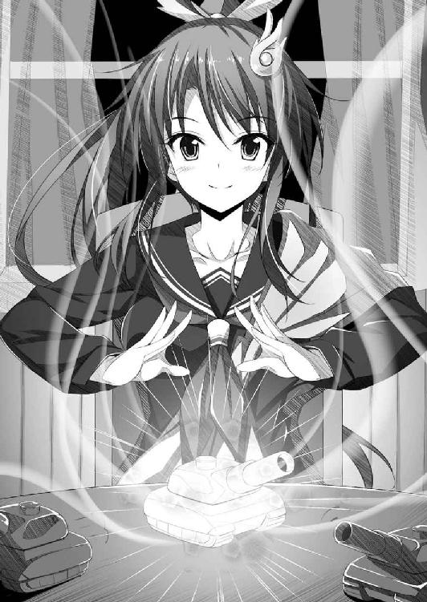

| GOD W（｀・ω・´）RLD2 ―ごっど・わーるど― (富士見ファンタジア文庫) | |
| 吉村 夜 | |
| (2014) | |
ＧＯＤ Ｗ（｀・ω・´）ＲＬＤ２
─ごっど・わーるど─
吉村 夜

富士見ファンタジア文庫
本作品の全部または一部を無断で複製、転載、配信、送信したり、ホームページ上に転載することを禁止します。また、本作品の内容を無断で改変、改ざん等を行うことも禁止します。
本作品購入時にご承諾いただいた規約により、有償・無償にかかわらず本作品を第三者に譲渡することはできません。
本作品を示すサムネイルなどのイメージ画像は、再ダウンロード時に予告なく変更される場合があります。
本作品は縦書きでレイアウトされています。
また、ご覧になるリーディングシステムにより、表示の差が認められることがあります。
口絵・本文イラスト 早川ハルイ
ＳＣＥＮＥ１
正義の女神の大いなる神話、ここに始まる！
────三浦 会音
（あ）
朝の光がさしたのを、あたしは肌の感覚で察知した。
意識が速やかに覚醒する。ぱちっと目を開ける。
ゆっくりと身体を起こして周囲を見回した。天蓋つきの豪奢なベッド。かたわらでは、猫耳幼女のあいちゃんこと聖霊アイスが、すやすやと寝息を立てている。
「夢じゃない」
あたしはつぶやいて軽く右肩を回した。昨日さんざん暴れ回ったせいか筋肉痛があり、関節が少しだるい。でもそれはあたしにとって、これは夢じゃなくて現実なんだ！ と証明してくれる爽快な感覚だった。
「夢じゃない......！」
激しい歓喜が心の深奥からこみあげてきた。あたしはひらりとベッドから飛び降りると、窓辺へ駆け寄ってカーテンを勢いよく取り去った。
朝陽を受けて金色に輝く大海原が、窓いっぱいに広がっている。留め金を外して窓を開け放つと、潮風の香りが鼻腔をくすぐった。
う～ん、すばらしい！
「夢じゃないんだ──────！ よっしゃあ──────！」
思わずガッツポーズ！ あたしは！ 三浦会音は！ この異世界タイタンに女神として降臨したのよ！ イヤッホォオオオオオオオオオオオ！ ハァアアアアアアアアアアア！
「うにゅ......？」
あいちゃんが猫耳をぴくりと動かした。でも、まだ昨日の疲れが残っているんだろう、寝返りを打っただけで眠りの海へ帰っていった。
窓の外には半円形のテラスが広がっている。テラスへ出るための引き戸があるけど、あたしは窓枠を素足のままで乗り越えた。
手すりまで歩く。足を肩幅に開いて立つ。腕組みして雄大な風景を堪能する。絶景かな、絶景かな～！
外洋に面しているため波の音が荒々しい。どぉーん、どぉーん、と太鼓の音ように腹に響いてくる。その勇壮な音色に身を浸していると、体内へエネルギーが流れこんでくる気がする。心のボルテージが際限なく高まってくる。
（そう......あたしはこの異世界タイタンに正義の女神として降臨した。今、タイタンは魔神ナタスとかいうアホバカマヌケのド畜生のせいで戦乱に見舞われている。あたしはみんなの期待にこたえるためにも、やるべきことをやらなくちゃ）
すうううううううううう、と大きく深呼吸っ！
「やるぞおおおおおおおおおおおおおおおおおおおお！」
拳を高々と突き上げて宣言すると、あたしは室内へもどった。
机の上にある瀟洒な呼び鈴を手にとり、軽く振る。小さいけれど鋭い音が鳴り響く。待つことほどなく、ドアをノックする音がした。
「入りなさい」
「おはようございます、カイネ神」
あらわれたのは、アン王女が世話役としてつけてくれたリリーだった。まだ起きたばかりらしく、髪に櫛が入っていない。でも背筋はしゃんとしているし、目だってぱっちりと開いている。
「おはよう、リリー。ちょっと聞きたいんだけど、このアンデル城に大人数を収容して会議を開けるような大部屋はある？ 当然、あるわよね？」
「はい、ございます。城の一階、中庭に面した第一広間がそうです。諸将や大臣を集めての会議、また舞踏会や戴冠式といった催し物の際にもこの部屋が使われます」
「よろしい。では、ダジュラ、パリエル、ゼイモラ、それに王女や大臣や軍の幹部たちにこう伝えなさい。朝食後、ただちに第一広間に集合！ あたしが議長となり、今後の方針を決める戦略会議を開くわ。このアンデル王国はおろか、タイタン全土の命運を決する重要な会議だからね、遅刻なんかしたら鞭打ちの刑に処すわよ！ 用件は以上」
「かしこまりました！」
リリーは元気よく返事をして姿を消した。
そうよ、今は戦時下なの。時は金なり、無駄にしてはならない。
（あたしは魔神ナタスを討ち破り、ついでにタイタンのほかの国々も平らげて、天下統一を成し遂げてみせる！ その後はあたしの統治により、世界は未来永劫に亘って平和を約束されるの。これは、そう──生まれてからこのかた、強者街道をまっしぐらに生きてきたあたしに課せられた使命なのよ）
全身の細胞が活性化している。あたしがずっと待ち望んでいた荒々しく猛々しい人生、思いっきり楽しんじゃうぞぉ～！
このアンデル王国は小さな島国にすぎない。対して魔神ナタスが統べるナヴレスは大国だ。この戦いはあたしにとって、かなり不利な状態からスタートしている。
でも、歯ごたえのある強敵との戦いって楽しいじゃない。ねえ？
あたしはこの状況を、女神カイネの神話を彩る気の利いた試練と捉えていたの。
＊ ＊
豪華な朝食をがっつりとおなかいっぱいつめこんだあたしは、ダジュラ、パリエル、ゼイモラ、あいちゃんを引き連れ、リリーの案内で第一広間へむかった。
「みんなお待たせー！」
肩で風を切り、颯爽と入室する。大急ぎで用意したのか広間に並べられた机や椅子は不揃いだったけど、すでに王女以下、王国の要職に就いている人々が顔をそろえていた。けしからんことに何人かはまだ眠そうな顔だったけど、まあいいわ、今日のところは大目に見てあげましょう。
広間の正面には立派な演壇が設けられ、演壇の後ろの壁には大きな大陸全図が貼られている。最前列は空席で、二列目の席をアン王女や侍従長のクヴァル、騎士長ガラシュなどが占めていた。王国において高い地位にいる者ほど前の席を占める座順ってことね。
なぜ最前列が空席なのかといえば、そこに座るのは救世主である神や英雄ってわけ。
「んじゃ、あんたたちはそこに」
ダジュラたちを最前列の席に座らせると、あたし自身は演壇に登った。
「みなの者、朝からご苦労！ 自己紹介するまでもないけど、これが初顔合わせになる人もいるから念のため名乗っておくわ。このあたしが、あらゆる神々の中で一番偉くて一番優しくて一番美しくて一番強い、正義の女神カイネよ」
参集した一同──総勢百人くらい──を壇上から眺め渡す。そのうち半分くらいの人は腰に剣を佩いていた。たぶん、文官と武官が半々って構成なのね。
「今、タイタンは魔神ナタスが吹かせる暴虐の風にさらされ、諸国の民は戦火に怯えながら暮らしている！ これを救うのは、あたしとあたしにつき従う者たちの使命よ！ あたしたちは島に上陸したナヴレス軍を追い払うことに成功したけど、すぐに次の手を打たなければならないっ！ てことで今後の方針について議論すべく......これより記念すべき第一回、大正義カイネ神国戦略会議を開く！」
あたしは拳を高々と突き上げて宣言した。
「えっ？」
「あの、これは、どういう......」
「だいせいぎ......？ カイネしんこく......？」
あら？ なんなの、この反応は。拍手のひとつもするべき場面なのに、みんな動揺した様子でざわついてるんだけど。いいたいことがあるのにいえない様子で、近くの人と小声で言葉をかわしあっているんだけど。
「なあ、カイネ」
おずおずとダジュラが口を開いた。
「なによ」
「なんだ、その、大正義カイネ神国って」
「この正義の女神カイネが率いる国家の名称よ。文句あんの？」
「おいおい！ ここはアンデル王国っていう何百年だかの、なが～い歴史がある王国なんだぞ。その国名をカイネの一存で勝手に変更しちゃまずいだろ」
ムカッ！
「馬鹿いってんじゃないわ！ 自分たちの手に負えない戦乱が生じているからこそ、王女はあたしを神として召喚したんでしょうがっ！ ここにいる中で一番偉いのはこのあたし、正義の女神カイネなのよ！ そのあたしが決めることに文句があるってーの？ 文句があるやつは誰だー！ いってみいやー！」
あたしが空気をびりびり震わせて怒鳴りつけると、ざわついていた連中は押し黙って下をむいた。でも、王女やガラシュなどはむっとした顔つきであたしを見ている。
「そのう、みなさま」
と、後方の席から頭をかきかき立ち上がった者がある。あたしと一緒に炭鉱の町コルドンを解放した兵士長のゾルダだ。風貌こそパッとしないけど、なかなか胆力があってデキるやつだとあたしは踏んでいる。
「実際、カイネ神のおっしゃることはもっともです。魔神ナタスとナヴレス軍は、アンデルの民だけでどうにかできる敵ではない。我々はカイネ神とダジュラ神におすがりするほかないのです。大正義カイネ神国、ですか。いいんじゃありませんか？」
『みなさま』といいつつも、ゾルダの視線はアン王女とその隣に座ったガラシュにむけられていた。
王女もガラシュも、「なにをいいだすんだ」といわんばかりに目を剝いた。王女はアンデル王国の最高権力者だし、騎士長ガラシュは軍事における最高指揮官だ。本来、一介の兵士長にすぎないゾルダごときが意見できる相手じゃないんでしょうね。
（ふん。神であるこのカイネが新たな指導者になっちゃうのは、これまで指導者の地位にあった人たちにとっては迷惑ってことかしらぁ～）
あたしはこの件を黒のぶっとい油性マジックで心にメモっておいた。国に二人の指導者がいては内部崩壊を招く。ましてや、今はみんなが力をあわせなければならない戦国乱世なのだ。近いうちに、王女たちにはこのことを得心させる必要がありそうね。できれば言葉で。それがだめなら腕力で。
パンッ！
あたしは柏手を打つように思い切り手を打ちつけ、大きな破裂音を立てた。一同がびくっとしてゾルダからあたしに視線をもどす。
「とにかく！ 今は非常時なのよ。魔神ナタス率いるナヴレスは馬鹿でかい国で、こうしている今もばんばん徴兵したり、新たな神粘土を採掘したりして強大化の一途をたどっている。対抗策を講じ、速やかに手を打っていかなければ、このちっぽけな島は滅びる。だからこそ、あたしはこの戦略会議を開いたわけよ。それを肝に銘じてちょうだい。さて──ゼイモラ！」
「はっ」
ガシャリと鎧の音を鳴らしてゼイモラが立ち上がる。あたしは「こっちに来なさい」と大男を手招きし、演壇の前に立たせた。
「もうみんな知っているわね？ このゼイモラは魔神ナタスが創造した英雄で、アンデル島を占領すべくナヴレス軍を率いてやってきた。でも、あたしたちに敗れ、降参して、味方になることを誓った。そこでまずはゼイモラの口から、あたしたちにとって役立ちそうな情報をこの場で開示してもらうわ」
すると、またまた一同はざわざわし始めた。多くの者がゼイモラの巨軀に疑わしげな視線をむけている。
「コラァー！」
あたしはカチンときて、またまた大声をあげた。
「なんだお前らその態度はっ！ 正義の女神であるこのカイネがゼイモラを信用して迎え入れると決めたのに文句あんのかー！ いいたいことがあるなら、ざわざわしとらんではっきりいうてみいやあああああああああああああああ！」
「おい、カイネ！」
ダジュラがたまりかねた様子で立ち上がり、あたしのそばへ来てなだめる手つきをした。
「少し落ち着けよ、そうぎゃんぎゃん怒鳴り散らすことないだろう」
「ハン！ 怒鳴りたくもなるわ。あんたたち、耳かっぽじってよく聞きなさい」
あたしはむしろヒートアップした。なんせ、落ち着くのは苦手だけどヒートアップするのは得意だし。
「こんなわかりきったことを何度もいいたかないけど、そこに貼られている大陸全図を見なさい！ ナタス率いるナヴレスは大国、対してこのアンデルは辺境のちっぽけな島国にすぎないのよ？ そんな小国が戦乱を乗り切るには、矢継ぎ早に手を打ってナヴレスとの戦力差を縮めなければならない！ そもそもゼイモラを仲間に迎え入れようといいだしたのはあたしじゃなくて、あたしの従属神のダジュラよ。でも、あたしはそれをとてもいいアイデアだと思った。ナタスに反感を持つ英雄を説得し、仲間として迎え入れれば、敵の戦力は減ってこっちの戦力は増えるんだから一石二鳥でしょ。あたしは今後もこのゼイモラ同様、敵であっても有能な者は配下として迎え入れるつもりだから。わかったぁ？」
気迫をめいっぱい押し出してまくしたてると、一同は打って変わってしぃ～んと静まり返った。
「もちろん、あんたたちが何をいいたいのかくらい察してるわ。ゼイモラが裏切ったらどうすんだとか、降参したふりでナタスにこっちの動きを伝えるつもりだったらどうすんだとか、そういう心配をしてるんでしょ？ でもね、そんなもんいちいち心配していた日には自分以外誰も信用できない。聡明なるこのカイネが信頼すると決めたんだから、あたしの配下であるあんたたちも黙って信頼すればいいの。ゼイモラ！」
「はっ」
「今いった通りよ。我が大正義カイネ神国はまだ英雄の数が少なく、兵力もたかが知れている。だから、あんたみたいな有能な人材には高い地位を与えて、たくさん働いてもらうわよ。そして、まあそんなことはないだろうと信じているけど、もしあたしの信頼を裏切ったなら、その時はこのカイネがじきじきにあんたを討つ。いいわね？」
「降将であるおれの身には、もったいないほどのお言葉です。必ずや信頼にこたえてみせましょう」
ゼイモラは鎧の胸部を拳でガツンとたたいた。これって、ナヴレス式の敬礼らしい。
「そういうことだからゼイモラ、仕事よ。これからナヴレスと戦ってゆく上で、さしあたりあたしたちが知っておくべき情報を開示してちょうだい。ただし、なるべく簡潔にね」
「承知しました」
ゼイモラはうなずくと、あたしに背をむけて一同にむきなおった。
「さてしかし、どこから始めたものか......。そうですな、まずはナヴレスという国家の仕組みから話すとしましょう」
この段になると、さすがに興味津々なんだろう、誰もが大真面目な顔でゼイモラに注目していた。
「かつてのナヴレスは各地方を大貴族たちが領有し、そのまとめ役として皇帝が君臨する国家でした。皇帝は最高権力者でしたが、その権力には制限があり、大貴族たちを無視した政治はできなかったのです。しかし、現在のナヴレスは軍事、政治、経済、すべてにおいてナタス神が強大な決定権を持つ独裁国家となりました。それまで大臣や領主といった要職に就いていた者のほとんどは処刑もしくは追放され、現在ではナタス神が創造した英雄たちがそれらの地位を占めております。で、みなさまにとって最も重要な情報といえば、軍事面において要職を占めている者たちのことでしょうな。ナヴレスにはグレードＡの強力な神粘土から創造された英雄が七人おり、めいめい軍団を率いております。すなわち、魔将軍。真眼ヴィルシャ、闇黒イリス、竜王バウバロス、剣鬼パーランダー、天秤サロア、炎魔ナシュバル、そして──不肖、この牙面ゼイモラもその一人でした」
「七人の魔将軍か......。あのさ、ゼイモラ。そいつらはおれたちにとって最大の障害となる強敵だ。でも、誰がどういう能力を持っているのかあらかじめわかっていれば、戦う前に対策を立てておける。そのへんどうだい？」
ダジュラがたずねた。うん、あたしもそれは知っておきたい。
「幾人かの能力は把握しております。しかしダジュラ神、情報を開示するにやぶさかではないのですが、ひとまずそのことは脇へ置いて話を進めさせてください。これらの魔将軍の下にグレードＢの神粘土から創造された英雄たちが部隊長としてつき従い、その下に一般の兵卒がつく形で軍団は構成されております。が......これはあくまで、『今現在』の話にすぎません」
ゼイモラは空咳をひとつした。
「ナヴレスでは老人や子どもまで動員して神粘土の採掘が行われています。それは筆舌につくしがたい、奴隷的な労働です。働きぶりが悪いと見なされれば女でもようしゃなく鞭打たれ、時には子どもでさえ見せしめとして、むごい目にあわされるのです。そうやって採掘された神粘土は、次々にナタス神の御座所であるナタス宮へ運びこまれます。そう、こうしている今もです。強力な神粘土が新たに手に入れば、ナタス神は新たな英雄を創造できます。時が経てば経つほどナヴレス軍は強大化してゆくのです。従いましてカイネ神がおっしゃるように、これに対抗するには矢継ぎ早に手を打ってゆくことが肝要かと」
誰かがごくっと生唾を吞む音がした。あたしが最初からさんざんいってることなのに、広間の面々は今さら危機感を抱いたように顔を青ざめさせている。こいつらって、ほんとに事の重大さを理解してるのかしら？
「ゼイモラ、質問したい。ナヴレスはずいぶんと広い国のようだが、神粘土を産出する鉱山も多数擁しているのか？」
パリエルが壁の大陸全図を眺めながらたずねた。
「いかにも。ナタス神はナヴレスの掌握に乗り出す以前から、神粘土の埋蔵量が多いと目される鉱山や丘陵の調査に力を注いでおりました。国内はもちろん、周辺国にもその調査は及んでいるのです。託宣ダイナという神粘土探知能力を持つ英雄がおり、彼女が調査活動全般を指揮しております」
ふーむ、とあたしはうなった。
「ナタスはすでに相当量の神粘土を手にしているみたいねえ。ゼイモラ、あんたの鉄球棒と鎧は神粘土から創造された特別製なんでしょ。ナヴレスのほかの英雄たちもそういう高級品を装備しているの？」
「魔将軍は例外なく、神粘土から創造された魔法の武器や防具を所持しております。しかしナヴレス軍では魔将軍より一格劣る英雄であっても、いえそれどころか一般の兵であっても、手柄を立てればそれに応じて金、領地、魔法の武器や防具、なんでも望むものをナタス神よりたまわることができます。また、特に優れた功績をあげた者は、希望すればネクタルをたまわることもできます」
「ネクタル？」
あたしはおうむ返しに聞いた。
「神の薬、あるいは神の酒、とでも申しましょうか。カイネ神、神粘土から一時的に体力や動体視力を高める薬物を創れることはすでにご存じですな？」
「ええ」
「グレードＡの神粘土を材料にすれば、一時的にではなく、恒久的に体力や特殊能力を底上げする薬物を創れるのです」
「えっ！ それ、ほんと？ それってつまり、グレードＡの神粘土からネクタルを創って飲みまくれば──」
「そうです。際限なく英雄を強化できます。また、普通の人間がネクタルを飲むことにより、英雄に匹敵する身体能力や特殊能力を得ることも可能です」
「............！」
「ただし、です。例えばここにグレードＡの神粘土から創造された英雄と、グレードＢの神粘土から創造された英雄がいたとしましょう。そして、グレードＢの神粘土から創造された英雄がネクタルを飲んだとします。この時、両者の力関係はどうなるか？ グレードＢの神粘土から創造された英雄の能力を底上げしたわけですが、それでもなお、彼の力はグレードＡの神粘土から創造された英雄には及びません。すなわち、ネクタルで英雄の力を底上げするのは、はっきりいって割にあわんのです」
「だけど、ある英雄が何本、何十本、何百本とネクタルを飲みまくれば、そいつはとんでもなく強大になるってことよね？」
「はい」
あたしはダジュラと視線をかわした。
「それ、すっごく重要な情報だな。グレードＡの神粘土からネクタルを創りまくって、そんでもっておれがそれを飲みまくれば、めちゃくちゃ強大な神になれるってことだろ。──あっ！」
ダジュラは目を剝いた。
「ゼイモラ！ もしかして、ナタスはすでにネクタルを飲みまくってるのか？ そうやって自身を強化しまくっているんじゃないのか？」
「そうなのです」
ゼイモラはゆっくりとうなずいた。
「ナタス神はナヴレスを、また新たに獲得した領土を、苛烈な圧政によって支配しています。それに不満を持つ者は山ほどいますが、面とむかってナタス神に反抗する者はいません。なぜならナタス神は多数のネクタルを服用することにより、とてつもない戦闘能力を有しているからです。七人の魔将軍が束になってさえ、まったく歯が立たないほど彼は強大であり、逆らえば死あるのみ。例えばの話ですが──」
ゼイモラは虚空へ視線をやった。
「このゼイモラがナタス神に一騎打ちを挑んだとして......二、三秒もてば良い方でしょう」
「そんな馬鹿な！ ダジュラと私をあれほど苦戦させたゼイモラを、そこまで一方的に屠り去る戦闘能力だと？ 魔神ナタスとは、そこまで強大なのか？」
パリエルが椅子を蹴って立ち上がった。王女たちも激しくざわめいている。
「なんてこった。おれたちはそんなやつとことを構えちゃったのかよ」
ダジュラが嘆いたけど、無理もない。我こそ最強と自負しているあたしでさえ、これにはちょっとびっくりよ。
（ここにいる中でびびってないのは、あいちゃんくらいね）
あたしは最前列の席にいるあいちゃんを眺めた。彼女にとってこの会議は退屈なだけなんだろう、すーすか寝息を立てている。
「そう、ナタス神は空恐ろしいほど強大です」
ゼイモラはまずあたしを、次いでダジュラを、兜の奥から赤い瞳で見つめた。
「彼をこのまま放置すれば、いずれタイタンは彼に征服され、恐るべき時代が到来します。力なき者は奴隷の身に落とされ、彼に逆らう者は生きてゆけぬ暗黒の時代。それを防げる者があるとすれば、それはナタス神以上の力を持つ神、これをおいてほかにない」
ゼイモラの口をついて出る言葉は男臭い声音も手伝って、ひどく厳かなものだった。
「おれはナタス神に創造された英雄ですが、彼の残忍さや冷酷さを不快に思っていました。だが、彼に唯々諾々と従うばかりで、逆らう勇気はなかった。おれは......図体ばかり大きな臆病者だったのです......。しかし、カイネ神、ダジュラ神。おれは、おれを討ち破ったあなたがたの力に触れて、またナタス神にはない慈愛の心に感銘を受けて、賭けてみたくなった。あなたがたは、今はまだナタス神ほど強大ではない。けれど知恵と勇気を振り絞って多くの神粘土を獲得し、強大な軍勢を整えて、いずれはナタス神に対抗できる存在になれる、いや、なってもらわねばこまる！ このゼイモラ、その目的を果たすためとあらば、命を捧げる覚悟はできております」
あたしは目に力をこめてゼイモラの視線を押し返した。
「ゼイモラ。あんたの気持ち、しかと受けとったわ。そしてまた、今の言葉で大正義カイネ軍がとるべき方針もはっきりしたわ。あたしたちはとにかく大量の神粘土をかき集めなければならない。そうしないことには、魔神ナタスには対抗できない」
ゼイモラは得たりとうなずいた。
「その通りです。タイタンにおける神々の闘争とは、突き詰めれば、神の力の根源にして戦略資源である神粘土のとりあいです。この点をカイネ神、ダジュラ神はもとより、アンデルのみなさまには深く認識していただきたい。で、そのことを踏まえて話すのですが──カイネ神、ちょっと失礼。場所をお譲りください」
ゼイモラはあたしに代わって演壇に登ると、壁面の大きな地図を鉄球棒で示した。
「この大陸全図を見ていただきたい。ナヴレスはタイタン東側で最も広い領土を有する強国です。そのナヴレスがまず戦争を仕掛け、占領したのはどこか？ それはナヴレスの南に位置するこのライラス共和国です」
なお、そのライラス共和国から海を隔てた南に、このアンデル島がある。
「これには理由があります。ナタス神が、神粘土を埋蔵している鉱山や丘陵の調査をしていた件はすでに述べました。そして、ナタス神はライラスに優良な神粘土鉱山があるとあたりをつけていたのです。それはここ......ライラスの南、クノーデンの町。古くから採掘と製錬で栄えてきた町で、主に銀を産出してきました。この鉱山、岩盤に表出している神粘土はごくわずかなのですが、深く掘れば神粘土の大鉱床があると目されているのです」
「なるほど。この戦争の肝は戦略資源である神粘土をいかに多く、それも迅速に確保するかにある。ナタスが真っ先にライラス共和国へ侵攻した理由もまた、神粘土ありきなのね」
あたしはあいかわらずすーすか寝息を立てているあいちゃんを見やった。
あたしはタイタンに降臨して神粘土と創造術についての説明を受けると、すぐに神粘土こそがこの世界における神の力の根源と気づいた。だから、神粘土探知能力を持つ英雄を──この聖霊アイスを──創造した。だけど敵も考えることは同じってわけね。
「まあ、各国が保有する戦力なども総合的に勘案しての決定なのでしょう。とはいえ神粘土の存在が、ライラスが真っ先に標的となった大きな要因となっているのはまちがいありません。そのう......」
ゼイモラはややうつむき加減になった。
「ライラス占領後、このゼイモラにアンデル島を攻略すべしと命令がくだったのも、ライラスの鉱山が関係していると思われます。アンデル王国はライラスよりずっと小さな国で、ましてナヴレスとは比ぶべくもない。が、海を隔てているとはいえ、アンデルはクノーデンの町に近く、海が荒れていなければ半日ほどで到達できます。ナタス神は、アンデルを占領しておかないとクノーデンの安全が確保できないと判断したのでしょう。もうこの際、正直にいいますと、この小さな島で二柱も神が召喚されており、しかも強力な神粘土から創造された武器まで所持していたのは、おれには大きな驚きでした。ナヴレスでは、アンデル島に神粘土を産出する鉱山があることは把握していたものの、しょせんは辺境の小さな島国、産出される神粘土はグレード、埋蔵量、いずれもたかが知れているだろうとの読みでした」
アン王女とガラシュは驚愕した様子だった。そもそもナヴレス軍は、なんでわざわざアンデルみたいなちっぽけな国を攻めたのか？ その理由は、『アンデルなんかどうでもいいけど、クノーデンの鉱山が心配だから念のため潰しておこう』ってことだったのね。
「重要なのはここからです」
ゼイモラはあたしとダジュラに視線を配った。彼は、この国の最高権力者はすでにアン王女ではなく、あたしとダジュラなんだと理解しているようだ。なんせゼイモラはナタスがナヴレスの旧支配者層を一掃したのをその目で見ているから、権力は力ある者が握るって現実を深く理解しているんでしょうね。いっぽう、このアンデル島では何百年も王族は王族、騎士は騎士、平民は平民、って固定化した社会が続いてきたようだから、王女やガラシュはそれを理解するのに時間がかかるのかも。あっと......時間がかかっちゃこまるわね。折を見てあたしが理解させてあげなくちゃ。
「ナタス神はタイタン全土の支配をもくろんでこの戦争を始めました。ライラス共和国を占領したのはその第一歩にすぎません。ですがナタス神は傲慢な性格のせいか、性急にことを運びすぎている観があります。ナヴレス軍はライラスに侵入するや否や、わずか三日で首都ライアを陥落させました。けれど、まだ領内にいくばくかのライラス軍残党が存在しているにもかかわらず、ナタス神は掃討作戦を命じないどころか、軍の大半をナヴレス本国に引き上げさせました。矢継ぎ早に新たな侵攻作戦を行うために......。ずばりいいますと、現在ライラスを占領しているナヴレス軍の兵力はわずか五千にすぎません。その内訳ですが、主だった町や砦などの要所に配置されている兵力が二千、ナタス神が最重要視しているクノーデンに配置されている兵力が三千です」
「ということはっ！」
あたしは顔をほころばせた。
「チャンスってわけね？ さほどの兵力を置いていないなら、あたしたちが急襲して、クノーデンの鉱山をナタスからブンどれる......！」
「はい。繰り返しますが、この戦争で最も重要なのは戦略資源である神粘土をいかに確保するかです。ナヴレス側が所有している神粘土鉱山を奪取できれば、敵の力は減りこちらの力は増すので一石二鳥といえます」
ガタン！
「ちょっと待ってください」
たまりかねたようにアン王女が立ち上がった。それどころか、彼女は席を離れてあたしのそばに来た。
「カイネ神。この男の口車に乗せられてはなりません。アンデルは小さな島です。人口も少なく、当然、兵力も少ない。そんな大博打を打つなど、あまりに危険です！」
王女はゼイモラを憎らしげにひと睨みした。
「じゃあ聞くけど、あんたは何をどうしたいの？ まさかと思うけど、今後の方針について代替案もないまま反対するんじゃないでしょうね」
あたしはやる気に水をさされてむっとしたものの、彼女の意見を聞いてみることにした。べつに王女だからって配慮したんじゃないわよ。彼女にもっといい意見があるのなら、それを採用するわ。
「もちろんございます」
王女は自信ありげにうなずいた。
「島に上陸したナヴレス軍を撃退し、魔将軍であるゼイモラをこうして捕虜とした今、ナヴレスが我が国に再侵攻してくるまでにはかなりの時間的猶予があると予想されます。今しがたこのゼイモラがいった、ライラスに駐留するナヴレスの兵力が少ないとの情報が真実なら、なおのこと時間は私たちに味方してくれるはずです。そこで......幸い、島には小さいながらも神粘土を産出する鉱山があることですし、カイネ神とダジュラ神には島で神粘土が産出され次第、新たな英雄や武器を創造していただきます。そうやって戦力を増し、防備を固めつつ──」
王女は地図の前へ行き、ナヴレスの北東に位置する国を指さした。
「オルダニア王国へ急使を派遣、軍事同盟を結ぶのです」
そのオルダニアとやらは地図で見たところ、ナヴレスを除けば東側で一番大きな国だった。大陸北東の海に接しているため、海路でゆけば他国を通らずに行ける。
「それで？」
あたしは冷やかにたずねた。王女はあたしが乗り気でないのを知って、少しひるんだ顔つきになった。
「......オルダニアは、ナヴレスには及ばないものの強国で、多数の兵力を擁しています。味方となれば心強いのです。大陸東側の国家の大半は過去の大乱の反省から否神条約を結んで神の召喚を禁じてきました。このオルダニアも例外ではありません。けれどアンデルがそうであったように、オルダニアも有事に備えて、密かに召喚石や高グレードの神粘土を蓄えていたはずです。すでに魔神ナタスに対抗すべく神を召喚していることでしょう。大国であるオルダニアを中心にして東側諸国が連合、その力をもってナヴレスに対抗するのです」
「カイネ神！ 不肖、この騎士長ガラシュも姫様と同じ考えです。ナヴレスは我らだけで戦える相手ではない。この戦乱を乗り切る最も重要な点は諸国との連携、これにあります」
ガラシュが立ち上がって王女を援護したけど、あたしの冷やかな態度は変わらなかった。
「却下。論外」
あたしはにべもなく王女の意見にだめ出しした。
「どうしてです！」
王女は自分の意見がすんなり受け入れられると思っていたのか、大きく胸を喘がせた。
「どーもこーもないっつーの。ナタスはライラスの鉱山で神粘土を採掘させている。そんでもって採掘された神粘土は本国へ送らせている。ナヴレス軍が再侵攻するまでには時間的猶予がある？ トロいこといってんじゃないわ。こうしている今も魔神ナタスとナヴレス軍はどんどん強大化している。時間的余裕なんてこれっぽっちもないの。第一......」
あたしは少し意地悪な笑みを浮かべた。
「そのオルなんとかって国と軍事同盟を結んだとして、ナヴレスの脅威からアンデルを助けてくれると本気で思ってんの？」
「思いますとも！ 同盟を結んだ国を見殺しにしては、ほかの同盟国の信頼を失います。国家間の約束事は、人と人がかわす日常的な約束事よりもはるかに重いんです！」
「そう？ あたしが、えー、オルダニア？の為政者なら、アンデルなんてちっぽけで遠くにあるどうでもいい国は、ナヴレスに捨て駒としてぶつけることを考えるけどねー。見捨てたからって復讐される心配もなさそうな小国なんだしぃー。戦争の最中に運良く滅びちゃったなら、戦争が終わった後で新たな領地にできちゃうしぃー。ナヴレスもこんな風に考えるんじゃない？ よし、まずはこのアンデルとかいう小島に兵力を送って、東側諸国が結んだ同盟の結束力がどの程度か調べてみよう、なーんて」
いっぱい人がいる前でまっこうから否定されたのを辱められたと感じたのか、王女は顔を紅潮させて肩先を小刻みに震わせた。
あたしはべつにこの子をいじめたいと思ってるわけじゃない。こんな歳若いのに一国の命運を預かっているなんて、苦労人だなって同情さえしている。
でも、だからといって今後の方針を決めるこの会議で手心を加えるわけにはいかない。なによりこの子には、この！ あたし！ 正義の女神カイネが神聖不可侵の最高権力者なんだってことを早く理解してもらわないと......ね。
「ダジュラ！ パリエル！ あんたたちはどう思う？ 意見を述べて」
あたしは話の矛先をべつの方へむけた。
「......私は、そうだな......」
パリエルは人さし指を唇にあてて少考すると、ちらりとダジュラを見た。
「私は、まずダジュラの意見を聞いてみたい」
む。
なんなの、この子。自分の意見があるにはあるけど、ダジュラと自分の意見がバッティングしちゃったらやだなー、だからまずはダジュラの意見を聞きたいなー、みたいなニュアンスが感じられるんだけど。あたしの思いすごし？ くぬぅー、なんかカンに障るわ。
「ダジュラ神。あなたもカイネ神と同意見なのですか？ そうではないですよね？ そもそもつい先日まで敵将であったゼイモラの述べたことを鵜吞みにしてよいわけはありません。そうでしょう？」
王女はあせりを隠そうともせず、ダジュラが口を開く前に牽制をかけた。
ダジュラはこまったように王女をしばし眺め、パリエル、あたし、と視線を移した。
（ダジュラ！ あんたは仮にも神、この大正義カイネ神国であたしの次に偉い、いわばナンバーツーなんだからね。でも、ここで情に流されて自分の意見をきっちりいえないようじゃ、ナンバーツー失格だよ！）
あたしはそういう意思をこめて、睨むような強烈な視線をダジュラに送った。
「じゃあ、おれの意見をいわせてもらおう」
ダジュラは頭をかきながら、成り行きを見守っている王女の臣下たちをひと渡り眺めた。
「お姫様の意見にも一理ある。ナヴレスと対抗するため、ほかの国と手を結ぶのはいい案だ。そうさ、一対一で戦うより、一対二、一対三のほうが有利なのは当たり前なんだから。だからおれはお姫様の意見を否定はしない。けれど、さ。この闘神ダジュラを苦戦させたゼイモラでさえまったく歯が立たないほど魔神ナタスが強大なら、これ以上の力を与えた日にはそれこそ手がつけられなくなる。そうさせないため、鉱山を攻める策を支持したい。つまり、こうだ。おれやカイネが鉱山を攻めるその一方、軍事同盟締結のための使者をオルダニアへ派遣する、これがいいんじゃないか？」
「なるほど。いい意見だと思う。賛成だ」
パリエルが大真面目な顔ですぐに賛成票を投じた。あんた、ダジュラに迎合してんの？ 媚売ってんの？ それともあたしの考えすぎ？
「ダジュラ。あたしと王女の両方にいい顔をしたわね」
あたしは眉をひそめてみせたけど、でも......内心では悪くない案だと思っていた。この際だから両方やっちゃおう、か。あたしって基本的に他力本願は嫌いなのよ。でもとりあえず同盟を結んでおいて、オルダニアとやらがあたしの役に立ってくれればよし、あたしをムカッ！ とさせる真似をしたならナヴレスごとブチのめしちゃえばいい。
すっ、と後ろの方の席で一本の手が挙がった。ゾルダだ。
「あら。なにかいいたいことがあるの？ いいわよ、いっても」
「カイネ神、若輩者で末席をあたためるにすぎない私ごときに発言を許可していただき、ありがとうございます」
ゾルダは立ち上がると、ガラシュに視線を送った。彼にとって、これまで軍団のトップであり上司だったのはガラシュだ。
「私は姫様の提案した軍事同盟の件も、ゼイモラ殿の提案した鉱山奪取作戦も、非常に興味深く受け止めました。ただ、クノーデンの鉱山の防備がどの程度なのか、もう少し情報を得たい。我々にはカイネ神、ダジュラ神、二柱の心強い神がついておりますが、一般の兵に関しては兵力、装備、練度、いずれもナヴレス軍に劣ると認めざるを得ません。ゼイモラ殿、彼我の戦力を冷静に比較して、それでもなお、クノーデンを落とせるとの目算が立ちますか」
ふむふむ。議論を前に進める有意義な言葉だ。炭鉱の町コルドンを解放した際にも感じたけど、このゾルダは冴えない風貌に似合わず有能ねえ。今後の活躍次第では、どんどん昇進させちゃおう。
「まさに重要なのはそこでしょうな」
ゼイモラはぶつけてほしかった質問を得たといいたげに大きくうなずいた。
「ではクノーデンの町をナヴレス軍がどのように守っているか、具体的な情報を開示いたします。まだライラスを占領してから日が浅いものの、ナヴレスには建設に力を発揮する英雄もおり、これがすでに兵舎や矢倉などを建造して鉱山を守る態勢を整えております。しかし最大の脅威となるのは、鉱山の守備をまかされている魔将軍とその部下......闇黒イリスと魔狼アルゴです」
「そのイリスとアルゴってのは強いの？」
ダジュラが声をひそめてたずねた。
「イリスはまちがいなく強いですな。女で細身ですが、大鎌を得物とし、凄まじい膂力を誇ります。彼女は太陽光を苦手とする弱点を付加されて創造された英雄なのですが、逆に陽光がない曇天下や夜間には身体能力がすべて増大します。夜目がきくこともあり、夜戦に関しては魔将軍随一の能力です。事実、ナヴレス掌握の際にもライラス侵攻の際にも、夜戦によっていかんなく実力を発揮しました」
「能力がわかっているのか！ 太陽が昇っている時間帯を選んで戦えば、そのイリスって魔将軍は本来の力を発揮できないんだな？ それに、太陽光の力を宿した英雄や武器をあらかじめ創造しておけば、戦いはさらに楽になる！」
「そうなります。ただ......ダジュラ神。おれは炎や酸や雷撃といった特殊な攻撃に耐えうる強靭な肉体を与えられて創造されました。おれのその能力は無条件に常時発動していますが、イリスの能力はある一定の条件下でのみ発動できるものです。このような、能力に制約が課せられた英雄は、弱点や欠点を付加されているのと同じように長所がぐっと伸びます。ですから戦う際、時間帯や天候には細心の注意を払うべきです」
「ちなみにゼイモラが日中、つまり陽光下でイリスと戦ったとしてどっちが勝つ？」
「うーむ。実際に戦ったことはありませんが、ほぼ互角かと」
「ええっ！ 互角ぅ？ なんだよそれ、真の力を発揮していない状態でもそんなに強いのか？ そのイリスって、どんなグレードの神粘土から創造されたんだよ」
「グレードＡ１と聞いております。しかしそれより注目すべきは、イリスがナタス神のお気に入りであり、これまで多くのネクタルを授かっている点です。それゆえ、イリスは並の英雄とは基礎的な身体能力が格段にちがいます」
「とはいえ、弱点がわかっているなら対処できる、か......。部下の魔狼アルゴってやつは？」
「申し訳ないのですが、アルゴがどのような能力を与えられて創造されたのか、おれは知りません。というのも、アルゴはナタス神配下の英雄としては新参者なのです。ライラス侵攻作戦の直前にナタス神が創造し、イリスの部下としてつけました。ただ、魔将軍はみなグレードＡ１もしくはグレードＡ２の神粘土から創造されていますが、その部下となる英雄はみなグレードＢ１からＢ３の神粘土で創造されています。従ってアルゴは雑兵よりは強いのでしょうが、イリスに比べればその力ははるかに劣ると考えてよいでしょうな」
「ゼイモラの配下だったガルジャやホムリスくらいの強さってわけか」
「おそらくは。もっとも、なんらかの計略を用いてイリスとアルゴを鉱山から引き離せば、後は数こそ多くても雑兵です。うまくすれば、そもそもイリスやアルゴと戦わずに鉱山を落とせるかもしれません」
「ん......なるほど」
「また、おれはあの鉱山で、高グレードの神粘土を一時的にまとめている倉庫の場所を知っています。確か、すでにグレードＡが十個以上採掘されていたはず......。そこで、イリスとアルゴの目を盗み、カイネ神かダジュラ神が倉庫へ侵入するという手もあります。倉庫への侵入に成功すれば現地で創造術を行使して武器や英雄を創造できるわけで、その戦力をもってすれば鉱山は楽に落とせるかと。いずれにせよ、このゼイモラはじゅうぶんに勝算ありと考えます」
「グレードＡが十個？ 英雄を十人も創造できるってことだ！ いいなあ、それ。神粘土を保管している倉庫におれかカイネがたどりつきさえすれば、なんとかなりそうだな！」
これまでは王女に気兼ねしてゼイモラに渋い顔を見せていた一同から、おおっ......と感嘆の声があがった。
「ゼイモラ、あんたを仲間にして良かったわ。こういういいかたはなんだけど、あんたって見た目に似合わず頭もキレるようね」
あたしも感心することしきりだった。
「お褒めいただき、光栄です」
「戦闘能力が高いだけで頭はパープリンじゃ将軍は務まらないものねえ。今後もその調子で役立つ意見を遠慮なくいうのよ。この戦争を制するには有能な将星がたくさん必要だから、あたしは無能な人間は今まで地位が高くても降格させるし、逆に功績を積んだ者には金銀財宝でも領地でもばんばん与えて出世させちゃうからねぇ～！」
あたしはこの言葉をことさら大きな声でいった。ゼイモラだけでなく、ここにいる全員にいって聞かせる必要があったから。
んで、その言葉が与えた反応をうかがうと、王女やガラシュや大臣連中はもう露骨に渋い顔になっていた。ダジュラは（もうちょっと言葉を選んで柔らかくものをいえよ）っていいたげなこまり顔。ゾルダのような今は地位が低いけどやる気のある若手たちは（そうそう、そうでなくちゃ！）といいたげに顔をほころばせていた。
「ところでゾルダ。アンデルの兵力ってどれくらいなの？」
あたしがたずねると、ゾルダよりも先にガラシュが「わずか一千四百、しかもそのうち半分ほどは王国の存亡がかかった非常時ということで緊急招集された農民や漁師にすぎません」と、ふくれっつらで述べた。
「カイネ神、ダジュラ神。その一千四百から、島を守るための防衛戦力を半分と見積もると動かせるのはわずか七、八百です。いくらカイネ神とダジュラ神が強いといっても、敵にも強大な魔将軍と配下の英雄がおり、装備でも練度でもわたくしどものそれを上回る兵が三千も防衛にあたっている。やはり、鉱山奪取作戦はあまりにも無謀な賭けだといわざるをえません」
王女がしつこく否定的な意見を述べた。
「防衛戦力ぅ？ なにいってんの、どこが攻めてきてるってわけでもないのに、そんなのいらないでしょ」
あたしは大仰に肩をすぼめた。
「そ──そんな！ まさか、すべての兵力をその賭けのために動かせというのですか！」
とうとう、王女は悲鳴のような声をあげた。
「............」
あたしはポッケから神粘土をひとつ取り出した。ぼんやりとした光を放つグレードＥだかＦだかの神粘土よ。
こね、こね、こね、こね。
「クリエイション！」
みんな大好き、完熟のモンキーバナナを創造！
「あー。ばなな」
いつのまにか起きていたあいちゃんが目を輝かせた。
「もっきり。あいちゃん、退屈なお話につきあわせちゃってごめんね～」
あたしは一本もいであいちゃんに渡した。
「もっきり。ほら、あんたもこれ食べて少し落ち着きなさい」
あたしはさらに一本もいで王女に放った。王女はぱしっと受け止めたけど、馬鹿にされたと感じたのか皮を剝こうとはしなかった。
「ん～、完熟バナナはおいしいわぁ～」
あたしは王女にはおかまいなく、皮をむいてもっしゃもっしゃ一本食べると、残りの房は壇上に置いた。
そうして、すうっと深呼吸した。
「結論からいうわね。ゼイモラの提案した作戦を採用！ 現在アンデルにあるすべての兵力をたたきこんでライラスの鉱山を奪取するわ。王女はお留守番しつつ、軍事同盟のための使者をオルダニアへ派遣して」
大きなどよめきが起こった。あたしとしては「おいコラァー！ 正義の女神の決定に文句あんのかぁー！」と怒鳴りたいところだったけど、あえてそうせず、居並ぶ顔を観察していった。
不満顔の者、反対に回っている者は今後あたしの足を引っ張りかねない。
やるぞ！ って意気ごんでいる者は今後あたしの力になってくれることだろう。
「王女やガラシュがこれは博打だ、危険だ！ と感じるのはわからないでもないのよ。はっきりいうけど、あたし自身、これが博打だってことは承知してるの」
どよめきがある程度おさまったところで、あたしは再び口を開いた。
「でも、みんな冷静に考えてみて。圧倒的といえるほど国力に差があるナヴレスを相手に、こんな、いっちゃなんだけどとるにたらないちっぽけな島が『あいつらに従うのは嫌だ』って牙を剝いたのよ？ 他人を頼ったり、消極策をとったり、そんな生ぬるい手を打つだけで生き抜けるとほんとうに思う？ あんたたちは、神は危険だからって否神条約なんてものまで結んで何百年だかやってきた。でも追いつめられて、あたしとダジュラという新たな神を召喚することにした。もうすでにあんたたちは大きな博打を打ってしまったのよ。だけどこのタイタンで、神はただ神であるだけじゃ無力な一般人と大差ない。神粘土がないことには話にならない。神粘土をたくさん手に入れるために危険を冒す、それはあんたたちがもう一度打つべき博打なのよ」
人々はいつしか静まり返っていた。
「クノーデンの鉱山奪取に成功し、神粘土をたくさん入手できれば、あたしとダジュラの力は増す。そうでなければナタスには対抗できない。だから、これはどうしてもやらなくちゃならない作戦なの。わかって欲しい」
「......おれからもひとこといいかな」
と、ダジュラが意を決した様子で壇上に来た。
「いいわよ、いいなさい」
「なあ、みんな。おれとカイネはこのアンデルって国に神として召喚された。島のみんなはおれたちに魔神ナタスと戦って欲しいんだろ？ 島を守って欲しいんだろ？ でもそれって、よく考えたら勝手な言い草だよな。だって、赤の他人にすぎないおれやカイネにむかって、強大な魔神ナタスと命がけで戦えっていうんだからさ。おれやカイネには、そんなことやってられるかってなにもかも放り投げて島を去るって選択肢もある。けど、カイネは曲がったことが嫌いだし、おれもそうだ。だから戦おうと思う。そして戦うからにはみんなにも協力して欲しい」
ダジュラ......。
あたしは小中学校で経験してきた学級会のシーンを思い出していた。いつもこんな感じなのよね。みんなが勝手なことばかりさえずってまとまらないのを、あたしが鶴の一声で決定する。で、その決定に不満があるやつを、ダジュラがなだめたり諭したりすんの。
「神のご決定です。それに、論理的に考えても妥当だ。やりましょう！」
ゾルダが大きな声で賛成票を投じ、ぱちぱちと手をたたいた。
ぱち、ぱち......。
ぱちぱちぱち......。
パチパチパチパチパチ！
拍手する者の数は次第に増え、最終的には城を揺るがすほど大きな拍手が巻き起こった。「やろう！」、「そうだ、やるぞ！」と威勢のいい声があちこちから放たれている。
王女は敗北したような表情でうつむいていた。
でも、やるっきゃねーのよ。
ノブさん......織田信長は桶狭間で今川義元の大軍を撃破し、一躍、尾張のうつけ者から戦国大名の雄となった。これはあたしの桶狭間だ。この戦いを制して、戦国大名三浦会音の名をタイタン全土に轟かせてくれる！ 大量の神粘土を確保して、魔神ナタス打倒のための足掛かりとする！
（みなぎってきたああああああああああああああああああああ！）
あたしは闘志の炎がめらめら燃え上がるのを感じ、口もとに不敵な笑みを浮かべたの。
ＳＣＥＮＥ２
カイネを暴走機関車とすると、おれはなんだろう。ブレーキがないことを嘆いている機関士か？
────坂上 大樹
方針は決した。魔神ナタスの力を削ぐため、大量の神粘土を獲得するため、鉱山の町クノーデンを攻略するッ！
......って、マジかよぉ......。
おれは会議の席上、ゼイモラが提案しカイネが支持した鉱山奪取作戦に賛成票を投じた。同時に、お姫様が提案したオルダニア王国との軍事同盟締結にも賛成した。
けど、内心では頭を抱えていた。
おれはさ、少なくとも一週間くらいは気楽な日々を送りたかったんだよ。ゼイモラ率いるナヴレス軍をひとまず撃退して、アンデル島の人々に名実ともに神様と崇められるに足る功績を立てたんだぞ？ 豪華なお城に住むことになり、たくさんの召使いにかしずかれる待遇をゲットしたんだぞ？ かたわらにはおれが創造した理想の美少女パリエルがいるし、これはキャッキャウフフな青春ラブコメが始まるんじゃないのぉ～！ って期待していたんだよ。
ところがどっこい、まだ筋肉痛もとれていないうちから、これだもんなあ。カイネめ、戦国大名三浦家の当主気どりで作戦会議を開いたあげく、「方針は決まった。みなの者、ただちに出陣の準備にとりかかれ！」ときたもんだ。
うぅ......。これって、カイネにつきあってスポチャン三昧の日々を送っていた日々とほとんど変わってない気がする。暴走機関車カイネ号と出会ったのが運のつき、おれの人生ってこの先もずっとこんな調子なのか？ そうなのか？ やれやれ......。
「なあ、パリエル。どう思う？」
広間を退出して廊下に出たおれは、おずおずとパリエルに話しかけた。
「どう、とは？」
「つまりその、ろくに休む間もなく、また戦わなくちゃいけないわけだが」
するとパリエルはどういう脈絡なのか、はにかんだ表情になった。
「心配してくれてありがとう。でも、一晩休んですっかり回復した。魔神ナタスに従うのが嫌なら戦わざるをえないのだし、それについては納得している。なにより、ダジュラがこの作戦を支持したのだから、私はその判断を信頼したい」
うーん、そうなの？ パリエルもやる気なの？ 父なる神は嬉しいような期待を裏切られたような複雑な気分だ。
でも、おれが創った理想の美少女にこうこられたら、やるっきゃない。「えぇー。おれは少し休みたいのにぃー」なんて口が裂けてもいえない。
「フッ、かわいいやつめ。ではこの闘神ダジュラとともに、ナタスにひと泡吹かせてやるとしよう」
おれは空元気を振り絞って芝居がかったセリフを吐くと、軽く髪をかきあげた。
（ま、鉱山を奪取して高グレードの神粘土が手に入ったら、ありがたいのはまちがいない）
なんせタイタンの神は、神粘土さえあればなんでもできる！ パリエルはおれの魔剣エリアカッターみたいな強くてかっこいい魔法の武器を欲しがっているし、この作戦がうまくいったらぜひ創ってプレゼントしたい。てゆーか、ゼイモラはグレードＡが十個はあるといってたな。ほんとうだとすれば、Ａよりも希少性の低いＢやＣはもっとたくさんあるはずだ。それが手に入ればパリエルのために、ネックレスや指輪、綺麗な洋服、おいしい料理、いろんなものを創造できちゃうぞ！ もちろんおれ自身のためにもあれこれ創造できる。そーだなー、水上歩行できるシューズなんてどうだ？ ドラゴンを創造してその背に乗り、颯爽と空を翔けるってのもいいな。ドラゴンライダーは男の夢だ！ おっ、そうそう、変身アイテムなんてのも面白そうだ。こう、ポーズをとって「変身っ！」とさけぶと見た目が変わって一時的にパワーが増しちゃう魔法のベルトとか。うーん、どんどん夢がふくらむっ！
「ダジュラ」
「んっ？」
「なにをにやけているんだ？ まさかと思うが、いやらしいことを考えていたのではないだろうな」
おおっと、パリエルが疑わしげな目つきをしているぞ。
「フッ......。おれとしたことがカイネの熱気にあてられて、少々熱くなってしまっている。それを反省していたのさ」
「ふうん」
いやいや、てきとうに誤魔化したわけじゃないぞ。カイネみたいな瞬間湯沸かし器にはかなわないけど、おれもじわじわと心の温度が上昇しつつあったんだ。
＊ ＊
「よぉーし、急いで出陣の準備を整えるのよ！ あたしたちがもたついてたら、一般の兵に対して示しがつかないからね！」
神々御一行にあてがわれた城の西棟へ引き上げてくると、カイネはおれたちを前にでかい声で命じた。
「なあ、始まる前からそこまでテンション高いと身がもたないぞ」
とおれは忠告したけど、普通の人ならいざ知らず、最後までこのテンションでいっちゃうのがカイネなんだ。
「さ、あいちゃんもお出かけの支度をしましょうね～。おトイレはすんだ？ クリエイション！ はい、この肩かけカバンに好きなものを入れて持っていきなさい。でも、いっぱい入れるのはだめよ。疲れちゃうから」
「おでかけ！ おでかけ！」
あいちゃんはピクニック気分で、猫耳をぴこぴこ動かしながらはしゃいでいる。カイネが創造した英雄だけあってポジティブだなあ。すでにおれたちとゼイモラとの死闘を目の当たりにしているのに、なんにも怖がっていない。
ともあれ、カイネがブチ切れるといけないのでおれは手早く準備をすませた。まあ準備といったって、神粘土をポケットに放りこめばそれで事足りる。なんせ食糧だろうが方位磁石だろうが、入り用なものはその都度クリエイションしちゃえばいいんだから。
「ダジュラ。道中、またなにかおいしいものを創ってくれ。期待している」
パリエルがきらきらと瞳を輝かせておれの顔をのぞきこんだ。
「カツカレーとか？」
「そう！」
「まかせておけ」
フッ、パリエルはおれが創ったカツカレーがよほど気に入ったらしいな。
「ところでリリー。あんたにもあいちゃんの子守役として同行してもらうわ。従軍することになるわけだけど、いいわね？」
カイネは天意の薙刀を引っ担ぐと、リリーに向きなおった。
「はいっ！ カイネ神のおおせのままに」
「いい返事ね。ああそうそう、出陣の準備が整った部隊は城の中庭へ集まるようにと伝えてきて」
「かしこまりました」
おれたちが西棟を出て中庭へおもむくと、まださほど兵は集まっていなかったものの、アン王女と侍従、それにガラシュと従者の姿があった。
おれは二人の表情を見るなり（カイネになにかいいたいことがあるんだな）と直感した。そして、こうも思った。（カイネがブチ切れて関係がこじれるといけない。おれがフォローしないとまずいよなあ......）とね。
カイネは生まれながらのリーダー気質だ。おれはそれを認めているばかりか、うらやましいとさえ思っている。戦国大名を気どってノリノリで作戦会議をやりきっちゃったのを見ても、（こいつにはかなわねーなー）って感じたよ。
ただ、カイネは前に出て押しまくるのは得意だけど、一歩引くことについてあまりに無知だ。いや、無知というより、理解しようとしない。人間関係についてもそうだし、薙刀使いとしてもそうだ。
おれはそういうカイネに危なっかしいものを感じる。おれが支えてあげないと、って思うんだ。べ、べつに、カイネのことが心配ってわけじゃないんだからね！ 支えるのを怠ってカイネが倒れると、おれも巻き添えを食らう図が目に見えるんだよ、ハァ......。
案の定、アン王女とガラシュはおれたちを見つけると足早にやってきた。
「カイネ神」
お姫様は会議の席上とはちがって静かな口ぶりだった。悲壮感さえ漂っている。
「なに？ この作戦はすでに決定事項で、なにをいっても揺るがないわよ」
「わかっています。しかし、ガラシュから申し上げたい儀があるそうです。どうか耳を傾けてください」
王女はガラシュを振り返った。ガラシュがうなずいて前へ出たけれど、今からガラシュが述べることは、ほんとうは王女がいいたいことなんだろう。主君に恥をかかせたり、危険を冒させたりするわけにはいかないから、臣下であるガラシュが前面に出るわけだ。
「カイネ神。アンデル王国の騎士長としてお願い申し上げます。今回の出兵ですが、このガラシュの直属である銀羊騎士団のみ島にとどまることをお許しいただきたい」
「その騎士団って、人数はどのくらい？」
「二百十五名です」
「騎士長のあんたの直属ってことは、その連中はあわてて徴兵した農民や漁民じゃなくて、普段から訓練を受けているまともな兵士ってことよね」
「さようです」
たちまち、カイネはぐわっと怒りのオーラを立ち昇らせた。おれの目にはカイネの身体から噴き出す湯気が見えるってくらいの勢いだったよ。
「アホかっ！ バカかっ！ そんなお役立ち度満点の戦力を島にとどめてどうすんの！ これが成功するか否かにあたしたち全員の未来がかかっている重要な作戦だってのに、まったく！ やる気あんのかー！」
カイネが吠えると、あいちゃんまでがキッとガラシュを見上げて「やるき、あんのか」と追い打ちをかけた。うーん、この子って見た目はかわいいけど、性格の端々に幼少時のカイネの片鱗が感じられる。
（やっぱり、これはおれの出番だな）
おれはカイネの肩に軽く手を置いた。
「待てよカイネ、そう頭ごなしに否定するな。こうやって決意をもって口にするからには、それなりの理由があるんだよ。ガラシュ、そうだろ？」
果たしてガラシュはうなずいた。
「カイネ神、ダジュラ神、恥を忍んで申し上げます。アンデル王国は一枚岩ではありません。大国ナヴレスの暴挙にどう対処するかで、我が国の上層部は大もめにもめました。戦うべきか、それとも戦わずして降伏すべきか......。最終的には姫様や私が主張する戦うべしとの意見でまとまりましたが、それでもなお、この決定を不服とする者が大勢います。すべての戦力が島を離れれば、そうした不穏分子がなにをしでかすかわかったものではないのです。それゆえ、どうか銀羊騎士団が島にとどまることをお許しいただきたい。みなさまが鉱山を奪取しても、その間に反乱が起きてアンデルはすでにナヴレスに恭順の意を示していた、ともなりかねんのです」
「そういう不穏分子みたいなのって粛清したり牢にぶちこんだり下野させたりってのが一般的な対処方法なんだろうな。だけど、こんな小さい島じゃ人材にも限りがあるから、そういう思い切った手は打てないよな」
おれはガラシュの意見に一定の理解を示したんだけど、
「ハン！ なーにが不穏分子よ、そんな連中がチンケな反乱を起こしたところで、あたしたちが作戦を成功させて島へ帰ってくれば、あっというまに返り討ちだっつーの。そんな反乱は警戒するのも馬鹿らしいっつーの。それどころか、獅子身中の虫がのこのこ表に出てきて自分がそうですっていってくれるなら、まとめて粛清できるからありがたいわ」
カイネはとりつく島もないほどまっこうから否定した。
「カイネ神。それでもなお、ご許可いただきたいのです。このガラシュは騎士としての誓いを立て、この歳までそれを破ることなく過ごしてきました。姫様を、また病に臥せっている王陛下を、なんとしてもお守りしたいのです。カイネ神とダジュラ神に、島に上陸したナヴレス軍を撃退していただいたことは感謝しております。しかし、このガラシュが仕えているのはあくまでアンデル王家なのです」
「カイネ、ちょっといいか」
おれはカイネが爆発する前に、急いで彼女の袖をひっぱった。
「なによ！」
「ちょっと来てくれ、とにかくこっちへ」
おれはカイネを王女たちから少し引き離すと、「ここはガラシュの言い分を認めてやろう」と声を落として説得にかかった。
「なんでよ！」
「なあ、カイネは我がもの顔で大正義カイネ神国なんて言い出しちゃってるけど、ここは小なりとはいえ、長い歴史がある王国なんだぞ。だからこそ、ナヴレスの強大さを知りつつも戦う決意をしたんだ。そういう国の王女や騎士長がよく考えた末に意見したんだぞ。それには一定の敬意を払うべきだとおれは思う」
「そうかしら？ 単なるわがままにしか聞こえないけど」
「でも、ああまでいってるガラシュやその麾下の兵を無理にこの作戦に参加させたところで、不満たらたら、まともな働きができるとは思えない。だったらもうこの際、島へ残してもいいだろう。で、これまでは地位が低かったけど、この作戦に乗り気の若い兵に功績を立てさせれば、その功績を理由に昇進させて今後はガラシュの軍における地位や発言力を低下させることもできる。そうは思わないか」
「......ふむ......」
カイネは思案顔になった。もうひと押しだ。
「さらにいえば、これを許すことでカイネは王女やガラシュにひとつ貸しを作ることになる。後で利子をつけて返してもらうのも手だ」
「うーん......」
「カイネが尊敬する戦国大名の織田信長だって、力やゴリ押しだけで覇業を推し進めたわけじゃない。飴と鞭をうまく使い分け、時には気に入らない相手に恩を売ったり、敵とわかっていてもひとまず手を結んだり、あの手この手を駆使した。そうだろう」
カイネは大きくうなずいた。こいつのノブさん（織田信長）に対するリスペクトはかなりのものがある。
「アン、それにガラシュ」
カイネは二人のところへもどると、ばつが悪そうに人さし指で頰を軽くかいた。
「あんたたちの主張にも一理あるわね。ヒツジ騎士団だっけ？ 島に残ることを許可してあげる。ただし、あたしはあんたたちよりずっと偉い神様なんだから、そのへんはきちんとわきまえて増長しないようにね」
ううっ、露骨に上から目線の物言いだ。もうちょっとトゲを隠せよ。
でも、王女とガラシュはほっとした様子だった。
「神よ、ありがとうございます！」
「あいすみませぬ。カイネ神、ダジュラ神、島よりご武運を祈っております！」
うん、うん、とカイネはうなずいた。
「ところでガラシュ。本来は軍のトップであるあんたが島に残るのなら、今回の作戦における一般兵の最高指揮官として、あたしはゾルダを抜擢したい。どう思う？」
「よいお考えかと。ゾルダはまだ若いし、騎士の家柄ではなく平民出ですが、兵士長としての評判はすこぶる良い。なによりコルドンですでに実戦を経験しております」
「文句はないのね？ じゃあ、そうさせてもらうわ」
「ただ、今回の作戦のために推薦したい男がおります。おい、来てくれ」
ガラシュは白髪頭の老人を手招きし、おれたちに引き合わせた。
「この男はアドガー。クノーデン出身のライラス人で、クノーデンが占領された直後に漁船で海を渡り、アンデルへ逃れてきたのです。若いころはライラス軍に身を置いていたそうですし、なんといっても土地勘があります。同行させ、ゾルダの意見だけでなく、この男の意見にも耳を傾けていただけないでしょうか」
「あ、ライラスの人なの。じゃあ兵士長待遇で同行させるとしましょう」
アドガーは「アンデルの神様。ライラス軍は完全に壊滅したわけではなく、野に潜んで機会をうかがっている者がまだまだいます。わしが連絡をとれば、あるいは今回の作戦に力を貸してくれるかもしれませんて」といった。
「ライラス軍の残党......。作戦に参加してもらえるなら、それに越したことはないわね」
「はい。ライラスを我がもの顔で占領しているナヴレスのやつばらと戦うとなれば、血がたぎります。見ての通りの年寄りですが、いかようにも使ってくだされ」
「じゃ、そういうことで。ところでガラシュ。島に残留することを許したとはいえ、出陣の準備くらいは手伝ってもらうわよ」
「むろんです」
「ライラスに上陸するには船で兵を運ばなくちゃならない。船の数は足りる？ この時期って海は荒れてるの？ そのへんはどう？」
「アンデルには本格的な軍船はありません。ですが、漁民が多いため船の数は多い。ライラス沿岸までさしたる距離ではありませんし、今は春先で海も穏やか、兵を運搬するだけならそれらの漁船で事足ります。すでに島の西、ホフローの村に船を集めるよう、島内の各漁村へ早馬を送りました」
「手配り、ご苦労。でも、島の西？ ライラスは北なんだから、島の北に集合して出発するほうが良さそうだけど」
「アンデル島の北側は岩礁が多く、また潮の流れが速いのです。念のため地図を用意しました。ご説明申し上げます」
ガラシュは従者に手を振り、小さなテーブルを運ばせてその上に地図を広げさせた。
「ダジュラ」
カイネが地図を眺めている間に、パリエルが話しかけてきた。
「うん？」
「出陣前に味方同士でもめるのは避けられたな」
「ああ。よかったよ、カイネが説得を受け入れてくれて」
「カイネは強力なリーダーだと思う。このような勇ましい神が率いるのでなければ、私たちは強大なナタスと戦えまい。けれど、ダジュラ──」
パリエルが微笑を浮かべながら顔を寄せてきたので、おれはどきっとした。
「同時に私は、カイネに不穏なものも感じている。彼女は我が強すぎて、ともすれば他人をないがしろにしがちなようだ。だからダジュラ、あなたが彼女を抑えている姿を見て、私は安心した」
ほほー。暴れ馬でイノシシで暴走機関車のカイネを抑えたことで、パリエルのおれに対する好感度が上がったみたいだぞ！ まあ確かにこれまでも、おれがカイネの抑え役になることで友人・知人に感謝されたケースが多々ある。
「フッ。この闘神ダジュラはカイネが相手でも一歩も退かない。パリエル、もしもカイネにむちゃくちゃなことをいわれてこまったら、遠慮なくおれに相談するんだぞ」
パリエルは「わかった」といいざま、ぱっちん！ とウインクをした。こいつぅ～、かわいいやつめぇ～。
そんなこんなの間にも、準備を整えた兵士たちが続々と中庭に集まってくる。中庭がいっぱいになったところで、カイネは「みなの者！ 聞け！」と声を張り上げた。
「すでに作戦の概要は聞いておろう！ この一戦には我々の未来がかかっている！ なんとしてもクノーデンの鉱山を奪取し、大正義カイネ軍ここにありと天下にその名を轟かせるのだ！ 重要な一戦である、戦功をあげた者には神であるこのカイネが多大な褒賞を約束するゆえ、存分に働けい！」
なんかもうこいつ、態度といい話し方といい、すっかり戦国大名になりきっちゃってるぞ。まあでも、凜とした声でこういう威勢のいいことをいわれれば、兵士たちだって高揚するよな。彼らは剣や弓を掲げて大いに沸いた。
（ふうん。若手の兵士からは、かなりのやる気が感じられるな）
おれは兵士たちの表情を観察して考えこんだ。このアンデル王国には王族や騎士といった階級がある。それは、おれが知る民主的な現代の日本とはまるでちがう。この国は日本の江戸時代みたいな封建制で、生まれた段階で身分が固定されてしまう社会なんだ。そういう社会だと、才覚のある者が手柄をあげて立身出世！ みたいなサクセスストーリーは難しい。江戸時代の下級武士に戦のない太平の世を嘆く者が大勢いたのと理屈は同じで、この戦乱を歓迎している者も少なくないのかも......な。
「それでは、準備を整えた部隊は島の西、ホフローの村へ出立せよ！」
ブンッ！ と唸りをあげて天意の薙刀を旋回させ、カイネは大音声に命じた。兵士たちは先を争うようにして中庭から出てゆく。城の外に見送る家族や友人たちがわんさか集まっているんだろう、城壁のむこうから歓声が聞こえてくる──。
「おや？」
兵士たちの三分の二ほどが消えたあたりで、一頭の馬が中庭に駆けこんできた。乗っているのは髭面の四十男で、よほど急いではせ参じたらしく汗みずくだ。
「おう、町長ではないか。何事だ」
ガラシュが呼ばわると、男は馬を降りて「ははっ！ こちらへ来る途中、出陣の話を触れる伝令と出くわしたので、馬を急がせてまいりました」と告げた。
「炭鉱の町コルドンの町長、カブランです」
王女がおれたちに男を紹介する。
「コルドン？ もしかして、いい神粘土が見つかったのか？」
おれが期待してたずねると、カブランは笑顔でうなずいた。
「はい。今はお国の大事、そして神粘土は神の力となる鉱石です。夜を徹しての採掘が功を奏し、良質な神粘土が見つかりましたので、お持ちしました」
「グッドタイミング......！ やっぱり、あれね。神粘土探知能力を持つあいちゃんが、このへんに神粘土があるって指示しただけのことはあるわね」
カイネは上機嫌であいちゃんの頭を撫で、あいちゃんは得意げに胸をそらした。
「あいちゃん、できるっ！」
こうしてみるとカイネには先見の明があるな。神粘土探知能力を持つ英雄か。カイネって性格は直情型のイノシシ武者だけど、決して馬鹿じゃないんだ。
カブランは鞍のわきに吊るしていた袋を手にとると、ガラシュが地図を広げるのに使ったテーブルの上に中身をあけた。
「まあ！」
王女が目を輝かせた。なかなかいい感じに光っているぞ！
「ごらんください。グレードＡ３が一個、Ｂ３が二個です。念のためグレードＤも二十個ほどお持ちしました」
「ほう、幸先やよし。これがあれば作戦の成功率もぐっと上がりますな。神粘土さえあれば、神は万能といっても良いのですから」
ゼイモラが大きくうなずく。
「ダジュラ、武器が欲しい。私にもカイネやダジュラが持っているような、すてきな武器を創って欲しい！」
すぐにパリエルがおねだりしてきた。
「まかせておけ。父なる神であるこのダジュラ、かわいいパリエルのためなら──」
「待ちなさい」
でも、カイネが鋭く待ったをかけた。
「ゼイモラ。あんたはナタスが行使する多くの創造術を見てきたわけよね」
「はい」
「それを踏まえて意見しなさい。この神粘土を使って、なにを創れば今回の作戦に役立つと思う？」
「そうですな......」
ゼイモラは神粘土をじっと見つめた。
「神粘土は重要な戦略資源。無駄づかいは極力避け、有用なものを創造してゆくことが肝要です。今回の作戦はもちろん、今後の戦いで末永く役立つものを創造するべきでしょうな。ただ、優先順位を考えますと......。カイネ神、ダジュラ神、あなたがたと戦っている際に感じたのですが、もしや防具類を身に着けずに戦っておられるのでは？」
「え？ ええ、そうね」
「おれも、今のところは服を着ているってだけだな」
「ふむ。ものの本によれば、神はタイタンの普通の人間とはちがい、グレードＡ１の神粘土から創られた英雄に匹敵する身体能力を持っているのだとか。しかし、神自身が前線に出て戦うのであれば、なんらかの防具を着用して生存率を高めておくべきです。なぜなら、雑兵は倒れても代えがききます。英雄も神粘土さえあれば新たに創れます。けれど神ばかりは代えがききません。神が倒れれば創造術は行使できなくなり、いくら大量に神粘土を確保していたところで意味がなくなってしまう。このふたつのグレードＢ３で、なにはともあれお二人の防具を創造しておくべきでしょう」
「鋭い指摘だなあ」
おれは感心した。ゼイモラって脳まで筋肉でできていそうなパワー型の見た目だけど、鉱山奪取作戦の提案といい、かなり頭がキレる。
「なるほど、防具ねえ。確かに神であるあたしやダジュラは全軍の大将であって絶対に倒れてはならない。それに防御力が増せば、いざという時に思い切った踏みこみで戦えるから攻撃力が増すことにもなるわ。だけど、あたしって薙刀の扱いには習熟しているものの、あんたのゴツイ鎧みたいな本格的な防具は装備した経験がないのよ。ダジュラもそう。だから、防具を装備しちゃうと動きが阻害されてかえってこまったことになると思う」
「待て、カイネ。そこは『設定』次第じゃないのか？ 『鎧並みの防御力を誇るフォースフィールドを展開する魔法の指輪』みたいなものを創れば──」
おれはいいアイデアだと思ったんだけど、ゼイモラは首をひねった。
「さあ、それは......。このゼイモラは創造術の専門家ではありません。が、ナタス神がこんなことをこぼしていたのを耳に挟んだ覚えがあります。創造術を行使する際、あまりにも説得力のない見た目ではじゅうぶんな効果が発揮されないそうなのです」
「説得力？ 見た目？」
「例えば、そこにあるグレードＡ３の神粘土から指の先ほどの小さな英雄を創造したとします。その英雄に『とてつもない腕力がある』といった能力を付加しようとしても、じゅうぶんな力は備わらない......どうも、そういうことのようです。あくまで推測ですが、見た目と能力が乖離しすぎていると、神が創造術を行使する際に必要なイメージの構築が十全になされないのかと」
「あっ！ そういえば、ザリア全書にもそのようなことが書かれておりました」
これってけっこう重要な情報のはずだけど、今になって思い出したようにアン王女が口走った。ちなみにザリア全書とは、この島にかつて大きな恩恵をもたらした賢神ザリアが遺した神専用の参考書だ。創造術のルールなど、いろいろと役立つ情報が記載されている。カイネとおれはつい昨日アンデル島に降臨したばかりなんで、王女がザリア全書から抜粋した、創造術の基本ルールに関する部分しか読んでいない。
「神よ。わたくしが思いますに、このグレードＢ３を使って魔法的な防御効果のある指輪を創造したとしても、神粘土に宿る力をきちんと引き出したものにはならない恐れがあります。もっと説得力のある、鎧や盾といった形状であればより防御効果が増すはず......。しかしそれでは動きにくいので軽装の状態を保ちたい、ということであれば──そうですね、強靭な繊維で編まれたシャツなどはいかがでしょうか。上半身のみとはいえ今よりぐっと防御力が上がるかと」
王女の提案は妥当なものに思える。おれはカイネを見た。カイネは大きくうなずいた。
「決定！ このグレードＢ３で防御効果のある魔法のシャツを創り、出陣前に着用するとしましょう」
カイネは神粘土を無造作につかむと、こね、こね、こね、とこね回し、「クリエイション！」と唱えた。
神粘土が激しい光を放つ。光が消えた時、カイネの手にはいぶし銀の繊維で編まれたＴシャツがあった。微かではあるけれど発光していて、いかにも魔法の品って雰囲気だ。
「我ながらいいできね」
いいつつ、カイネはもう一着Ｔシャツをクリエイションして、一枚をおれに放った。
「はい、これ。従属神にすぎないダジュラにこのあたしとペアルックさせてあげるんだから感謝するようにね」
「恩着せがましいこというな！ だいたい、おれはカイネの従属神じゃないぞっ！」
反論しつつＴシャツを広げたおれは目が点になった。
『大正義』とぶっとい毛筆風の漢字がプリントされている......。クソだせぇ......。イノシシ界のセンスを人間界に持ちこみやがって。ただ、ワイシャツの下に着用すればいいので、この柄は人様に見られずにすむ。
ふと視線を感じたので振り返ると、パリエルが残念そうな顔をしていた。でも彼女はおれに気づくと「今はまだ神粘土の数に余裕がないし、ダジュラがまた大怪我を負ったら目も当てられないからな」と微笑した。ものわかりが良くて、かえって申し訳ない気持ちになってしまうなあ。
「さて、最大の問題はこのグレードＡ３でなにを創造するかよね。今回の作戦で役立つのはもちろん、その後も役立つものか......。アン、あんたがくれたザリア全書の抜粋にかいてあったけど、英雄を創造した場合は武器防具のような器物とはちがい、次第に成長して能力が伸びてゆくのよね。これってまちがいない？」
「賢神ザリアのお言葉ですから、まちがいございません」
「となると、先を見据えるなら武器防具より英雄を創造したほうがいい......。ゼイモラ、鉱山を守っている敵のうち最大の脅威となる魔将軍のイリスは太陽光が苦手なのよね」
「はい」
「じゃ、太陽の力を持つ英雄を創造しましょう」
「そのことなんだけどさ」
おれは首をかしげた。
「先々まで末永く役立ってくれることを期待するなら、相手の弱点いかんにかかわらず、確実に役立つ能力を付加した英雄を創造するのがいいと思う」
「例えば？」
「例えばそう......時間停止能力......！ 漫画やアニメのラスボスクラスが使ってくるこの能力があれば、相手の弱点がどうとかそんなの関係ないってくらい最強だ......！」
中二病に罹患した経験がある者なら、一度くらいは時間停止能力を獲得した自分を空想したことがあるはずだ。この能力があれば戦闘はもちろんエッチなことまで、なんでもかんでもやりたい放題っ！
「時間を止める？ それは、あらゆる事象が停止した状態で自分だけは自由に動ける能力という意味か？ どうして私を創造した時にその能力を与えてくれなかったんだ？」
パリエルが文句をいってきたけど、
「そのような能力を持った英雄はとてつもない強さだと思いますが、そんな常軌を逸した能力を付加するのはグレードＡの神粘土でも無理なのでは......？」
ゼイモラがすぐに否定した。
「そーねぇ、じゃあちょっと実験してみましょうか」
カイネはグレードＤの神粘土に手を伸ばし、軽くこねて「クリエイション！」と唱えた。できあがったのはカプセルの錠剤だ。なお、ザリア全書の抜粋によれば、薬物のような一時的効果の創造物は、恒久的に効果を発動できる武器や英雄に比して、強力な効果を発動できる。
「さあ、できた。一時的に時間停止能力を獲得できる魔法の薬よ！」
いうが早いかカイネはカプセルを飲みこみ、「タイムストオーップ！」とさけんだ。
......。
............。
「それで、どうなんだ？ 時間は止まったのか？」
おれはたずねつつ、不安になって身体のあちこちに気を配った。時間を停止させている間におれのズボンのチャックを下ろしたり、背中に『バカ』ってかいた紙を貼ったり、そういう小学生レベルのイタズラをしてやしないだろうな？
「なにこれ。ほんの一瞬だけ時間が止まった......のかしら？ ぜんぜん止まってない気がするんだけど」
カイネは首をかしげた。
「うーん、一千分の一秒とか一万分の一秒とか、ほんの一瞬だけ時間を止められたってことなのかな。でもそれだと、仮に止めたとしても戦闘での実用性はゼロに等しいぞ」
「ま、時間停止能力を持つ英雄なんてものを簡単に創れるなら、とっくの昔にナタスが創っているでしょうね」
「おれの魔剣エリアカッターはグレードＡの神粘土から創った武器だけど、そもそもは空間ごとすべてを切断できるって『設定』で創ったんだ。でも実際にできたのは、空間の切断は無理だけど石をおとーふみたいにすぱすぱ斬れる剣だった。問答無用の超強力な能力を創造物に付加するのは、ネクタルみたいなもので後からめちゃくちゃ強化しまくらないと無理なんだろうな」
「じゃあやっぱり、闇黒イリスの弱点を衝けるように、太陽光で攻撃する力を持った英雄を創造するのが無難そうね」
「待った......。こういうのはどうだろう。その英雄に攻撃能力だけでなく、治癒能力を与えては？」
パリエルが意見を述べた。
「治癒？ そうか、怪我や病気を治す力だな」
おれはぽんと手を打った。
「そうだ。ナタスは神粘土をすでに大量に獲得しているらしいが、私たちはそうじゃない。一般の兵士の数も劣る。だから、怪我や病気を治せる英雄がいるのといないのとではずいぶんちがうのではないだろうか。私はダジュラとともに戦う覚悟をしたものの、死なずにこの戦乱を乗りきれるならそれに越したことはないと考えているし......」
「いいアイデアだと思うけど、攻撃能力も治癒能力も兼ね備えた英雄は、攻撃能力だけを付加した英雄よりも攻撃力で劣っちゃうでしょうね。神粘土の力を攻撃と治癒に半分ずつ振り分けての創造になるんだから」
カイネは腕組みをした。
「うーん、難しいわ。だけど、そういう英雄を創造しておけば、誰かが怪我をした時に神粘土でいちいち治療薬を創造する必要がなくなり、神粘土の節約につながる......。それに早い段階で創造すれば、成長に従って能力が伸びてゆく、か......」
うんうんうなった末にカイネは顔をあげた。
「よし、決めた！ このグレードＡ３で光の力を持つ英雄を創造する！ そしてその英雄が放つ光は、攻撃にも治癒にも使える！ この『設定』でいきましょう。てことでダジュラ、創造して」
「え。おれ？ おれが創造していいのか」
「譲るわ。ただしダジュラ、性欲丸出しでまたぞろエロいもん創ったら、しょーちしないわよ。我が大正義カイネ軍において公私混同は厳禁っ！ 真面目にやる気あんのか確かめさせてもらうわ」
ギロッと睨まれておれはどぎまぎしてしまった。
「そうだな......私もそのあたりは気になる」
パリエルもなにやら不穏な気配を漂わせているぞぉ～。
「フッ、やれやれ、信用ないな。この闘神ダジュラを十八禁街道まっしぐらの変態ちゃんと思っているのか？ だとすれば、それは大きな誤解だ」
などと誤魔化しつつ、おれは脳内の黒歴史帳を急いでめくった。やべえ、闘神ダジュラ配下の英雄の中に男の英雄なんていたか？ 美少女なら山ほどかきまくったんですけど。
（あ、そういえばこいつがいたな。闘神ダジュラのもとへある日ふらりとやってきた、小柄で細身の弟子入り志願の美少年、名前はリップル。最初、ダジュラはこんな女の子みたいな名前と体格のやつが闘神に弟子入りするなんて自殺行為だと難色を示した。が、結局は彼の熱意にほだされて指導することになった。師匠に忠実ではきはきと元気よく受け答えをする、爽やかな弟子キャラってやつだ）
しかもおあつらえむきなことに、こいつは光を操る能力を持ち、光の弓矢を生成して攻撃するって『設定』だ。イメージしやすい。
「では──」
おれはテーブルに歩み寄ると、グレードＡ３の神粘土をむんずとつかんだ。カイネたちはもちろん、王女やガラシュも固唾を吞んで見守っている。
（うん？ 手にとってわかったが、この神粘土はパリエルを創造するのに使ったＡ２よりグレードが劣るだけじゃなく、大きさも少し小さめだな）
てことは、この神粘土が内包しているパワーはパリエルを創造した神粘土よりだいぶ劣るのか？ そのパワーを攻撃と治癒に振り分けてしまったら、かなり中途半端な英雄になってしまうんじゃ......？
（とはいえ、これしかないんだからしかたない）
おれは軽く肩を回した。
「始めるぞ」
力をこめて神粘土をこねる。こねっ！ こねっ！ こねっ！ こねっ！
（どう見ても硬そうな鉱石なのに、びっくりするほどやわらかい。神粘土をこねるのって不思議な楽しさがあるなあ）
（それにしても、美少年かあ）
（美少年を創造して、パリエルとそいつの間にラブがロマンスでバレンタインデーにチョコレートな展開が始まるのはまずいんじゃないか？）
（むむ。まずいだろ、それはいかんだろ）
（うっ、いかんっ！ 神粘土が形をとりつつある！ 訂正するなら訂正するで、早くしないとまにあわないぞ！）
（というか、神粘土のやわらかさとあたたかさって──）
（おっぱい揉んでる自分を連想してしまうっつつつつつつつ！）
こねっ！ こねっ！ こねっ！ こねっ！
（ハッ！ し、しまった！ おっぱいを意識してしまったせいか、リ......リップルが！ リップルが女の子ってイメージが湧いてきたっ！）
（うわー！ どっ、どうする？ 男にするのか？ 女にするのか？）
（といって、男の娘はだめだっ！ そういうの流行ってるらしいけど、おれにそっち系の趣味はない！）
あああああああああああああああ！ あれこれ迷ったりあせったりしている間にも、おれがこねている神粘土は内側から鼓動と光を発して膨れ上がりつつある！ すでに小柄で細身の肢体が形作られている！
「ク──クリエイションッ！」
おれが唱えると、神粘土は激しく輝いて一気に膨張した。
光が消えると......。
そこには小柄で細身の美少女が立っていた。さらさらのショートヘアと鳶色の瞳がキュートだ。頭上には光り輝く天使の輪がぷかりと浮かんでいる。そんであの、上は半そでで丈の短い夏服セーラーでへそ出し！ 下は太ももが見えまくりのホットパンツ！ 足にはフラワーサンダルを履いているときたもんだ。
「......あ......」
少女は──リップルは──きょとんとした顔でつぶやき、心細げに胸の前で手を組みながら、きょろきょろと周囲を見回した。ちょっと内また気味で縮こまった様子といい、もうなんちゅーか、乙女以外のなにものでもない。
（やっちまった......。美少年を創るつもりが、夏の海が似合う美少女を創っちまった......。明らかにおっぱい膨らんでるよな......小さいけど......）
ううっ、みなさんの反応が怖い。視線が突き刺さってくる気がしてならない。特にカイネとパリエルの反応が怖い。
（いやしかし、創造しちゃったんだからしょうがないだろ。変におどおどしていると、まるでおれにやましいところがあるみたいだ。ここはそう、堂々と『設定』を語るとしよう）
スゥー、とおれは深呼吸をした。
「『光輪リップル！ 闘神ダジュラのもとへある日突然、弟子入りさせてくれとやって来た、太陽の力をその身に宿す英雄！ 大自然の恵みである太陽光の力を駆使して』」
「コラアアアアアアアアアアアアアアアアアアアアア！」
カイネが肉食恐竜みたいに吠えた。
「待てカイネ、落ち着け、どうどう。今、『設定』をだな......」
「なんだーこれはー！ どう見ても女やんけっ！ でなきゃこんなもんついてるわけなかろうがー！」
カイネはリップルを背後から抱きすくめておっぱいを揉みしだき、おれを凄い目つきで睨んだ。リップルは「きゃああああ！」と悲鳴を上げている。
「しっ、しかたないだろぉー！ おれのせいじゃないんだ！ こっ、この神粘土が！ 神粘土がやわらかすぎたんだよ！ それで、つい、そのー、わかるだろー！」
「逆ギレしてんじゃねーわボケっ！ なんだこの女の子女の子してる美少女はっ！ パリエルとはちがうタイプの美少女を次から次へと創造して、しまいにゃ全種コレクトする気かっ！」
「やめろー！ リップル泣いてるじゃないかっ！ 責めるならおれを責めろー！」
リップルはかなり気弱な性格らしく、めそめそ泣き出しちゃってる。
「いわれんでもそうするから！ 食らえ、大正義鉄拳制裁！」
カイネは猛然とダッシュしてくると、グーでおれをブン殴った。
「私もいいか？」
うわあ......なんてことだ。パリエルまで、そんな......。
「よ、よし。文句があるならいえ。聞こうじゃないか」
「ダジュラ。この新たな英雄を創造する際、あなたの目つきにはいやらしいものが感じられた。認めるか？」
「まあその......少しは......。グワアアアアアアアアアアアアアアアアアアア！」
パリエルが声もなく放った雷撃に打たれて感電し、おれはどっと倒れた。うぅ......。
「すでに私という英雄がそばにいるのに、なんだっ！」
大喝されても返す言葉がございません。でもなあ、パリエル。闘神ダジュラは男なんだよ。野郎を創造するより、女の子を創造したくなっちゃうんだよ。
「出陣前からこんなことでだいじょうぶなのかしら」
「さあ、私にはなんとも」
王女とガラシュのあきれた声が聞こえる。ゼイモラに至っては、（爆笑したいのを必死にこらえているんですけど、こらえきれません）って感じの、ンゴッ！ ンゴゴッ！ って重低音の忍び笑いを漏らしている始末だ。ヂグジョォー。
（だけど、カイネといい、パリエルといい、おれが美少女を創造したのをこうもぎゃんぎゃん非難するってことは──）
おれが二人に異性として意識されていることの裏返し......なのか？
「とっ、とにかく、ですね」
おれはよろよろと身体を起こすと、その場に正座した（ちなみに雷撃を食らったおれの身体からは、焦げ臭い煙が立ち上っていた）。
「リップルは光の弓矢を生成して攻撃する能力と、手のひらから太陽の恵みの温かな光を発して生き物の自然治癒力を増進させる能力を兼ね備えた、お役立ち度満点な娘さんでして......。おれのことをいやらしいやつだと軽蔑してもかまいませんが、どうかみなさん気持ちよく仲間として迎え入れていただけませんでしょうか。この通りです」
誠意をこめて丁寧に頼みこんでいると影がさした。
「あのう、あなたがボクを創造した神様なのですね？」
「うん、そう」
......って、この子、一人称がボクだよ！ ボクっ娘だよ！ これでは「闘神ダジュラって特殊な性癖の持ち主だよね」って陰口たたかれちゃってもいいわけできん。
「かわいそう......。ボクの力で、癒やしてあげますね。陽光快癒」
リップルはおれの頭上に手のひらをかざした。白く優しい光が降り注ぐ。するとどうだろう、ダメージがみるみるうちに回復してゆくではないかっ！
「ありがとう！ リップル、ありがとう！」
「神様がボクにこういう力を授けてくれたおかげですぅ」
ふむ。猛々しさとは無縁の、じつに女の子らしい性格だ。
「とにかく！ 準備も整ったし、出陣するわよ。いくぞオラァー！」
カイネが吠えて、天意の薙刀をブンッ！ と旋回させた。
なにはともあれ、こうしておれたちはライラスのクノーデンを目指すことになったんだ。
ＳＣＥＮＥ３
自分を創造した神は、尊敬に値する存在であって欲しい。
────雷撃パリエル
王都アンデリオンを発った私たちは、昼を少し回ったころ、島の西に位置する漁村に到着した。
陽光を受けて輝く海は集結した船で埋めつくされていた。いずれもくたびれた漁船にすぎないが、数が数なので勇ましい気分にさせてくれる。私たちは浜辺で昼食をとると、船に分乗して島を離れた。
「そぉーれ、漕げ！」
「やぁーれ、漕げ！」
漁師たちがかけ声をかけてリズミカルに櫂を動かす。この船団のうち半数ほどは櫂を使って進む手漕ぎ船なのだ。
では残りの半数はというと、船から伸びる引き綱がシャチにつながっていて、舳先に座った御者がこれを操って進む船だ。漁師たちいわく、獣船。私たちが乗船したのはこうした獣船であり、船体の大きさは手漕ぎ船の二倍ほど、それをシャチ六頭が引く勇壮なものだった。
波打ち際が遠のいてゆく。見送りの人々の歓声が次第に小さくなってゆく。視界の大半が青い大海原になってゆく。
（ああ、気持ちいい）
私は甲板に立って目を細めた。青い空と海。陽光の眩しさ。波飛沫の冷たさ。潮風の香り。優しい弧を描く水平線。世界の美しさが五感をさかんに刺激してくる。
創造主であるダジュラから受け継いだものなのだろう、私は、海、空、風、人、衣類、家屋、動物、時間など、一般的な人間が備えている知識や概念を生まれながらに理解している。
けれど私は、つい昨日創造されたばかりの存在だ。だから私にとって世界の大半のものは新鮮な感動を呼び起こす。それはたとえようもなく心地よい感覚で、この世に生まれ出て良かったと思わせてくれる。
ダジュラ、私を創造してくれてありがとう......そんな気持ちにさせてくれる。
「うみ、おっきぃー！ しゃち、おっきぃー！」
舳先の方から明るい声が聞こえてきた。聖霊アイスだ。御者のそばでシャチの背を眺め、いたく興奮している。彼女もまた、私と同じように感受性を刺激されているのだろう。
「あいちゃん、ぴょんぴょん跳ねちゃだめよ。海に落っこちたら危ないからね。リリー、あいちゃんを見ていてあげて」
「はい」
カイネはアイスとリリーにひと声かけると、御者台のそばに立ち、行く手を睨んで髪を風になびかせた。
「獣船......馬車の発想をとりいれた船か。かっこいいわね、気に入ったわ」
「この獣船を曳いているのはザリアシャチと申しまして、アンデルで今も崇められている賢神ザリアが創造した生き物なのです。シャチは賢い生き物ですが、ザリアシャチは普通のシャチよりもさらに賢く、また性格が温和で、幼いころから育てれば人が飼いならせます。用途ですが、獣船のほか、漁で魚の群れを追いたてる際にも活躍してくれます」
御者台で手綱を握っていた老人がこたえた。皺だらけの顔に浮かべた笑みからは、ザリア神を心から尊敬し、誇りに思っている心情がうかがわれる。
「ふうん。この獣船って軍船として考えた場合、どうなの？」
「船足が速く、小回りがきくので、手漕ぎ船に数段勝りますな。先日、島にナヴレス軍の船団がやってきましたが、この獣船のおかげで、海上でナヴレスの船のいくらかを沈めることに成功しました」
いいつつ、御者はちらりとゼイモラに視線をやった。険のある表情だ。カイネやダジュラはゼイモラを味方として迎え入れたものの、多くの者はまだ彼を信用していない。
「ちなみにそのザリア神って、どのくらい前に島に降臨した神なの？」
「およそ一千年ほど昔のことと伝えられておりますが、なにぶん古い話なので正確なところはわかりかねます」
「一千年経っても尊敬されているなんて、立派な神ねえ。だけどこのカイネは、その賢神ザリア以上の、前人未到にして比類なき神話を打ち立てるからね～！」
私は苦笑した。カイネのこの自信はどこからどう湧いてくるものなのだろう？
「とまあ......その魔神ナタスってやつが戦争を始めたんだ。おれたちは、やつの暴虐を許すな！ と戦っているわけ。リップルにもその戦いで役立ってもらう」
背中のほうでダジュラの声が聞こえた。振り返ると、彼は新たな英雄リップルに私たちが置かれている状況を説明していた。
「えっと、ボクはその魔将軍のイリスって人と戦うために創造されたんですか？」
「そう。ゼイモラがいうには、イリスは太陽の光が弱点なんだ。だから、おれが太陽の力を与えて創造したリップルはイリスにとって天敵となる。それとリップルには怪我や病気を治す力もあるから、交戦中に誰かが怪我を負ったら治療を頼むぞ」
「でも、ボク......怪我した人を治すのはいいとして、戦うなんて自信ないですぅ......」
「え？ いや、だいじょうぶだって。リップルには光の弓矢を生成して攻撃する能力を与えてあるから。試しにちょっとやってみてくれ」
ダジュラにうながされ、リップルは右手を頭上に掲げて「天陽弓！」と唱えた。すると頭上に浮かんでいる光の輪が輝き、彼女の手にはまばゆく光り輝く半月型の弓があらわれた。
「フッ、ちゃんとできるじゃないか。ちなみに、弦を引けば自動的に光の矢をつがえた状態になるって『設定』だ！」
「そうみたいですけど、でも......だいじょうぶかなあ......」
リップルは自信なさそうに弦を引くと、水平線へむかって光の矢を放った。普通の矢であれば放物線軌道を描くが、この光の矢はさながら光線のように重力の影響を受けることなくまっすぐに一定の距離を飛んで消失した。
（ダジュラ......。私という英雄がすでにそばにいるのに、私とはちがうタイプの美少女を創造してしまうなんて......！）
私は二人を見つめて眉をひそめた。この件について意識すると、心に広がる爽快な大海原のイメージに、不吉な黒雲が張り出してくる。
（このリップル、私とちがってずいぶん怖がりなようだが、ほんとうに役に立つのか？ いや......ひょっとして彼女のこの性格は、ダジュラがそう望んだがゆえのものなのか？ ダジュラはこういう気弱な女の子を内心で求めているのか？）
あれこれ考えていると、カイネが舳先を離れて私たちの方へやってきた。
「ところでゼイモラ」
「はっ」
「聞いておきたいことがあるのよ。鉱山を守っている闇黒イリスは、魔神ナタスについてどんな感情を抱いていると思う？」
「それは、イリスがおれのようにナヴレスから離反し、味方になる可能性はあるか、という意図の質問でしょうか」
「ええ、そう。ナタスが非道な独裁者って点は、あたしたちが力いっぱい攻撃すべき弱点だからねー。やつに不満がある魔将軍や英雄を説得して味方につけてゆけば、ナヴレス軍を弱体化させつつ、我が大正義カイネ軍を強化できる！」
リップルもさることながら、このカイネも私にとっては気になる存在だ。カイネはダジュラにとって、タイタンへ召喚される以前からずっとつきあいのある幼馴染......らしい。私はそれについて興味があるものの、根ほり葉ほり聞くのも変な気がして聞けずにいる。
ただ、それとはべつに──。
（この奇妙な感覚は、いったいなんなのだろう。カイネは、私とは容姿も性格も異なる。なのに、なぜだか......私は彼女を見ていると、『もう一人の自分』を見ているような、名状しがたい錯覚にとらわれる瞬間がある。似ていると思えないのに似ている？ なぜ？）
ダジュラが私を創造した際、親しい間柄の異性であるカイネを思い浮かべてしまい、それが私の一部を構成しているのか？
私はその謎を解こうと少し考えてみたが、なぜだか謎を解くのは怖い気がしてきたので、軽く頭を振って考えるのをやめた。
（まあ、とにかくカイネにはリーダーにふさわしい牽引力がある。彼女はナヴレスに対して真剣に戦いを挑もうとしている。その点は大いに評価するとしよう）
こうして船に乗っている間も、時間を無駄にすることなくゼイモラに質問をぶつけているのがその証拠だ。
「イリスを仲間に、ですか」
ゼイモラは考えこむそぶりを見せた。
「そうですな。イリスの名誉にかかわることではありますが......やはり、このことを話しておきましょう」
「あら。イリスってば、なにかわけありなの？ ぜひ聞かせて」
「イリスが寝返る可能性はなきにしもあらず、とおれは考えています。彼女はナタス神が最初に創造した英雄であり、そのころおれはまだ創造されていなかったのでこれはあくまで当時を知る者からの伝聞情報ですが、イリスはナタス神の愛妾でした」
（えっ。愛妾！ つまりナタスとイリスには肉体関係があったのか？）
これは私をびっくりさせる情報だった。イリスがナタスにとって初めて創造した英雄である点にも、ひどくどきどきさせられる。なぜなら、私はダジュラが初めて創造した英雄なのだから。
「ははあ、わかった。当ててみましょうか、ナタスは最初のうちこそイリスをそばに置いてかわいがっていたけど、その後、べつの英雄を創造して愛情がそっちへ移っちゃったんじゃないのぉ？」
カイネは聞こえよがしな大声を放って、私に、ダジュラに、リップルに、視線を注いだ。私はもちろん、ダジュラとリップルも、ゼイモラとカイネの会話に聞き耳を立てている。
「そうなのです。魔将軍の一人である、真眼ヴィルシャ......。このヴィルシャを創造して以後、ナタス神はイリスを遠ざけてヴィルシャをそばに置くようになりました。ナタス神がヴィルシャを重んじる様については、えこひいきが過ぎると陰で囁く者も多い。ヴィルシャはこれまでナタス神から多くのネクタルをたまわり、すでに魔将軍の中で最強の力を持つに至っているともっぱらの噂です。現在、ヴィルシャは魔将軍でありながら、ナタス神のそばで宰相に近い役割を担っております。つまりそう、魔将軍の本分は軍団を率いて戦うことにあるのですが、ヴィルシャのみはナタス神を助けて政治や経済の切り盛りをしているのです」
「後から創造された妹分のヴィルシャが寵を奪った上に、七人の魔将軍の筆頭格か。イリスとしては面白くないでしょうねえ」
「はい。ただ、このゼイモラは男女の仲に疎いので、イリスがナタス神に対してどのような感情を抱いているのかは、はかりかねます。参考までに申し上げておきますと、おれはイリスがヴィルシャに対し、激しい罵りの言葉を吐くのを聞いたことがあります。本人に対して直接ぶつけた言葉ではなく、いわゆる陰口ですな。が、イリスがナタス神を悪しざまにいった試しは、おれの知る限り一度も......そう、一度もない。もっともナヴレスでは、ナタス神に対し罵詈雑言など吐こうものなら不敬罪で即座に処罰されますので、めったなことはいえないのですが」
「なるほど。ヴィルシャに悪感情はあるけれど、ナタスには愛情を抱いたままって可能性もあるわけかー」
「そうですな。といって、ナタス神の寵愛が再びイリスにもどる気配はなさそうです。おれとしてはイリスを不憫に思うことしきりです」
ゼイモラはいつのまにか彼らしくない小声になって、うつむいていた。
「耳寄りな情報だったわ、話してくれてありがとう。イリスに対して説得を試みる価値はあるとみた！ これは、ひょっとするとひょっとするかもよ～」
カイネがニッと笑った次の瞬間、船が大きく揺れた。
何事かと私は緊張したのだが、御者の老人は「おや、風が出てきましたな。少々揺れますが安全ですので、ご安心を」と、のんびりした口調で告げた。
ところが船の揺れが大きくなってからさほどもたたないうちに、私は急に気分が悪くなってきた。
（う......なんだこれは。身体の具合がおかしい。吐き気がこみあげてきて、めまいがする）
立っていられない！ 私はよろめいた拍子に、しりもちをつく形で甲板に座りこんでしまった。
「あれ？ パリエル、どうしたんだ」
すぐにダジュラがそばにきて、私の顔を覗きこんだ。
「......気分が......悪い......」
「あ！ さては船酔いか」
「よくわからないが......とにかく、だめだ......」
ついさっきまでの自分が噓のようだ。全身がだるくて、気分が悪くて、耐え難い。いったいなんなのだ、これは！
「船酔い？ だらしないわね、今からそんなことでだいじょうぶかしら」
カイネは他人事だと思って心ない言葉を浴びせてきたが、
「クリエイション！ ほら、パリエル。酔い止めの薬を創ったぞ」
ダジュラが錠剤をこしらえてくれたので、私は大急ぎで飲みこんだ。
「リップル！ 来てくれ」
「はい」
「パリエルが体調を崩しちゃったんだ。こういう時こそリップルの出番だ！ 治癒の光を当ててくれ」
「まかせてください。陽光快癒！」
リップルが私の頭上に手をかざし、温かな光を照射してくれる。
「パリエル。どうしても気持ち悪いなら、我慢せず吐いちゃったほうがいい。そのほうが楽になる。昔、おれが親父の海釣りにつきあわされて船酔いした時、そうだったから」
いいつつ、ダジュラは私の隣に腰を下ろすと、背中に手をあてて優しくさすってくれた。
その手から伝わってくる温もりは、リップルが照射してくれる光以上に心地よいものだった。
じきに、私をまいらせていた忌々しい船酔いは始まった時と同じくらい速やかに消え去った。
（楽になった、助かった）
でも私は、もうしばらく船酔いした風を装うことにした。
もう少し、ダジュラに背中をさすっていて欲しかったから......。
「ありがとう、ダジュラ、リップル。もうだいじょうぶ」
とはいえ、ずっと船酔いしたふりをし続けるのもなんなので、てきとうなところで私はそう告げた。
「そっか、よかったよかった」
と、思いきや──。
「ちょっとあいちゃん、どうしたの？ 顔色が悪いようだけど」
「あいちゃん......きもちわるい......」
「たいへんっ！ クリエイション！ ほらあいちゃん、これを飲むのよ。リップルゥー！ パリエルのことはもういいから、こっちへ来なさい！ あいちゃんが船酔いなの！」
カイネの怒鳴り声が響き渡った。ダジュラの目配せを受けて、リップルは大急ぎで私のもとを離れた。
「カイネは強力なリーダーだが、とほうもなく我が強いな」
私は小声でダジュラに告げた。
「うん。ただ、悪いやつじゃないんだ。それについてはおれが保証する」
「そうだな......。魔神ナタスがゼイモラを秒殺してしまうような化け物だと知ってなお、あれほどの闘志を燃やしているのは尊敬に値する。ダジュラはそれについてどう思う？ 私は会議の席上、ナタスと正面からことを構える今回の作戦に賛成票を投じた。けれど正直なところ、ゼイモラのあの発言を聞いて戦慄した」
「ここだけの話、おれだって、ぜんぜん怖くないかといえばそんなことはないさ」
「............」
「でも、おれは神だ。闘神ダジュラだ。この世界の普通の人たちとは比べものにならないほど大きな力を持っている。そのおれが逃げてしまうようじゃ、それこそナタスを止めるやつはいなくなってしまう。どこまでできるかわからないけど、おれなりにやれるだけのことはやってみようって思うよ」
「かっこいいセリフだと思う。悪くない」
「そっ、そう？ まあ、それだけが理由ってわけじゃないんだ」
ダジュラは照れを感じたように、頰を人さし指で軽くかいた。
「おれは──強くなりたいんだ。カイネにつきあって小さいころから剣の修練を続けてきたのは、根っこにいつもその想いがあったからさ。強いって、かっこいいことだから。誇れることだから。ただ、おれは強いってことがなんなのか、まだよくわからない。そして、わからないのにこんなこというのは変な話だけど、カイネは確実に『強い』と思うんだ」
そういってダジュラは舳先を見やった。彼の目はまぶしそうにカイネを見つめていた。
「でもダジュラは、ある面においてはカイネを上回っていると思う」
私は反論の言葉を口にした。
「ほほう、聞かせてくれたまえ」
「ダジュラには優しさがある。それは私にとって、とても心地よいものだ」
「フッ、わかっているじゃないか」
ダジュラはおもむろに、スゥーと深呼吸をした。
「『闘神ダジュラはただ強いだけの神ではなく、優しさも兼ね備えていることで知られる。知勇兼備に加えて人徳もあるとくれば、多くの英雄が彼の配下に加わったのもうなずける話といえよう。彼にまつわるこの手の逸話は枚挙に暇がない。反面、ダジュラの知り合いのあえて誰とはいわないが某だ女神にはこの手の逸話が少なすぎると、神話に詳しい歴史家ヘリダレモスが著書の異世界戦記タイタンに記している......！』」
「こらそこぉー！ いま、『設定』風にあたしの悪口をいわなかった？ いったでしょ？ 陰口たたくなー！」
カイネが吠え、ダジュラはニヤッと笑った。
「うむ。カイネ神とダジュラ神が率いるこの軍団は、今はまだ海のものとも山のものともつかないが、ナヴレス軍とは異なる気風の軍団として成長してゆきそうな予感がする。おれとしては、ぜひそうあってほしい」
ゼイモラがそんなことをいった。
その後、私はダジュラと並んで座ったまま、飽くことなく海原を眺め続けた。
（私はカイネや大正義カイネ神国とやらに忠誠を誓いたいとは思わない）
でも──。
（ダジュラとなら、ともに戦ってもいいと思う。この人は馬鹿っぽいところや、女の子にだらしないところなど、欠点もあるが......優しくて善良な人だ。それについて疑いの余地はない）
ゼイモラいわく、魔神ナタスは最初のうちイリスをかわいがっていた癖に、その後、ヴィルシャという新たに創造した英雄を重用するようになった。だけど、ダジュラはそんなことしない......と思う。そう信じたい。
「善き未来が拓けてほしいものだ」
私はつぶやいた。
この戦いの日々は、魔神ナタスを打倒するまで続くのだろう。
けれどいつか戦いが終わったなら、この世界の雄大な自然を、様々な美を、心安らかに楽しみたい。私はその日々をダジュラとともに送る自分の姿を夢想した。
ＳＣＥＮＥ４
尊敬する人はノブさん。尾張の大うつけが天下統一に王手をかけちゃうなんて、こんな愉快痛快なお話ってないわ！
────三浦 会音
ライラス共和国の領土はアンデル王国の北、大陸全体でいえば南東の端に位置する。
快晴の空の下、大正義カイネ軍の船団は進路をしばらく東にとった後、北上に移った。そうして、海が穏やかでなければ近づくことさえできそうにない岩だらけの海岸を選んで上陸した。ライラス人のアドガーが「このあたりは見通しが悪い地形なので、多数の船を接岸させても敵に察知されないかと」と進言してくれたので、それを採用したの。もちろん、いきなりすべての船で「それいけー！」って接岸しちゃうようなうかつな真似はしなかったわ。偵察隊を先行上陸させて周囲の様子をうかがわせ、人の気配はないと確認してからの上陸よ！
上陸時には、すでに太陽は西の海に半分ほど沈んでいた。じきに沈みきってあたりは暗くなるから、あたしたちには好都合だ。
とはいえ一千を超える人数なんだから、発見されないように細心の注意を払わなくちゃね。アドガーの先導であたしたちは速やかに海岸を離れ、こんもりとした広葉樹の森に入ると、ここを野営地と定めた。
「兵に食事をとらせなさい。いうまでもないけど、炊ぎの煙を立ち昇らせるのは厳禁よ。火を使っちゃだめ。それと、兵士長は全員あたしのもとへ集合！」
あたしは手ごろな切株を見つけてどっかり腰を下ろすと、神粘土をこねて「クリエイション！」と唱えた。
「カイネ、それはカツか？ カツをパンで挟んでいる......？」
パリエルがあたしの創造物を見て興味深げにたずねてきた。
「カツサンド！ カツは勝利に通じる縁起のいい食べ物だからね～」
すぐにあいちゃんの分（ミニサイズ）も創造。パリエルはダジュラに「私もあれを食べてみたい」とおねだり。あたしとダジュラは幹部全員分のカツサンドを創造した。
「む！ なかなかおいしいですな、この料理は」
「おいちぃー！」
「私どもも神や英雄と同じものを食せるとは光栄です！」
「ダジュラ、カツカレーもいいが、これはこれでまたおいしい」
「フッ、カツサンドとひとくちにいってもいろいろあるが、こいつは揚げたてアツアツのカツを使っているからな！」
みんなおいしいおいしいとカツサンドに舌鼓を打っていたけど、あたしは全軍の将だからのんきにしてはいられない。手早くカツサンドを片づけると、「さて、この後の段取りを説明するわ」と幹部会の口火を切った。
「アドガー、クノーデンの町はどっち？」
「この森を西にたどること、徒歩で二時間強です」
「じゃ、まずは斥候を出して町と鉱山の様子をしっかり把握する。その斥候だけど、このカイネが自らおもむく！ ゾルダ、島での戦いで鹵獲したナヴレス兵の装備、あたしの指示通り持ってきているわね？」
「おおせの通りに」
「そいつでナヴレス兵に化けて侵入、ざっとひと渡り眺めて帰ってくるわ。で、その情報をもとに、どう攻めるか具体的な策を練る。いずれにせよ、最大の脅威となる敵将イリスは太陽光が弱点だから、仕掛けるのは太陽が昇ってからよ。一般兵は明日に備え、さっさと眠って英気を養っておくこと。いいわね？」
「待ってください、神は我が方にとって最強の戦力です。それが敵のまっただ中へ単身乗りこむ危険を冒すのはいかがなものかと」
ゾルダが反対した。
「でも、あたしとしては確度の高い情報に基づいて作戦を立てたい。それにはあたしが自分の目と耳で確かめるのが一番なのよ。それに、あたしは神粘土でなんでも創造できるし、戦闘能力だってズバ抜けている。予想外のアクシデントに見舞われたとしても、どうとでも切り抜けられるわ」
するとダジュラが「うーん......。よし、おれも行こう。カイネを一人で行かせるのは心もとない」といいだした。
「あら。心配してくれるの？」
「カイネの身の安全を心配してるんじゃないぞ。カイネがなにかの拍子にブチ切れて暴れ回り、作戦自体をオシャカにしてしまうんじゃないかと危ぶんでいるんだ」
「失礼ね！ あたし、そんなキレやすい性格じゃないでしょ」
「今の今まで自覚してなかったのかよ！ だめだこりゃ、おれがついてないとまずい」
「ダジュラが行くのなら、私もついていこう」
パリエルが微笑した。......なんなの、この子。会議の席での態度といい、ダジュラに追従する傾向が見られる。
「いや、それはまずかろう。カイネ神もダジュラ神もここを離れるとなると、留守中なにかあった際、おれやパリエルがいなければこのわずか一千ほどの兵は撤退する間もなく壊滅しかねん。なにしろここは敵地なのだから」
ゼイモラが発した言葉を受けて、ゾルダは眉をひそめた。自分たちは頼りないといわれた......と感じたのかも。
だけど、ゼイモラの進言はこれに限らずいちいちもっともなことが多い。
「ゼイモラの言やよし。ゼイモラ、パリエル、リップルはここに残って、あたしとダジュラが偵察から帰るまで不測の事態を警戒しなさい。なーに、神であるあたしたちは走るのだってべらぼうに速いから、そう時間はかからないわよ」
あたしはてきぱきと決定をくだし、残念そうな顔をするパリエルに「これは、大正義カイネ軍総大将としての決定だから」と、ちょっぴりいいわけめいたことをいった。
＊ ＊
あたしとダジュラは、すぐにナヴレス正規兵の装備──木綿の上下、黒のチェストプレート、軍靴──に着替えた。
「準備完了っ！」
「待て待て。カイネ、天意の薙刀は持っていけないぞ」
ダジュラが苦笑した。
「なんでよ」
「なんでって、そんな夜目にも目立つ赤い刃の武器を、それも抜き身で担いでいたらツッコミどころ満載だろう。変装してる意味がなくなる」
「あ、それもそうね。じゃあゾルダ、これはもどるまであんたに預けておくわ」
あたしは天意の薙刀を彼に渡し、ごく普通の剣を腰に佩いた。
「おれもこのままじゃまずいよな」
ダジュラは自分の腰に目をやった。魔剣エリアカッターの鞘は、宙に浮いて主の腰のあたりを自動追尾してくる特別製だ。これも、このままじゃ「魔法の武器です」っていいふらしているのに等しい。
「そうだな......まあ、これでいいか」
ダジュラは道具袋の口紐を拝借して、鞘をベルトに結わいつけた。
「よーし。それじゃあ──」
「待たれよ、カイネ神」
今度はゼイモラが口を開いた。
「もしもの際に備えて、神粘土は所持しておりますかな？」
「ええ。質の低いグレードＤの神粘土だけど、ズボンのポケットに何個か入れたわ」
「クノーデンに着いたら、羽根飾りつきの兜を創造して被るのがよろしいかと」
「兜？」
「ナヴレスの一般兵に女性はおりませんので、胸部をチェストプレートで覆っているとはいえ、カイネ神が顔や髪をさらして歩くのは賢いとはいえません。が、ナヴレス軍で階級が兵士長の者は、羽根飾りつきの兜を装備しております。これを被れば女と見破られずにすむかと。また、ナヴレス軍はナタス神を頂点とする、上下関係が厳しい気風の軍団です。どうせ変装するならいっそのこと兵士長のふりをしたほうが、なにかと都合が良いかと」
「なるほど、ただの兜ならグレードの低い神粘土でも創造できるわね。いいアドバイス、ありがとう。さあダジュラ、準備はいい？ いいわね？ そんじゃ、しゅっぱぁーつ！」
「だー！ そうあせるなって。なあカイネ、月が昇っているけど森を通ってゆくんだぞ。木の根にけつまずいて転んだら目も当てられない。夜目が利くようになる薬を創造して服用しておこう」
「ん？ ああ、それもそうね」
ダジュラは「出発前からこんなことでだいじょうぶかよ......」とぶつぶつつぶやきながら、「クリエイション！」と唱えて薬をこしらえた。
「ほらよ」
「変な副作用のある薬だったら、ブッ飛ばすわよ」
「お前じゃあるまいし、そんなことするかっ！」
錠剤を服用すると、たちまち視界が鮮明になった。
「いい感じね～。でも、月光がちょっと眩しく感じられるわ。光に敏感になったってこと？ 鉱山に着いたらかがり火がたかれていて、今度は眩しすぎるってことにならないかしら」
「そしたら薬の効果を消す薬を創造して飲めばいいじゃないか」
「あ、そっかー」
「お前なあ、少しは考えろよ」
「なにー！」
「あ。とにかく出発しよう、なっ？」
てなわけで、あたしとダジュラは夜の森を走り出した。
「気持ちいいわね！」
神の脚力だとバイク並みのスピードで走れるから、頰には強い風があたり、耳には風の唸り声が聞こえる。それに木の幹や根っこといった障害物をすいすいかわして走ると、体感スピードが増してこれまたすてきだった。
「カイネ、調子に乗って全力疾走するなよ。転んだら危ないぞ」
「へーきへーき。ただ走っているだけなのに、こんなに気分爽快だなんて！ まるで漫画やアニメの忍者になった気分よ。それっ！」
あたしは膨れ上がってゆく躍動感のおもむくまま、跳躍して木の枝に飛びついた。
器械体操の選手みたいに大車輪で遠心力をつけ、次の枝へと飛び移る。振り向いてダジュラに笑いかける。ダジュラは（それ、かっこいいな）と思ったんだろう、すぐに自分も真似した。
「フッ......。カイネのおてんばめ。おれだからついてゆけるが、な」
「ついてこられる自信があるの？ じゃあ、どっちが速くクノーデンに着くか競争っ！」
あたしは加速した。
「うわー！ いきなりそんな勝負を始めるなっ！」
非難の声をあげたものの、ダジュラは加速してあたしを追ってきた。だけど、追いつかせはしないっ！ さらに加速っ！
それでもダジュラはあたしの背を、引き離されることなく追ってくる。
それはあたしとダジュラの、出会ったころからずっと変わらない関係そのものだった。
＊ ＊
ぜぇ......ぜぇ......。
はぁ......はぁ......。
森の木々の向こう側にかがり火の眩しい光が見えたので、あたしは足を止めた。
「か......勝ったわ......。ごぉーる。優勝は正義の女神カイネよ......」
「おっ、お前な、アホか。最初から、こんなに疲れてちゃ、偵察任務に、しっ、支障をきたすだろうが......」
あたしとダジュラは木の幹に背を預けて、しばらく息を整えた。二人とも汗びっしょりだ。顎をつたって汗のしずくがぽたぽた垂れ落ちている。
「クリエイション！ ほら、ダジュラ」
あたしはグレードＤをこねて疲労回復グミキャンディを二粒作ると（いっつも錠剤ばっかじゃ、芸がないと思ったのよ）、一粒をダジュラに渡した。
「ふぅー」
二人してグミキャンディをもにゅもにゅ嚙みつつ呼吸を整える。幸い、夜目が利くようになる薬の効果が切れてきたようで、かがり火の眩しさは急激にやわらいでいった。
「あのな、カイネ──」
「あー、いわないで。ちょっとはしゃぎすぎたわ、反省してる」
「にしても、敵陣のどまんなかに乗りこもうっていうのにはしゃいじゃうなんて、カイネらしいといえばカイネらしいよ」
「え？ 実際こういうのって興奮するでしょ。ほら、小四の夏休みに、オバケが出るって噂の病院の廃墟へ一緒に乗りこんだことがあったじゃない」
「ああ、あれな。小学生にとってはとんでもない大冒険だった。なんせ、死体を見つけて交番へ駆けこんだんだもんなあ......。まあ、人体模型を見まちがえただけだったんだけど」
「楽しかったでしょ」
「そりゃもう、今思い出しても、どきどき、わくわく、はらはらだったさ」
「そーでしょそーでしょ。あたしはダジュラの人生にたくさんの興奮や感動をもたらしているんだから、ちょっとは感謝しなさいよ」
あたしは少し目を細めてダジュラを見た。
そういう、つきあいが長くて美人で強くて女らし......さは微妙かもしれないけど常人離れした凄い女の子がそばにいるってのに！ ダジュラったら、なんでまたパリエルなんてものを創造したのかしら。でもってさらに、リップルみたいなボクっ娘まで創造しちゃうし。ダジュラも多くの男の例に漏れず、大勢の美少女にモテまくりたいなんつー低俗な欲求を持っているってこと？
（まあそりゃ、あたしとダジュラは異性としてつきあってキャッキャウフフした例しはない。でもでも、いちおう毎年、バレンタインデーには麦チョコを袋の半分もめぐんであげてたじゃないの。そーいうあたしに対して、少しは遠慮があってもいいやんけ！）
「......ダジュラ」
とうとつに、あたしはこの件について問いただしたくなった。
「うん？」
「あんたってば、なんでパリエルとかリップルとか、ああいうのを創造しちゃったわけ？」
「藪から棒になんだよその質問は！ 今、おれたちは仮にも作戦行動中なんだぞ。真面目にやれよ、そういうことを話している場合じゃないだろ」
などと、ダジュラはもっともらしい言葉で質問を却下しようとしたけど、視線が泳いでいた。もうね、じゃぶじゃぶ泳ぎまくり。背泳ぎで。
「だめ、答えて。あたしは理由を聞きたいのよ、どうしても。幸い、今はあたしとダジュラだけでほかのやつはいないし。なんでなの？ な・ん・で？」
「そ......それは、その......。おれって女の子とまともにつきあった例しがないから......。カイネがいっつもそばにいるもんだから、クラスのほかの女子はカイネに遠慮する形で、おれに近づいて来なかっただろ」
「は？ ちょっとなによ、自分がモテないのをあたしのせいにしようっていうの！」
「怒るなよ！ てゆーか、おれが女の子を創造してつきあったって、べつにいいじゃないかっ！ おれ、カイネとは長いつきあいだけど、異性としてつきあってるわけじゃないんだしさ」
む。
むむ......。
あたしはぐっとつまってしまった。そうなのよ、確かにあたしとダジュラは、男と女として接してるわけじゃない。
なのに、あたしはなにかこう、噴火直前の火山の内部で煮えたぎるマグマのような、極めて面白くない感情を抱いた。うーん、どういったらいいのかしら。このままだと自分のたいせつなおもちゃをほかの誰かにとられちゃう、なにそれふざけんな、みたいな。ううん、それに近いけどもっとはるかに切実な......くうっ、なんだー！ この、今までの人生で味わったことのない感情はー！
「だとしてもよ！ あたしに対して少しは遠慮があってしかるべきでしょうがっ！」
「なんでだっ！ 遠慮してたら、おれはいつまで経っても女の子とつきあえないだろうがっ！」
「やっかましーわボケ！ これから魔神ナタスをぶっ倒して、さらにタイタン全土を平定、永遠の王道楽土である大正義カイネ神国を築こうっていうのに、あたしの従属神にすぎないダジュラが美少女を創造していちゃいちゃしようなんて不真面目な行為をしていた日には全軍に対して示しがつかないっ！ 正義の女神カイネとしては許せんのよ！」
するとダジュラはひどく深刻そうな表情を作って、あたしを上目づかいに見た。
「なあ。ひょっとして、さ。まさかそんな、とは思うんだけど。カイネって、おれのことを異性として──」
「そんなわけないでしょ」
あたしは即答した。ううん、即答してしまった。でも、その、ちょっと目が泳いでいたかもしれない。クロールで。
「うん、そうだよな」
「............」
「でもそれなら、おれがほかの女の子とつきあったっていいじゃないか。だろ？」
ムカッ！
「よくねーわ！」
「なんでだー！ 矛盾しているだろ、論理的に考えて！」
「矛盾してないっ！ なぜなら、あたしはどんな盾をも貫く最強の矛だから！」
「なんだそりゃ！ まったく理解できな──」
「とにかくっ！ 今のうちに釘を刺しておくけど、ダジュラはパリエルやリップルといちゃいちゃするの禁止だから！ これは神聖不可侵なる正義の女神カイネからの、破った者は即刻打ち首獄門っていう厳しいお達しだから！ わかった？」
「いやお前、そんなむちゃくちゃわかれっていわれても......」
「わかったの？」
瞳にパワーを集中して睨みつけると、ダジュラは気おされた様子で「わ、わかった」とつぶやいた。ヘビに睨まれたカエルは身動きできなくなるのよ。それが自然の摂理ってものなの。
「あ、そう。わかったの。ならいいわ」
あたしは鷹揚にうなずいた。なぜかしら、阿蘇山大噴火まで残すところ一秒、このままでは大量の火山灰が地球を覆い氷河期が到来して全文明が崩壊する！ って切羽つまった感情を抱いていたのに、今は青空をバックにした霊峰富士の清涼な風景が心に広がっているわぁ～。
「じゃあ話もすんだし、偵察任務を始めましょ！」
「......うん」
心なしダジュラの表情が暗いような気がするけど、きっと夜の暗がりのせいよね！ そうにちがいないわ、うん。
＊ ＊
かがり火の明かりを目指して歩いてゆくと、いきなり森が途切れた。
そこいらじゅう切株だらけだ。まるで円盤を大量に敷きつめた前衛芸術みたいなシュールな光景ね。
「この切株、どれもこれもみんな白いわ。てことは、ごく最近切り倒されたばかりってことよ」
「たぶん、ここで調達した材木を使って、鉱山を守るために必要な逆茂木や物見櫓を作ったんだろうな。にしてもこの切株、えらい数だ」
「三千のナヴレス兵が駐留する基地だものね」
「......おれたちの約三倍の兵力なんだよな」
切株の合間を縫って歩いてゆく。町の家並みが近づいてくる。
「ここがクノーデン......か」
アンデル島の炭鉱の町コルドンがそうであったように、周囲を囲む石壁や堀などはない。侵入するのは楽勝！ もっとも仮に壁があったところで、神であるあたしとダジュラの脚力ならジャンプして簡単に乗り越えられるけど。
「見回りの兵がうろついているはずよ。誰何されないうちにさっさと忍びこみましょ」
あたしとダジュラは静かに町に入ると、手近な家の裏手に身を隠した。
「カイネ、ここで待っていてくれ。まだ夜になったばかりの時刻だから、酒場のような盛り場へ行けばナヴレス兵がたむろしていると思う。ゼイモラのいっていた、兵士長がつけている羽根飾りつきの兜ってやつがどんなものなのか、この目で確かめてくる」
「頼んだわ。気をつけてね」
「ああ」
待つことしばし、ダジュラはもどってきて神粘土をこね、「クリエイション！」と唱えて兜をふたつ作った。
「ほら、これ」
「ありがたいわね、顔を隠すのに好都合のデザインじゃない」
額はもちろん、頰もしっかり覆って、目、鼻、口がわずかに覗くだけって兜だ。あたしはポニーテールのしっぽを持ち上げて頭に載せてから兜を被った。
「じゃ、偵察開始！ いいことダジュラ、変にびくびくしたりせず、堂々と歩くのよ」
「それはいいけど、敵地でもへっちゃら平気な豪傑気取りで兵士に話しかけたりするなよ。声の高さで女とばれるかもしれないし、なによりボロが出るのが怖い」
「わかってるわよ」
ったく、ダジュラときたらどうしてこう心配性なの？ まーでも、戦国武将を軍師がサポートするように、細かいことに気を配ってくれる相方ってとても助かるのよね。
あたしとダジュラは連れ立って（堂々と！）町を歩き出した。
「王都アンデリオンよりも大きな町みたい」
「ああ。通りの広さが段ちがいだ。それに家と家の間隔が狭い。人口密度が高いんだろう」
「ただ、焼け落ちた家が散見されるわね」
「侵攻された際の戦闘で燃やされたんだろうな......。でもそれより、これだけの規模の町なのに、人の姿が少ないことのほうが気になる」
「そうね、まだ夜は始まったばかりの時刻なのに。町の人々に対しては、夜間外出禁止令が出ているのかも」
通りですれちがうのはナヴレス兵ばかり。酒場と思しき店から笑声や胴間声が盛んに聞こえてくるけど、騒いでいる客はナヴレス兵ばかりじゃないの？
と──前方から、赤子を抱いた女性が歩いてきた。
その背後から赤ら顔のナヴレス兵が近づいてきた......と思うや、そいつは「おっ、なんだコラァ！」と怒声を発しざま女性に肩をぶつけた。明らかにわざとだ！
「きゃっ」
女性は小さな悲鳴をあげてよろめいた。
「あっ」
あたしが咄嗟に神速ダッシュで駆け寄り、しっかりと支えたので彼女は転ばずにすんだ。赤ちゃんも無事よ。
（こ、こ、こ、このクソボケェ！ 酔ってました、なんていいわけはこの正義の女神カイネ様には通じねー！ 天誅っつつつつ！）
あたしは物凄い勢いで振り返り、剣の柄に手をかけた。でもダジュラがすばやく酔っ払いとあたしの間に割って入り、「なんのまねだ」と低い声で告げた。
「あン？ 夜間は外出禁止だから注意したんじゃねえか」
酔っ払いはボクチンなんも悪くないですぅ～といわんばかりの目つきをしたけど、相手が羽根飾りつきの兜を被っていると知るや、あわてた様子で拳を胸にあてた。
「あの......赤ちゃんが熱を出して、お医者様に......。どうか見逃してください」
女性は哀れを誘う声で訴えた。
「おれは何も見ていない。いきなさい」
ダジュラは女性を立ち去らせると、酔っ払いに視線を注いで「町の住人の神経を逆なでして、我々に何の得がある」と凄んだ。
「しっ、失礼しました！」
「消えろ」
ナヴレス兵は逃げるように路地へと姿を消した。
「ハン！ 強きにはへつらい、弱きには威張りくさるド畜生が。ナタスの支配が広がれば、タイタン全土でこういう風景が日常茶飯事になるんでしょうね。そうはさせるかっつーの。テメーらの野望はこのあたしが跡形もないほどグチャグチャに粉砕してくれるっつーの」
あたしは毒づいた。
「まあでも、ナヴレス兵といったって全員がああいうやつってわけじゃないだろ。ゼイモラみたいに話が通じる相手もいるわけでさ。カイネ、そこはまちがえるなよ」
「............」
「それにしても妙だな」
「なにがよ」
「大量の切株を見ただろ。調達した材木は何に使ったんだろう。見た限り、どこにも使われていないようだけど」
「あれじゃない？」
あたしはひときわ高い物見櫓が通りの先に建っているのを発見して指さした。方角でいうと北にあたる。
「いってみよう」
大通りを北へたどると、それまでは石造りの家ばかりだったのに、次第に木造の家が増え始めた。といっても木肌の色合いから察するに新しい家じゃない。
「ふうん。貧民街ってほどのひどさはないものの、今まで見てきた区画に比べると見劣りするわね。経済的にやや劣る人たちの住まいって感じ？」
「カイネ、あの店の看板を見てみろ」
ダジュラが指さすほうを見やると、つるはしが交差したデザインの看板がぶら下がっていた。軒先には大きな金床がでんと置いてある。
「ははあ、このあたりは鉱山で働く鉱夫たちの居住区画なわけね。あの店の商いはつるはしの鋳造と販売ってところかしら」
「このへんって、さっきの区画よりさらに人気がないな。しいんと静まり返ってる」
「だいたい想像はつくけどね。ゼイモラがいってたじゃない、ナタスは多くの人手を奴隷的な労働に従事させて神粘土を採掘しまくってる、って。たぶん、元々の鉱夫はもちろん、以前はべつの職業に就いていた人たちも、鉱山で働かせているのよ。おそらくは、昼も夜もなく......。賭けてもいいわ、すでに陽が沈んだ時刻だけど、鉱山周辺には大勢の人々がいるはずよ」
「カイネ」
「なに？」
「その人たちの姿を目の当たりにしても、怒り狂って暴れたりするなよ。今は夜、敵将の闇黒イリスが力を発揮できる時間帯なんだからな」
「わかってるっつーの」
「だといいんだけどなあ......」
高い物見櫓を目指してさらに通りを北へ進むと──。
「おっ」
「あっ」
様相が一変した。大量の逆茂木が隙間なくずらずらと並んでいる。いうまでもなく、それは外敵を寄せつけないためのものだ。
「さてはこの向こうに、もうじきあたしのものになる鉱山があるってわけね！」
逆茂木はけっこうな高さがあったけど、神であるあたしたちにとっては障害物にならない。軽く助走をつけてジャンプし、ひらりと向こう側へ降り立った。
「わあ......！」
たくさんのかがり火が焚かれて昼のように明るい。建てられたばかりと思しき白い木肌の兵舎、弓兵が陣どるための矢倉、それに投石器──振り子式の、中世ファンタジー映画に出てきそうなでっかいやつ──が二台あった。いたるところにナヴレス兵がたむろしているし、廏舎には体格のいい軍馬が並んでいて、兵力三千が駐留する基地にふさわしい光景だ。
「大量の材木はここで使っていたのか。ナヴレスはライラスを占領してから日が浅いそうだけど、急ごしらえにしてはたいしたもんだ。そういえばゼイモラがいってたな、ナタスの配下には土木作業で力を発揮する英雄もいるって」
ダジュラがうなった。
「今後はあたしたちも、そういう英雄を創らないとね。軍隊に工兵は必ずついて回るものよ。古代ローマの軍団は、行く先々に道を引きながら版図を拡大していったんですって」
「ああ。この鉱山を落としてグレードＡの神粘土が手に入ったら、すぐに創造しよう」
「ただし、美少女禁止だから」
「......うん」
「声が小さい」
「うん」
「楽しくなってきたわぁ～。この鉱山を落として大量の神粘土が手に入ればいろんなことができるようになる......！」
ウフフフ、笑いがこみあげてきちゃうっ！
「カイネ、敵の本陣だ。よーく見て回ろう」
「ええ」
今までそうしてきたように、（兵士長なんだぞ、文句あっか！）といわんばかりの堂々とした態度で歩く。ここはまさに敵地でナヴレス兵だらけだけど、敬礼する者こそいても咎める者はいなかった。
「あ。ダジュラ、あの兵舎を見て。ほかの兵舎よりずっと大きくて立派な構えね。それにポールがあって旗がひるがえっている」
「さては敵の大将、闇黒イリスが寝泊まりしている兵舎だな」
「せっかくここまで来たんだし、ついでだからやっつけちゃおっか」
「馬鹿いえ！ ゼイモラから聞いただろ、相手は太陽光がない状態だとパワーアップする英雄なんだぞ！」
「冗談よ」
「......カイネがいうと冗談に聞こえないんだよ......」
てことで大きな兵舎はスルーして奥へ奥へ進むと、存在感たっぷりの岩壁があらわれた。
坑道への入り口らしき穴が開いている。それもひとつやふたつじゃない、なんと十個くらい入り口がある！
そこでは大勢の男たちがひっきりなしに出入りし、荷車を使って岩石を外へ運び出していた。それらの岩石を積み上げたボタ山が無数にあり、いずれも薄ぼんやりと光を放っている。つまりそれらの岩石はグレードの低い神粘土ってわけ。
ボタ山のそばでは女や子どもや老人が小さなハンマーを手にして岩を砕いていた。
「低グレードの神粘土の中から、高グレードの神粘土を探しているわけか......。カイネが創造したあいちゃんみたいな、神粘土探知能力を持つ英雄はこの鉱山にはいないのかな」
「たぶんナタス配下の神粘土探知能力を持つ英雄は、神粘土の採掘に適した場所を発見、特定するだけなんでしょうね。その場所を確保した後は、こんな風に奴隷を使った人海戦術で神粘土を集める方針なのよ」
作業を監督するためだろう、ナヴレス兵が横柄な態度でうろついては、やたらとでかい声でしかりつけている。
「みんな、疲れきって生気のない顔......。心の中では魔神ナタスを呪う声をあげているんでしょうね。でも、もうしばらくの辛抱よ。夜が明けたら、我が大正義カイネ軍がこのアホどもに天誅を下す！」
あたしは怒りに目をぎらつかせたものの、同時に楽しさも感じていた。だってこの鉱山、炭鉱の町コルドンとは規模が桁ちがいなんですものぉ～。明日にはあたしのものになっちゃうんだものぉ～。
「フッ。世のため人のためになり、おれたちのためにもなるときた日には、やらない手はなかろう」
ダジュラも神粘土大量ゲットの予感に楽しくなってきたようで、闘神口調になった。
「ええ。たいせつな鉱山をかっぱらわれて、ナタスが悔しさに歯ぎしりするブザマな姿が目に浮かぶわぁ～」
あたしは舌なめずりをした。
「ところで、ダジュラ」
「なんだ」
「こうして実際に偵察してみての感想だけど、おおむねゼイモラがくれた情報と合致するみたい。ゼイモラは完全に信用していいと思う？」
ダジュラは少し考えてからうなずいた。
「やっぱりカイネも、そのことが気になっていたんだな。おれもさ、ゼイモラを仲間に迎え入れたものの、ひょっとしたら降参したふりをしているだけで、じつはナタスへの忠誠は揺らいでいない可能性もある......と気になってた」
「でも、もしゼイモラがあたしたちを罠にかける気なら、今はその絶好の機会よね。あたしとダジュラの二人が敵地のど真ん中に居て、あたしは天意の薙刀を持っておらず、しかも時刻は闇黒イリスが最大の力を発揮できる夜なんだから」
「ああ。にもかかわらず敵は仕掛けてこない。この事実は、ゼイモラがほんとうに心から味方となり、おれたちに作戦を提示したことの証左だろう」
そう......あたしは会議の席上でゼイモラを全面的に信用すると大々的にぶちあげたけど、心の底から信用してはいなかった。そりゃそうよ、人の心は見えないんだもの。つまりこの偵察には、作戦決行前にそのあたりをはかる意味もあったの。
「カイネ。思うに、ゼイモラがこの鉱山奪取を提案したのは、自分はほんとうにナタスと決別したんだとおれたちに証明したい気持ちがあったからじゃないかな」
「あたしもそう思うわ」
あたしとダジュラはうなずきあった。
「ただ、ひとつだけ気がかりがあるのよ。ゼイモラがいうには、ナヴレス本国へ運搬するため、良質な神粘土はまとめて倉庫に保管しているらしいじゃない。その倉庫の神粘土があるのとないのとじゃ、作戦の勝率がだいぶ変わってくる。どうする？ 倉庫についても探りを入れておくべきかしら」
「いや。いくら変装しているとはいえ、そんな重要な情報に近づこうとすればぼろが出てしまう公算が高い。それに、おれたちの帰りが遅いとみんなも心配するだろう」
あたしは空を見上げた。
月の位置が変わっている。野営地を出発してから二時間ってとこかしら。
「......そうね。じゃ、だいたい見て回ったし、このへんで帰りましょ」
「ああ」
＊ ＊
「とまあ、クノーデンはそんな感じだったわ」
みんなのところへもどり、幹部一同にあたしが報告した時には、兵士たちのほとんどは眠りについていた。
「逆茂木はライラス軍の残党を警戒してのものかと。というのもですな、ライラスは西に名馬の産地として名高い草原があり、伝統的に騎馬隊が強いのです。しかし逆茂木があると騎馬隊の突破力を殺されてしまう」
アドガーが小さく舌打ちをして、剣吞な目つきでゼイモラを盗み見た。このおじいさんは元・魔将軍がお気に召さないみたいね。もっとも、一般兵のうち半分くらいは、まだ彼を信用していないんじゃないかしら。
「歩兵にとっても逆茂木と矢倉は難物ですな。接敵に手間どれば矢を射かけられてかなりの損害が出ることでしょう。しかも敵の数はこちらの三倍です。火矢を射かけるための魚油を持ってきていますが、こちらは弓兵の数自体少ないので、火攻めも決定力に欠けるといわざるをえません」
ゾルダも難しい顔をした。
「ま、そーいうあたりはどうとでもなるのよ。あたしかダジュラのどちらかが神粘土の倉庫にたどりつきさえすれば万事解決！ 英雄でも武器でも好きなものを創造して、兵力差をはじめ不利な条件はあっというまに覆せるから」
あたしは自信満々にいいはなった。
「ゼイモラ。神粘土の保管場所を知っているといっていたが、ほんとうに確かか？」
パリエルが心配げにたずねた。
「おれのいない間に倉庫の場所が変わったとは考えにくい。まず、だいじょうぶかと。むしろ問題なのはイリスとアルゴをどうするか......。カイネ神、これについておれに一策があります」
「あら、そうなの？ いってみて」
「ナヴレスにおいてナタス神は絶対の存在です。それゆえ、ナタス神の命令とあらば、理屈にあわないことでも、感情的に許せないことでも、無条件に従わねばなりません。これを利用してイリスとアルゴを鉱山から引き離すのです。その隙におれが、牢を破ってアンデルからの脱出に成功したとの触れこみで、カイネ神ともども鉱山にあらわれるのです」
そう前置きして、ゼイモラは計略の詳細を語った。
「......ダジュラ、どう思う？」
聞き終えたあたしはダジュラにたずねた。
「悪くない。いや、いい作戦だと思う。問題は、おれ、パリエル、リップルの三人で、イリスとアルゴを足止めできるか否かだな」
「ええ、そこが重要ね」
「パリエル、リップル、どうだ？」
ダジュラがたずねると、パリエルは「私は賛成する。数の上では三対二で、最初からこちらが有利なのだし」と静かだが自信ありげな口ぶりで答えた。でもリップルは「あ、えっと......はい」と、頼りない返事だった。
「私は賛成です。漁師たちによれば、月の明るさと風の穏やかさから考えて明日はよく晴れるとのこと。明日の日中なら敵将の闇黒イリスは真の力を発揮できないと思われます」
とゾルダ。
「よーし。ゼイモラの策を採用するわ。明日、仕掛ける！」
あたしは決をくだした。
「では神様、わしはここを離れてもよろしいでしょうか？ 西の草原地帯にライラス軍の残党がおりますので、連絡すれば作戦に参加してくれるかと」
アドガーが腰を上げた。
「そーね。確実に来る、とは限らないんじゃ戦力として勘定するわけにいかないけど、でも、来てくれるならそれに越したことないわ。クリエイション！ はいこれ、身体能力が増す薬よ。徹夜での道行きになるんだから、服用していきなさい。グレードＤから創った薬とはいえ、ないよりはマシなはずよ」
あたしから薬を受け取ると、アドガーは喉仏を上下させて飲みこみ、「いってまいります！ ご期待くだされ！」と威勢のいい言葉を残して消えた。
「じゃあそういうことで、作戦会議はこれにてお開き。今夜はぐっすり眠って英気を養っておくのよ。明日は忙しいからね！」
みんなにいいつけると、あたしは立ち上がって星空を仰いだ。
星々が静かに光を放っている。
すうっ......と流れ星が光の弧を描いて消えた。
（これは我が大正義カイネ神国が飛躍するために絶対に成功させなくちゃいけない作戦。星々よ、我に武運を！）
あたしは祈ったものの、（もっとも武運に見放されたところで、その時はあたし自身の力で敵をブッ倒すまでのことよ）と思っていた。そうよ、運命があたしに背を向けたなら、えり首つかんでこっちを向かせるまでだー！
ＳＣＥＮＥ５
闘神ダジュラは史上最強の神なんだよ。『設定』上は。
────坂上 大樹
夜が明けた。
（朝食をすませたら、いよいよ作戦決行か）
目覚めたおれは軽く肩を回して体調を確認した。いいぞ、身体が軽い。
森には朝もやが濃く立ちこめて、まるでこの世とあの世の狭間みたいだった。まだみんな眠っているんだろう、しいんと静まり返っている。おれは忍び足で人気のない場所まで移動すると、魔剣エリアカッターを抜いた。
眼前に、剣を持った仮想敵の姿を思い描く。そいつにむかって、突き、払い、フェイント、回転斬り......。カイネとともに研鑽を積んできたおれにとって、それらの動作は身体にも魂にも深く染みこんで、呼吸や拍動みたいになじんでいる。
（それにしてもカイネのやつ、昨日のあのいいぐさはなんだよ）
おれとカイネはつきあっているわけじゃないのに。なんでおれがパリエルとつきあうのはだめなんだ？
（くそぅ、あいつのいってることはむちゃくちゃだ。だけど、そのカイネに凄まれて「わかった」っていっちゃうおれもおれだよな。我ながら情けない）
仮想敵はいつのまにかカイネの姿になっていた。
（ただ、情けないといえばそのことよりも......おれって、おれが思い描く闘神ダジュラとはかけ離れている、これだよなあ）
闘神ダジュラこそは史上最強の神！ 強くて優しいみんなの憧れ！ だから闘神ダジュラは黙っていても女の子にもてもてなんだ。女の子のほうから、「おそばにおいて、かわいがってくださいまし」といわんばかりの勢いで迫ってくる。おれの『設定』ではそうなっているんだ。
（おれは長らく剣の修練を積んできた。その上、この世界でのおれは、普通の人をはるかに凌駕する高い身体能力を持っている。にもかかわらず、ゼイモラ相手に瀕死の重傷を負う大苦戦、女の子たちに助けてもらってようやく勝てた......。このままじゃ、だめだ）
女の子にもてたい。パリエルといちゃいちゃしたい。だけど、今のおれはパリエルがべた惚れしちゃうような、男の中の男である『闘神ダジュラ』にはほど遠い。思うに、そのあたりからくる自信のなさが、カイネに凄まれて「わかった」っていっちゃった原因じゃないのかな。もっとおれが強くて、自信に満ちていたなら、「大きなお世話だ」ってカイネの圧力を跳ねのけられたんじゃないか？
（ゼイモラいわく、高グレードの神粘土からネクタルを創って飲めば身体能力を底上げできるらしい。それもいいけど、でも、もっとこう......おれならできる、おれにしかできない、そういう力が欲しい）
そういう力を得た時、おれは『強い』ってことの意味を悟れるんじゃないだろうか。カイネみたいな自信の塊になれるんじゃないだろうか──。
（うん？ シャドーの最中にこんなことを考えているなんて、集中できていないぞ。これもおれの弱さ、か）
おれは軽く頭を振って心を引き絞った。
すっ、と仮想のカイネが薙刀を引いた。
（大振りの一撃がくる）
だが、こういう攻撃は隙も大きい。
予備動作を察知して体をさばく。薙刀の刃風が唸りをあげて顔のそばを通過する。踏みこんだおれの剣がカイネのわき腹を切り払う。どうだっ！
「フッ......。カイネ、おれはいつまでも弱いままじゃないぞ」
髪をかきあげてひとりごちた。
でも、もっと強くなりたい。もっともっと、それこそカイネまでもが「おそばにおいて、かわいがってくださいまし」とか言い出しちゃうレベルの強さを身につけたい。闘神ダジュラの『設定』通りの、強くてかっこいいみんなの憧れになりたい！
「御精が出ますな」
声をかけられた。振り向くと、ゼイモラが鉄球棒を手に立っていた。
「ゼイモラ、よく眠れたか」
「無論です」
「無論です、ときたか。いい根性してるよ」
「少し見学させていただいてもよろしいですかな」
「かまわない」
おれは目の前の空間に新たな仮想敵を──ゼイモラの姿を──思い浮かべて、再び模擬戦を行った。攻め、受け流し、回避、フェイント、相手の意識を左右へまんべんなく散らしておき......ここだっ！ 胴を薙ぎ払う回転斬り！
「ふうむ。ダジュラ神の動きには洗練された美しさがありますな」
「わかるか？ 訓練の賜物だ」
「おれはナタス神に創造されてからこの方、戦場に身を置き、本能のおもむくままこの鉄球棒を振るってきました。これまでは優れた膂力と強靭な肉体のおかげで活躍してこられましたが......最近は、訓練された者の剣技にひけ目を覚えます」
「そう感じるのは技量が上達してきた証拠だな。素人だと、優れた剣技を見てもその良さがわからない」
「ダジュラ神。折を見ておれを鍛えてはくれませんか」
！
長らくスポチャンやってきたから、わかる。こういう風に自分の欠点や弱さを直視でき、またそれを克服・改善しようとするやつは確実に伸びる。
（このヤロー、おれをあれほど苦戦させた癖に謙虚だなあ）
「ナタスがしているようにネクタルを創って強くしてくれ」なんていわないところがまた憎い。根性あるぜ、まったく！
「いい心がけだ。もっともっと強くなって、もっともっとおれたちのために役立ってくれ」
「鍛えてくれるのですな。ありがたい！」
ゼイモラは鉄球棒を構えると素振りを始めた。
おれたちは黙々と無心に得物を振った。次第に陽光が眩しさをまし、それにつれて朝もやが薄れてゆく。
今日はいい天気になりそうだ。
＊ ＊
「天気は見ての通り雲ひとつない快晴よ！ 太陽光のもとでは、闇黒イリスは真の力を発揮できない......！ てことで、昨夜決めた通りに作戦を進めるわ」
幹部を集めて朝食のカツサンドをぱくつきながら、カイネはおれを見た。
「改めていうまでもないけど、イリスをどうするかがこの作戦における最重要課題よ。そこさえクリアすれば後はどうとでもなる。ダジュラ、あんたの役どころが作戦の成否を決めるんだからね、しっかりやるのよ！」
「フッ。この闘神ダジュラにまかせておけば問題ない、大船に乗った気分でいろ」
「パリエル、リップル。ダジュラをサポートするあんたたち二人も責任重大だからね。そこんとこ、心するように！」
「わかっている」
「は、はいですぅ～」
パリエルはおれと同様に落ち着いたものだったけど、リップルは視線を泳がせていた。この子ってかなり気弱な性格だな。一抹の不安がある......。といって、イリスとの戦いを有利にするためにわざわざ創造した英雄なんだから、外すわけにはいかない。
「パリエル。リップルはまだ戦闘の経験がない。もしイリスと戦闘になったら、おれよりもリップルの方を気にかけて援護してやってくれ」
おれが指示すると、パリエルは唇に人さし指をあてて少考したものの、「わかった、ダジュラがそういうなら」と承諾した。
「あ、それとゾルダ」
カイネはゾルダを手招きした。
「はっ」
「これも念押ししておくわ。アドガーを使者として派遣したわけだけど、あたしはライラス軍の残党をあてにしてない。運よく来てくれたらめっけもの、くらいの考えよ。あんたたちも、自分たちで作戦を成功させるんだ！ って心づもりで臨むようにね」
「わかりました。各兵士長が出立前にその旨をよく兵にいいきかせるよう、はからいます」
「そうして。じゃあ──ダジュラ」
「作戦開始だな」
おれはカツサンドの最後のひとかけらを飲みこんで立ち上がった。
昨夜と同様、ナヴレス兵に化けるべく黒いチェストプレートを装備する。例の羽根飾りつき兜を被る。魔剣エリアカッターの鞘を紐で腰に縛りつける。
「ところで馬の用意は？」
「こいつにお乗りください。気性もおとなしい、よい馬です」
老兵が栗毛の馬を曳いてきた。荷運びや伝令に用いるため、ザリア羊と馬を数頭、船に乗せて運んできている。こいつはそのうちの一頭だ。
「おれがイリスをひっかける役どころを演じるには、馬に乗っていたほうが自然なんだろうけど......。この馬って、鉱山で見かけたナヴレスの軍馬に比べるとだいぶ見劣りする体格だな」
「あいすみません。アンデルにはザリア羊こそたくさんおりますが、馬や牛はさほど飼育されておりませんので」
「それしかないなら、しかたないでしょ。なーに、ダジュラが堂々と振る舞い、機転を利かせれば、馬が小さいくらいで怪しまれやしないわよ」
カイネが肩をすぼめた。ちぇっ、気楽にいってくれるなあ。
「それじゃ──ひと足先に行って来る」
おれはみんなに手を振り、栗毛の馬に飛び乗った。「いってらっしゃーい！」とあいちゃんが元気な声で送り出してくれた。
「あわてることはないぞ、マイペースで行こう」
ひとしきりたてがみを撫でてから、横腹を軽く蹴る。老人の言葉通り穏やかな性格の馬らしく、朝の散歩を楽しんでいるようなリズミカルな足運びで走り出した。
朝の光がさす森を一騎駆けするのは気持ちよかった。フッ、まるで映画のワンシーンじゃないか。かっこいいぞ闘神ダジュラ！ 昨夜、カイネとともに一度走った道のりだから、迷う心配もなくて気が楽だ。
（おっ。あの太い倒木には見覚えがあるぞ。もうじきクノーデンだな）
手綱を引き、いったん馬を止める。
ズボンのポケットに手を入れて神粘土をつかみだす。グレードＤが五個。もし不測の事態が生じたなら、こいつを使って切り抜けなければ。
「さあ、闘神ダジュラ主演の演劇の始まりだ」
おれは神粘土をポケットにもどすと、馬を歩かせてクノーデンへとむかった。
＊ ＊
陽光の中、おれを乗せた馬はあわてず騒がずぽくぽくと蹄を鳴らして歩いた。
町のとば口にナヴレス兵の歩哨が四人立っている。
「おい」
おれは馬を降りることなく高圧的な口調で声をかけた。羽根飾りつきの兜を見て、歩哨たちは一も二もなく敬礼した。
「警備、ご苦労。おれはナタス神がじきじきに遣わしめた密使だ。手数だが、イリス将軍のところへ案内してくれ」
そう──これが、ゼイモラの提案した作戦だった。おれが伝令兵を装ってイリスと面会し、うまいこといって鉱山から引き離す。その間にカイネやゼイモラが鉱山を占領しちゃうって寸法だ！ 伝令兵は道中を急ぐ仕事だから、徒歩なのは変だろ？ だから、こんな風に馬に乗ってあらわれる必要があったわけさ。
「は......。では、通行証を見せていただけますか」
ねーよ、そんなもん。
しかし、通行証や合言葉や割符が必要なんだろうな、くらいは想定ずみだ。どう対応すべきかは決めてある。
「いや、そうしたものはあえて用意していない。ごく個人的な用件でつかわされた密使なのでな。ナタス神とイリス将軍の間のデリケートな問題がかかわっている。いっている意味はわかるな？」
歩哨たちは（あ）と察し顔になった。イリスがかつてナタスの愛妾であったことは、こうした下々の者も知っている公然の秘密ってわけだ。
「わかりました。ナタス神からのそうした使いとなれば、イリス将軍もお喜びになられることでしょう。宿舎へご案内いたします、こちらへ」
「すまんな」
おれはもっともらしくうなずくと、ようやく馬を降りた。
兵の後について堂々と歩く。おれが乗ってきた馬は、べつの兵が轡をとってついてくる。
町は朝の光の中でも、あいかわらず人気がなくてゴーストタウンじみていた。
けれどナヴレス兵が駐留している鉱山のそばまでやってくると、それは一変した。
（こうして明るい状態で改めて眺めると、重要な鉱山に配置した守備隊だけのことはある）
おれは内心でうなった。兵力三千もさることながら、逆茂木や矢倉が物々しい。一般の兵だけで攻防戦が展開されたなら、ナヴレス側が圧倒的に有利だろう。
（でも、ここを落とせばたくさんの神粘土が手に入る。パリエルが欲しがっている、かっこいい武器も創造できちゃうぞ！）
やがて木造二階建ての兵舎に到着した。ほかの兵舎より明らかに造りが大きい。のみならず、柵で囲った庭と門があり、門の両脇には歩哨が立っている。また兵舎のそばにはポールがあり、ナヴレスの旗──赤地に白でサメの顎を連想させる牙が描かれている──がはためいている。昨夜の偵察で、おれとカイネが（闇黒イリスがいるならここだろう）とあたりをつけた、まさにその兵舎だ。
「......といったわけで......」
案内の兵がかくかくしかじかと説明する。歩哨がうなずいて中へ入った。
すぐに兵舎から、スカートをはいた娘が小走りにあらわれた。リリーと同じくらいの年恰好だ。
（んっ？ まさかこいつが闇黒イリスなのか？ それにしては凄味がないけど）
首をかしげていると、娘さんは「ご案内します、こちらへ」といった。そうか、この子はイリスの身の回りの世話をしている侍女だな。
（いよいよ、闇黒イリスとご対面だ）
兵舎に踏みこむとさすがに緊張してきた。おれがうまくやらないと、作戦のすべてが破綻をきたしてしまう。
「イリス様。使者の方が参っておられます。お通ししてもよろしいでしょうか」
娘はおれを二階にいざなうと、両開きの扉をノックして告げた。
「使者？ 入るがよい」
寝起きを連想させる眠そうな声があった。おれは（さあ、ここからが勝負だぞ）と気合を入れ直し、静かに扉を押し開いた。
「失礼します」
その部屋には窓がなかった。そこかしこに光を放つ魔法の石が燭台よろしくはめこまれていて、ぼんやりと室内を照らしている。
部屋の中央には天蓋つきの馬鹿でかいベッドがあり、寝乱れ髪の女が寝そべっていた。
（こいつが闇黒イリス......！）
歳のころ二十代前半と見える女で、魔法使いみたいなフードつきの黒いローブをまとっている。細面の顔は病的な白さで、ともすれば、顔だけがぼうっと宙に浮かび上がっているように見える。
ベッドのわきには牛みたいに大きな灰色の狼がお座りしていた。
（で、このワン公がイリス配下の英雄、魔狼アルゴか）
おれはすばやく目を配って、さらに室内を観察した。ベッドの、アルゴがいるのとは反対側に恐ろしげな大鎌が立てかけてある。あれがイリスの得物か。
「何用か」
イリスは頰杖を突いたかっこうで物憂げにおれを見た。瞳は妖しげな金色の光を放っていて、ことさら睨まれているわけでもないのに、ひどく落ち着かない気分だ......。
「はっ。起き抜けのところ、申し訳ございません」
おれはさもかしこまった風を装い、後ろ手に扉を閉めると、ベッドの方へ近づくことなく片膝をついて頭を垂れた。
おれって噓がへた、いや、そもそも噓なんてめったにつかない。そんなおれが、このイリスをだまして鉱山から引き離すお芝居をするんだ。（顔色でバレたら嫌だな）と懸念していたので、うつむいて床を見つめる姿勢がありがたい。
「じつはナタス神が、お忍びの形でこちらへ来ております。本国には影武者を立て、兵や民にはいっさい情報を漏らさない徹底したお忍びです。イリス将軍にお会いして、じかにお話ししたいことがあるそうで──」
「なに！」
イリスが跳ね起きる気配があった。
「ナタス神が、わらわに？ こっそり会いたいがため、わざわざこのようなところまでお運びくださったと？」
「さようです。ただ、なにぶんにも人目を憚るお忍びですので、ここにはお越しになられません。ここの北に野営地を設けて、そこに腰を落ち着かせておられます。イリス様、アルゴ様を呼んでくるように、との仰せです」
「そうか、おお、そうか！ 聞いたかアルゴ、やはりナタス神の御心は、わらわから離れてはおらぬ。あるいはヴィルシャめ、あの床上手自慢の、気品のかけらもない毒婦め、なにか失態をやらかしてナタス神の不興を買ったのやもしれぬなあ」
（うわあ......）
なんて食いつきの良さだ。作戦は順調に推移していると喜ぶべきなんだろうけど、だましているやましさで良心が痛む。
（この反応から察するに、ヴィルシャとイリスの確執はそうとうなもんだな。ただ、ゼイモラがひとこと添えていたように、イリスはナタスを悪く思ってはいないのか？）
なんてことを考えていると、
「待てイリス、妙だぞ。この大切な時期にナタス神が本国を離れると思うか？ この使者とやら、ナヴレス兵のかっこうをしてはいるが怪しい。ライラス軍の残党あたりがオレたちを罠にかけようと寄越した曲者かもしれんぞ」
野太い声。そっと顔をあげると、魔狼アルゴがのっそりと立ち上がり、探るようにおれを見ていた。
「おい、貴様。ナタス神はイリスと秘密裏に会って、なにをどうする気なのだ。いえ。へたな受け答えをしてみろ、この場で嚙み殺してくれる！」
「詳細についてはなにも聞かされておりませんので、いいようがありません！」
おれは驚いた風を装って大声をあげた。
「一介の兵士にすぎない私ごときに、ナタス神があけすけになんでも話すとお思いで？ まして、大っぴらにするのが憚られる用件であるとすれば、なおさらです」
「む......」
アルゴは追及しようにもできない様子でおれから視線をそらし、ばつが悪そうに前足で床を二、三度ひっかいた。よしよし、魔神ナタスは横暴な独裁者で、魔将軍やその部下でもうかつな真似はできない存在だと踏んだが、その読みは当たっているみたいだぞ。
「アルゴよ、もたもたしていてはナタス神の御機嫌を損ねてしまいかねん。出かけるぞえ」
イリスはすでに櫛を手に、忙しく髪を梳かしている。
「しかしだな、イリス。アンデル島に上陸したゼイモラ将軍が、彼の地で召喚された神に敗れて囚われの身になったと、ホムリスとガルジャが報告してきたではないか。ナタス神に敗北の報をもたらすべくすぐにここを発って本国へむかったが、ホムリスとハチどもは空を飛んでの道行きだ。すでにナタス神がこちらへむかっていたのだとすれば、どこかですれちがいになってしまった可能性がある。つまりナタス神はまだ、この由々しき事態をご存じないのかもしれん。そんな危うい情勢下なのに、大切な鉱山を軽々に離れて良いのか？ オレはそうは思わんぞ。ここはひとまずオレ一人がナタス神のところへおもむき、御用件をうかがうのが妥当だと思うが──」
うっ。勘の鋭いワン公だ、よけいなことをいいだしやがって。
「いけません！ ナタス神は、イリス将軍、アルゴ様、両名を連れてくるようにと私にお命じになられたのです！ ナタス神がどういうお方かはご存じでしょう？ お、お二人がそうしてくださらないと、私の命はどうなることか......」
おれは大急ぎでまくしたてた。実際、ちょっとあわてていたので、それがスパイスになっていい演技になったんじゃなかろうか。アルゴはまたしても「ううむ」とうなって黙りこんだ。
「アルゴよ、そうなんでもかんでも疑い出した日にはきりがないではないか。この男が本物の使者なら、ナタス神をお待たせしてはまずい、すぐ出向かなければ。もしお前のいうようにこの男が偽の使者だったなら、その時はこの男が導いた先で、奸計に陥れんとした愚か者どもをわらわがじきじきに八つ裂きにするまでのこと......」
イリスは嬉々としてベッドから降りた。手で髪を軽く整え、フードを目深にかぶる。黒い革の手袋を着用し、立てかけてあった大鎌を肩に担ぐ。下から見上げるかっこうのおれの目に、その姿は妖艶な死神と映った。
「これ、エマや。エマはおるかえ」
イリスに呼ばれ、おれを案内した娘が扉をそっと開けて首だけ出した。
「はい、ここに」
「わらわとアルゴは、理由は明かせぬが大切な用事で出かける。留守中、鉱山をよく監督するよう、ザローム連隊長に伝えるのじゃ」
「はい」
イリスはおれの顔に視線を注ぐと、まるで夢見る乙女みたいなあどけなさで「さあ、出かけるとしようぞ。案内いたせ」と微笑みかけた。
＊ ＊
馬に乗って先導するおれを、アルゴは徒歩、イリスは黒毛のたくましい軍馬に騎乗してついてくる。
おれは進路を北東へとり、草に埋もれて消えかかっている踏み分け道をたどった。
「ナタス神は、この先にある廃村を野営地としておられます」
ちなみにその廃村の情報はライラス出身のアドガーから得たものだ。なんでもその村は二十年ほど前に熊害──野生の熊が人を襲う事件のことだ──で多くの村人が殺され、不吉だとの理由から放棄されたのだという。このことは、タイタンが緑豊かで野生動物がわんさかいることを示唆している。
その廃村までイリスとアルゴを誘き出して、カイネたちが鉱山を占拠するまで引きつけておこうってわけさ。
「ふむ。ひさしぶりにナタス神にお会いできると思うと、忌々しい太陽の光も心地よいものに感じられる。不思議じゃのう」
背後でイリスがそんなことをつぶやくのが聞こえた。うーん、この物言いからしても、やはりイリスはナタスを悪く思っていないみたいだぞ。
（いちおう味方に引き入れるべく説得する予定だけど、見こみ薄だなあ）
申し訳ない気持ちが増してきて、おれはいつしか前かがみの姿勢になっていた。
「しかしナタス神にもこまったものだ。軍の最高指揮官かつ国の最高指導者であられるナタス神といえど、規律を破るべきではない。鉱山を守れ、みだりに動くなと厳しくお命じになられた以上、ナタス神のほうからイリスに会いにくるべきではないか」
アルゴが不満げにつぶやいた。むしろ、こっちのほうが説得しやすそうに思える。
「ところで、まだ着かぬのかえ？」
時折、イリスはおれにそうたずねた。でもその声音は（こんな距離を歩かせるなんて怪しくないか？）と疑いのトゲをふくんだものとはほど遠い、ただひたすらナタスに早く会いたいとの想いにあふれたものだった。
「あせることはありません。ナタス神が逃げてしまうわけではないのですし」
「そうじゃのう......」
おれはだんだん不安になってきた。このイリス、妖女っぽい見た目のわりに中身は乙女だ。だまされたと知った日には、反動で凄まじい怒りを爆発させちゃうんじゃないのか？
「おっと、見えてきました。あれです、あの廃村がそうです」
ついに、草むらのむこうに家屋の残骸が見えてきた。するとイリスは「それっ！」と無邪気に馬を急がせ、おれを追いぬいて廃村へ走りこんだ。「おいおい......」とぼやきながらアルゴがその後を追いかける。
（よし。ここまではすべて作戦通りだ）
おれは二人の後を追って村に入ると、すぐに馬を降りた。なにしろおれは馬に乗って戦った経験がないからな。降りたほうが戦いやすい。
すばやく視線を配る。すでにこの廃村のどこかにパリエルとリップルがひそんでいる手はずだ。いちおうおれはイリスに「仲間になってくれないか？」と説得を試みるが、交渉が決裂したなら戦う。なあに、なにも倒さなくたっていい、カイネたちが鉱山を落とすまでイリスとアルゴを足止めしておけばそれで事は足りる。そして今は日中、頭上には太陽が昇ってさんさんと光を降らせているから、イリスは真の力を発揮できない！
「これ。ナタス神はいずこじゃ」
廃村には人の気配がまったくない。魔神ナタスは一国の主なのだから、いくらお忍びであってもある程度の数の伴を連れていなければおかしい。イリスは初めておれを疑わしげな目つきで眺めると、音もなくするりと馬を降りて大鎌の柄を握りなおした。
「そのことだけど──」
おれは兜を脱いで投げ捨て、ふうっと息をついた。
「あー、その、なんといったらいいのかな」
頭皮が少し蒸れたので、髪をかきあげて風を通す。
「まずは正体を名乗らせてもらおう。おれの名は闘神ダジュラ。アンデルで召喚された二柱の神のうちの一柱だ」
「なにッ！ か、神？ 神だと！」
アルゴが仰天したように目を剝いた。
「うん、そう。神。えーと、おれは君たちをだましてここへ連れてきたんだ。ごめん、ここにナタスはいない。悪かったと思ってる。でも、話を聞いてほしい」
おれは二人をなだめる手つきをした。イリスといいアルゴといい、おれが神だったのは意外なのか、あっけにとられている。
「もう知ってるかもしれないけど、おれとカイネ──ああ、カイネってのはアンデルで召喚されたもう一柱の神だ。おれとカイネは島に上陸したゼイモラたちを撃破した。でもって、信じようが信じまいが、降参した後、ゼイモラはおれたちの仲間となったんだよ。だってほら、魔神ナタスは悪いやつだから。自分勝手で横暴で、タイタンのみんなに迷惑をかけてる悪神だから」
話しながら、おれはイリスの反応をうかがった。
イリスは大鎌を握る手をわなわなと震わせている。目つきがやばい。おれを睨み殺そうとするような視線だ。
「それで、イリスはナタスのこと、どう思う？ ゼイモラから聞いたんだけど、ナタスは最初こそ君をかわいがっていたのに、今は飽きちゃって、ヴィルシャってのをそばに置いているんだろう？ おれ、男としてそういうのはどうかと思うんだよ。そのう、もしよければおれたちの仲間にならないか？」
おれはその言葉をかなりの早口でしゃべった。これって、すんごくデリケートな問題だし、イリスの女としてのプライドをちくちく刺しちゃってるよな。といって、オブラートに包もうとして回りくどい表現を使うのもどうかと思っ......。
「黙れ！」
イリスはヒステリックな声でわめいた。
「ゼイモラめ！ あのおしゃべりめ！ 寝返ったばかりか、そんなことまでぺらぺらと！」
「あっ。いやいや、ゼイモラを悪くいわないでくれ。おれやカイネが、魔将軍に関する情報が欲しいとせっついたもんだから......。ゼイモラもこの件に関しては口が重くて、イリスのことが不憫だと──」
「黙れ！ 黙れ！ 黙れ！ おのれ、わらわをたばかった上、ようも辱めてくれたな。息の根を止めて、そのよく動く舌を引き抜いてくれる！ 切り落とした首をナタス神に献上してくれる！」
「そういきりたつなって！ 気に障ったのなら謝るから。あらかじめ警告しておくけど、おれと戦おうなんて考えないほうがいいぞ。この闘神ダジュラはあらゆる神の中で最強を誇る......！ 事実、ゼイモラもこのおれにはかなわなかった」
「ゼイモラがどうした！ ナタス神から数多のネクタルをたまわったこのイリスを、ゼイモラごときと一緒にするな！」
「そ、そう？ でも......」
「イリス！」
アルゴがはっとしたように鋭くさけんだ。
「鉱山が危険だ！ こいつがオレたちを誘き出したのは、鉱山を手薄にするためだ！」
くそっ、このワン公、やはり勘がいい！
「パリエル！ リップル！」
おれが名を呼ぶと、すぐさま廃屋の物陰から二人があらわれた。
「やるしかない。こいつらを足止めするぞ！」
言葉で応じるかわりにパリエルはダンッ！ と音も高く雷跳で宙へ舞っていた。足の裏に同極面を接した電磁場を形成し、斥力で跳ね跳ぶ技だ。そしてっ！
「万雷招雷！」
パリエルは頭上で手首をクロスさせた。破裂音とともに青い雷撃が数条ほとばしり、イリスを襲う。
しかしイリスもさるもの、舌打ち混じりに大きく飛びすさってこれをかわした。
（こいつ、やるな）
雷撃をあっさり回避したイリスのすばやさを見て、おれはこいつがゼイモラ以上の力を持つ英雄であることを確信した。苦手な太陽光が降り注ぐ日中なのに、これほどの身体能力だなんて。パワーアップするとどれほど強くなるんだ？ 想像するだに恐ろしい。
でも、こっちはイリスの弱点を衝ける英雄をすでに創造している。そこが強みだ。
「リップル！ パリエルとともにイリスの相手をするんだ！」
「はっ、はいですぅ。天陽弓......」
リップルは（おいおい、だいじょうぶなのか？）と父なる神が心配しちゃう弱々しい声で光の弓を生成した。弦を引き絞る。自動的に光の矢がつがえられる。
「えいっ」
かけ声つきでリップルは指を放した。光の矢はレーザー光線みたいに、一直線にイリスへと飛んだ。
だがイリスはものもいわず大鎌を旋回させた。鎌の刃先が光の矢をとらえ、あっさりと砕き散らしてしまう。
「うぬっ、小癪な！」
アルゴが吠えざま、イリスに加勢すべく駆け寄ろうとした。
「おっと、お前の相手はおれだ。パリエル、リップル、おれがこのワン公を片づけるまで持ちこたえるんだ、いいな！」
おれは魔剣エリアカッターを引き抜いた。
首尾よく鉱山の奪取に成功したら、カイネが神粘土ででっかい花火を創り、空に打ち上げる手はずだ。逆に、鉱山の奪取に失敗して撤退せざるをえなくなった場合は紫色の狼煙をあげることになっている。
いずれにせよ、どちらかの合図が空にあがるまで、イリスとアルゴをここに足止めしておくのがおれたちの仕事ってわけさ。
＊ ＊
戦いが始まるとすぐに、イリスとおれが乗ってきた馬は激しくいなないてどこかへ駆け去ってしまった。
「フッ、アルゴとやら。ナタスへの忠義立てもけっこうだが、かなわぬと知ったら降伏しろ。この闘神ダジュラは心が広いからな」
おれは半身の構えをとり、剣を握った右手を前に出すと、刃先を軽く上下に揺らして挑発した。
「ほざけ！ ゼイモラ将軍を倒したアンデルの神だと？ お前を討ち取れば大きな手柄だ。ナタス神からネクタルを授かり、力を増して、オレも一躍魔将軍の仲間入りよ！」
アルゴは牙を剝いておれを威嚇した。いやはや、でかい牙だ。
でもおれは、このワン公はたいした敵ではないと踏んでいた。
そもそもパリエルとリップルにイリスの相手をさせ、おれがアルゴの相手をするのには、ちゃんとした理由がある。
おれはカイネとともに長らくスポチャン......スポーツチャンバラをやってきた。スポチャンはその名の通りチャンバラごっこをスポーツ化したものであり、剣道やフェンシングといったお堅いスポーツとはぜんぜんちがう。短刀、剣、薙刀など好きな得物を選べるし、一対一の立ち合いだけじゃなく、一対二や二対二、四対四といった多人数の戦いもできる。とにかく自由度が高いんだ。ビバ、フリーダム！
んで、経験があればわかることだが、多人数の戦いにおいては相手側の頭数を減らすことが超重要だ。四対四が四対三になれば、四人側のうち二人は敵側の一人を相手に戦えるだろ？ これは合戦規模のもっと人数が多い戦いにおいても同じことで、例えば百対九十五って数字の上ではさほどの差はないように感じられるかもしれない。でもそれって、百人側の六人が、九十五人側の一人を相手に戦えることを意味する。それがどんどん連鎖してゆけば、瞬く間に大勢は決してしまうんだ。
だから多人数の戦いにおいては、敵の弱いやつを真っ先にブッ倒して数的優位を築くのがセオリー中のセオリーなのさ。
では、それをこの戦いにあてはめてみよう。こっちは三人、敵は二人。敵のうちイリスは強敵だが、アルゴはそうじゃないと目される。逆に味方の三人のうち一番強いのはこの闘神ダジュラだ。なんせおれの魔剣エリアカッターは、ゼイモラのような特殊な武器防具を装備している相手でない限り防ぎようがなく、ひと撫でしただけで致命傷を与えられるんだからな。イリスの大鎌は恐らくゼイモラの鉄球棒のような特別製でおれの攻撃をガードできるが、アルゴは見たところなにも装備していない。おれの攻撃を受けたらひとたまりもないはずだ。
以上を踏まえると、パリエルとリップルがイリスを食い止めている間におれがワン公を速やかに片づけ、その後、三人がかりでイリスと戦う──これが最も常識的な戦術なのさ。
（てなわけでワン公、恨みはないが速攻でケリをつけさせてもらうぞ）
牛ほどもあるでかい狼だ、見た目はいかにも怖い。けれどおれは、このワン公をポメラニアンやチワワみたいな座敷犬くらいにしか思っていなかった。
（いくらスポチャンの自由度が高いとはいえ、犬と戦った経験はおれもない。でも、こいつは図体がでかいから攻撃があてやすい。おれの剣技の最大の特徴は、起こり......相手の予備動作をいちはやく察知して対処することにあるしな）
犬だって骨格があり筋肉がある以上、飛びかかる前には後足をたわめるとか、低い姿勢になるとか、予備動作がある。おれの動体視力は神になったことでかなり増しているから、じゅうぶん対処できると思う。
（なにより、このアルゴは魔将軍よりランクの劣る神粘土から創造されている。てことはスピードもパワーもたかが知れているはず。楽勝だっ！ ちょいちょいと片づけて格のちがいを見せつけ、パリエルとリップルに加勢するとしよう）
そう......おれはこのワン公をなめきっていた。
だが──。
「いくぞ、神！」
アルゴが猛然と突っかけてきた刹那、おれは心の中で（あっ！）と声をあげていた。
起こりを捉えて相手の動きを見切るおれにとって、最も得意なのは相手が攻撃してきた際に一瞬早く動いて食らわせるカウンターだ。
なのにおれは、牙を剝いて飛びかかってきたアルゴを見て、とっさに大きく後方へ飛びすさっていた。
（こいつ、迅い！ おれよりもはるかにすばやい......？）
驚いていると、魔狼は歯茎を剝き出しにして凄惨な笑みを浮かべた。
「どうした、神よ。もう怖気づいたのか」
「そんなわけあるか。だが、なかなかすばやいので感心したぞ。魔狼アルゴだったな、その名前、覚えておいてやる」
「ほざけ。おれの名前を覚えても、死んではなんの意味もあるまい」
あ、このやりとりはちょっとかっこいいな。おれの中二病なハートにずっきゅん♡ とか思っていると、再びアルゴは飛びかかってきた。
ガァン！
「うっ」
おれは横っとびに左へ逃げたが胸部に強烈な打撃を食らい、よろめいた。見ると、装備していたチェストプレートがへこんでいる。いや、それより問題なのは──。
「馬鹿な！ かわした......はずなのに」
思わず、やられ役が口にするようなセリフを口走ってしまった。マジだって！ ちゃんと体をさばいて、ワン公の攻撃をかわしたはずなんだって！ なのに攻撃を食らっちゃってるよ、うそぉーん！
「オレはスピードだけならイリスにも勝る。見くびったのなら、その代償は高くつくぞ」
えぇー！ おいおいそれって魔将軍以上の力を持ってるってことか？ そういうことは先にいってくれよ、だんなぁー！
「このぉ、主人公クラスの偉そうなセリフを吐きやがって！ だがこっちは神だ、そこんとこ忘れてないだろうな！」
おれは左手でチェストプレートの端をひっつかみ、力まかせに引っ張った。チェストプレートの前後をつなぎとめている紐がぶちぶちとちぎれ飛ぶ。敵がスピード型なら、鎧を外してこっちも身軽になったほうがいい。
左手をズボンのポケットに突っこむ。神粘土を一個つかみ出し、すばやくこねる。
「クリエイション！ フッ、動体視力を増す薬を創造。ワン公、お前の動きなどあっさり見切ってや......うわー！ まだセリフの途中なのに！」
卑劣にもアルゴはおれが闘神戦記を彩る華麗なセリフをいい終える前に飛びかかってきた。おれは垂直に跳躍してこれをかわすと、急いで錠剤を飲みくだした。
グレードＤの神粘土で創った薬だからそう強力じゃないけど、すぐに頭の中が火照る感覚があった。
地上五メートルほどの高さからアルゴを見下ろす。アルゴはすでに大地を蹴り、カッと顎を開いておれの足に迫っていた。
だが、おれにはしっかりと視えていた。集中力が生み出すスローモーな世界の中で、おれは（完全に見切った！）の確信とともに身体をひねった。
空中でやつと交差する。
アルゴの牙をかわしざま、胴体を深々と薙ぎ払う！
地面に着地すると、おれは振り返りざま左手で髪を軽くかきあげた。フッ、決まったな。
んっ？
えっ？
「ええええええええええええええええええええ！ なんでだー！」
そんな馬鹿なっ！ 岩をおとーふみたいに斬っちゃう魔剣エリアカッターで、まちがいなく胴を斬ったはずなのに！ 魔狼アルゴさんってば、ふつーに着地して、ふつーに振り返って、おれ目がけて再度突撃してくるよ、オイ！
「ダジュラ！ そっちはどうなんだ？ 加勢してくれ！」
パリエルの切羽つまった声が背中を打ち、おれはさらにあわてた。
「なんだって？ 押されてるのか？」
飛びすさってアルゴから距離をとりつつ、パリエルとリップルのほうを見やった。
「殺してやる！ この刃に血を吸わせてやる！」
イリスは聞くだに恐ろしい呪詛を吐き散らしながら、リップル目がけて大鎌を振るっていた。雷跳で空中を移動できるパリエルより、リップルのほうが仕留めやすいと考えたのだろう。狙われているリップルは悲鳴を発する余裕もないのか、恐怖に青ざめた顔で逃げまどい、時折振り返っては天陽弓で光の矢を放っているんだけど......きちんと狙いを定める余裕がないらしく、矢はあさってのほうへ飛んでゆくばかりだ。
「パリエル！ リップル！ おれがワン公を片づけて加勢にゆく！ それまでなんとか持ちこたえてくれ！」
おれはそうさけんだけど、正直いってこっちが加勢してほしい！ 魔狼アルゴさん、つえーよ！ すでにおれの中で『さん』づけだよ！
「笑わせてくれる。オレのほうこそ、神を殺してイリスに加勢だ！」
アルゴはおれのあせりを見抜いたように、矢継ぎ早に攻撃を繰り出してきた。
（しまった）
ある瞬間、おれはパリエルとリップルのことが気になっていたため集中力を切らし、体さばきが一瞬遅れた。
突進してきたアルゴの、つき出した前足が左のわき腹にめりこんだ。
（！）
ズン、と衝撃が走った。鈍くて重い痛みがわき腹から広がってゆく。
「ついに攻撃を食らったな」
アルゴは舌なめずりをした。
「こっ、この野郎、調子に乗りやがって！」
ただ、ゼイモラの鉄球棒を食らった時に比べればダメージは小さい。こいつにはゼイモラほどの攻撃力はないってことだ。それにおれはクソださいけど防御効果のあるカイネ謹製大正義Ｔシャツを着用しているから、ダメージは確実に軽減されている。
（くそぅ、こいつごときにこの戦法はとりたくなかったが、早く加勢してやらないとパリエルたちが危険だ。もう四の五のいってはいられない）
おれはぐっと奥歯を嚙みしめた。
「よし......お遊びはここまでだ。本気になった神の恐ろしさ、とくと味わえ」
おれは低い声で脅し文句を吐くと、静かに剣を構えた。立ち昇る気魄を感じ取ったのかアルゴはわずかに躊躇するそぶりを見せたものの、そんな自分の怯えを吹き飛ばすように野太い咆哮を放って突進してきた。
おれはやつを睨んだ。
（いくぞ、必殺──）
相討ち！ 剣術においては、自分より強い相手をどうしても倒したい際に使う戦法だ。スポチャンのエアーソフト剣は当てても相手が死ぬわけじゃないし、おれがもっぱらやりあっていたカイネは強敵だったので、おれは相討ちのやりかたをよく練習したもんだ。
ただし彼我の戦闘能力を考えると、これは厳密には相討ちじゃない。おれの魔剣エリアカッターは一撃でアルゴに致命傷を与えられるはずだが、おれはアルゴの攻撃を食らっても、ダメージを負いこそすれ致命傷にはならないようだからな。
（やつの動き......見切ったぞ、ここだ！）
アルゴの攻撃を待ち受けると見せておいて、すばやく前に出る。
やつとほぼ正面衝突するかっこうになったが、おかまいなしに、あらん限りの速度で剣を振るう。
ドン、と重い衝撃があっておれは吹き飛ばされ、地面に転がった。
だが、やつの攻撃を食らうのは最初から覚悟の上だったから驚きはない。左腕を折りたたんで地面につき、足で跳躍するのと同じ要領で身体を跳ね上げる。胸部の中央からズキズキと鈍い痛みが走っているが、死んではいない。身体は動く！
しかし、おれは今度こそ恐怖した。
魔狼アルゴはおれに向き直ると、ニヤリと笑った。やつの身体はどこも切断されていなかったし、血の一滴さえ流れていない。
「なんでだ。今度こそまちがいなく、百パーセント確実に斬ったはずなのに」
啞然としてつぶやいたおれの耳に、けたたましい悲鳴が届いた。
はっとしてそちらを見やる。
リップルの華奢な身体目がけて、大鎌をひっさげたイリスが猛然と迫っていた。空中ではパリエルが牽制の雷撃を放とうとしているが、まにあわない！
横殴りに襲ったイリスの刃が、滑りこむようにリップルの腹部を貫いた。
「うっ？」
ところが、イリスはとまどった声をあげた。リップルの姿はゆらめいて溶けるように消えると、ぎりぎり大鎌をかわした位置にあらわれた。
（そ、そうか！ リップルはおれの『設定』にある、あの技を使ったんだな！）
スゥー。
「『フッ。それはこの闘神ダジュラが、光輪リップルを創造する際に授けた技......陽炎！ 光を自在に操るリップルならではのこの技は、光の屈折を用いて、自身の位置をわずかにずらして敵に認識させる！ ひっかかったな、イリス！』」
......って、あれ？
リップルは無傷ですんだはずなのに、顔は真っ青、目には涙を溜めている。
「わあああああああああああああああああああああ！」
彼女はいきなり、絶命する獣のような悲鳴をあげると、くるっと向きを変えた。
そして全速力で駆けだすと、あっというまにいなくなった。
「えっ──」
パリエルが、リップルがいなくなった方を見つめて立ちつくす。イリスも突然のことで面食らったのか、動きが止まっていた。
「こ、これって、あの......」
おれはどっと冷や汗が噴き出すのを感じた。
「逃げた！ なんだあいつは、おそれをなして逃げだした！ ウワッハハハハハハハ！」
アルゴが耳障りなでかい声で笑った。
全身の血が凍りつく。
ただでさえこっちは押され気味だったのに、二対二になっちまった......。
ＳＣＥＮＥ６
前々から不思議なんだけど、正体を隠して活動する変身系のヒーローやヒロインってストレスたまんないのかしら。あたしだったらすぐに『このあたしが○○○だー！』ってバラしちゃう。
────三浦 会音
まずダジュラが、次いでパリエルとリップルが立ち去ると、あたしは手のひらにぱしっと拳を打ちつけた。
「それじゃ手はず通りいくわよ。ゾルダ、あんたは今まで百人くらいの兵を率いる兵士長だった。だけどこの作戦においては一千人余の兵を率いる指揮官、実質は将軍よ。あたしは作戦が成功したら、あんたには兵士長以上の地位を授けたいと思ってる。やる気出た？」
「ははっ！ これ以上ないほどに！」
「よ～し、その意気よ。兵を率いて予定の位置へ移動し、待機しなさい。あたしが合図の赤い狼煙を上げたら一気になだれこんで鉱山の守備隊を蹴散らすのよ。いいわね」
「了解です」
ゾルダとうなずきかわし、兵士長たちが立ち去る。
あたしは昨夜と同様、ナヴレス兵の兵装に着替えた。セーラー服と神粘土を麻袋に放りこんで背負う。あたし専用の武器である天意の薙刀を肩に担ぐ。この大薙刀はあまりにも目立つので、アンデル島から逃げたゼイモラ麾下の兵士が鉱山にいた場合、（あれっ？ あの武器はアンデルの美しき正義の女神様が振るっておられた凄さ満点の業物では？）と怪しまれる恐れがある。けれど、鉱山で大暴れするにはこれがなくちゃね！
「さーて。ゼイモラ、あいちゃん、リリー、あたしたちも出発よ」
「ははっ」
「あいちゃん、おでかけ！」
「き、緊張してきました......」
ゼイモラにあいちゃんをおんぶさせ、てくてくと森を歩く。いい天気ね、木漏れ日が織りなす光の模様が美しいわぁ～。スキップしたいくらいのうきうき気分よ！
クノーデンの近くまでやってくると、木々に身を隠しながら鉱山のそばへ移動した。
「さて、ダジュラはうまくやってくれたかしら」
あたしは大きなクスの木に目をとめると、天意の薙刀をゼイモラに預けてよじ登った。
枝にまたがり、グレードＤの神粘土をこねる。
「クリエイション！」
双眼鏡を創造！ ......したんだけど、あらっ？ 普通、双眼鏡って倍率を調整するためのダイヤルがついてるでしょ。ちゃんとそれもイメージして神粘土をこねたのに、この双眼鏡にはダイヤルがなかった。
「この出来栄えから察するに、複雑な機械を創造するのは、それなりに高グレードの神粘土でなきゃだめってことみたいね」
ちょっぴり不満だったけど、ともあれこの双眼鏡を使って鉱山の様子をうかがった。
「よかった、ちゃんと見える」
これで倍率も低かった日には、こんな役立たずのゴミを創造しちゃうなんて幸先悪すぎだろボケが、ってあたしのイライラメーターがふた目盛りほど上昇しているところだ。でも、いい感じに鉱山や兵舎の様子を観察できる。体感だけど、倍率八倍ってところかしら。
「どれどれ......」
掘削した岩石を運び出す鉱夫がせわしなく行き来している。監督係のナヴレス兵が何事か怒鳴っている。やはりこの鉱山、昼も夜もなく神粘土を採掘してるのね。
（昨夜の偵察でひときわ大きな兵舎を見つけたけど、あれは──ああ、あったあった）
その兵舎はポールがあって旗がひるがえっているから、見つけるのに苦労はなかった。
（あ、この栗毛の馬はダジュラが乗って出かけたやつだわ）
門柱につながれている馬を見て、あたしはニヤッと笑った。変装したダジュラの、ナタスが派遣した使者って触れこみを敵は信用したようね。
そのまま辛抱強く兵舎を観察していると、やがて入り口に人影があらわれた。
恐ろしげな大鎌を担いだ女と、馬鹿でかい狼、そして羽根飾りつき兜をかぶったナヴレス兵。倍率が足りないので顔までは確認できないけど、ダジュラがうまくやってくれたと見てまちがいない。
「よし」
つぶやいて、さらにしばし見守る。一行は鉱山を離れてゆく......。
あたしは枝から飛び降り、「万事、順調よ！」とゼイモラに告げた。
「次は我々の出番ですな」
「ねーぇ、かいねちゃん、それ」
と、あいちゃんが双眼鏡を指さして猫耳をぴくぴくさせた。
「ああ、これ？ これはね、双眼鏡といって遠くのものを見るのに使う道具なのよ。あいちゃん、ほしい？」
「ほちいっ！」
「じゃ、あげる」
「わーい！」
あいちゃんは猫科動物のすばやさで木に登ると、枝にまたがって双眼鏡を目にあてた。
「それじゃゼイモラ、手はず通りにいくわよ。つい先日まで味方だったナヴレス兵をだまし討ちにするわけだけど、覚悟はできてるわね？」
「はい。我々はナタス神とナヴレス軍を瓦解させるべきなのです。そのほうがナヴレスの民のためになる......。良心の呵責がまったくないかといえば噓になりますが、このゼイモラ、一度こうと決めたからには二言はないものとお思いください。ただ──カイネ神」
ゼイモラは赤眼をちかりと瞬かせた。
「おれのほうでも、あなたに確認しておきたいことがあります」
「いってみて」
「カイネ神やダジュラ神はナタス神とはちがうと思えばこそ、おれはこうして味方しているのです。鉱山を落とす際も、落とした後も、無益な殺生や必要のない残虐な振る舞いはしないと約束していただきたい」
「いわれるまでもないわ。あたしは正義の女神カイネなんだから」
あたしは再び神粘土をこねて「クリエイション！」と唱え、双眼鏡をもうひとつ作った。
「ほらリリー、この双眼鏡はあんた用よ。あいちゃんのお守りをしつつも、鉱山から目を離さないようにね」
「はい」
「リリーにも今一度確認しておくわ。これからあたしとゼイモラは鉱山へおもむき、可能ならナヴレス兵をだまして、それがだめなら腕力にものをいわせて、神粘土が保管されている倉庫へむかう。倉庫で強力な神粘土を入手すれば、この戦いは楽勝！ ただし、倉庫がべつの場所へ変更されていて、その予定が狂うかもしれない。その場合でも、あたしは作戦を開始する。ダジュラたちがイリスとアルゴを鉱山から引き離している今なら、一般兵の兵力で劣っているとはいえ、一騎当千のあたしとゼイモラを擁するこっちが有利と思われるからね。だけど......あたしのその読みが甘くて、どうしても強力な神粘土で何か創造しないと勝てないって状態に追いこまれる可能性もある。その場合、あたしは青い狼煙を上げる。それを見たらリリーはあいちゃんを連れて突入し、あたしと合流。あいちゃんの神粘土探知能力で強力な神粘土を見つけてもらうわ。必ずしも出番があるとは限らないわけだけど、戦いの行方を左右しかねない役どころよ、心してね」
「はいっ！ 私はなんの力もない小娘にすぎませんが、姫様の従妹であり、アンデル王家の血に連なる者です。いざとなれば、すべてをなげうつ覚悟です」
あたしは、ぽんとリリーの頭を軽くたたいた。少々気負いすぎのきらいはあるけど、まだ年端もゆかない少女であることを思えば立派な言葉だ。
「行きましょう。大正義カイネ劇場の開幕よ！」
あたしはゼイモラをうながして歩き出した。
＊ ＊
「えっ？」
「ゼイモラ──将軍！」
あたしたちの姿を見ると、たむろしていたナヴレス兵は驚きをあらわにした。いっせいに駆け寄ってきて、ゼイモラとあたしをとり囲む。
「将軍！ アンデル島を脱したホムリス様、ガルジャ様の口から、敗れて捕虜になったと聞き及んでおりますが」
「その通りだ。アンデルにて召喚された二柱の神と戦い、打ち負かされた。面目ない......。が、こいつが牢破りを助けてくれてな。こうして脱出に成功したのだ」
ゼイモラは平常心を感じさせる落ち着いた声音で語りつつ、あたしの肩を軽くたたいた。よしよし、その調子よ～。
「ところでホムリスとガルジャだが、その後どうなったか知っているか？ おれを助けに来てはくれなかったのだが」
「このクノーデンへ逃れてきてイリス将軍に報告を行った後、事の顚末をナタス神に急ぎ伝えるべく、すぐにナヴレス本国へむけて発ちました」
「む、そうであったか。まあ妥当であるな、二人を責めるわけにはゆくまい」
「ゼイモラ将軍麾下の一般兵ですが、およそ百名弱がこのクノーデンへ逃れてきて、今もとどまっております」
「そうか。今回の敗戦はひとえにおれの不甲斐なさによるもの、部下たちにはすまないことをした」
「......将軍は、やはり人格者ですな......」
「ともあれ、詳しいいきさつをおれの口からイリスに報告するとしよう」
「あっ。イリス将軍とアルゴ様ですが、つい先ほどお出かけになられました」
「なに？ 鉱山を離れたのか？ ええい、この鉱山の重要性はわかっているだろうに。いったいなんでまた──」
「詳細は不明ですが、なにか特別な用件によるものと思われます」
あたしは目を光らせた。ダジュラはイリスとアルゴをだまして鉱山から引き離した。島で討ちもらしたホムリス、ガルジャの両名もここにはいない。いるのは雑兵のみ......！
「そうなると留守を預かっているのは連隊長のザロームか？」
「はい、宿舎にて待機しておられます」
「ではザロームに報告をするとしよう」
「はっ。ご案内いたします」
ナヴレス兵はすんなりとあたしたちを信用してくれた。これで第一関門クリアよ。
「ゼイモラ......将軍！」
「えっ。ゼイモラ将軍じゃないか」
歩き出すと、あたしたちを目にしたナヴレス兵は例外なく驚き騒いだ。けれどゼイモラはあわてず騒がず、ゆったりとした歩調を崩さない。
誰かがゼイモラの帰還を触れ回ったんだろう、あたしたちが兵舎にたどりつく前に、立派な体格の男が駆け寄ってきて「将軍！ ご無事でしたか！」と破顔した。
「おう、ザロームか」
「ご無事でなによりです！ さすがですな」
「さすがもなにも、囚われの身となって手も足も出なくなってしまったのだ。が、この部下と、アンデルの者の手引きで脱出できた」
「手引き？」
「なにせ、あのような小さい島であるからな。指導者であるアン王女は戦うべしと唱えて二柱の神を召喚した。しかるに、大国ナヴレス相手に戦って勝てるわけがない、一刻も早く恭順の意を示すべきだと唱える者たちも少なくないのだ」
「ほう。アンデルは一枚岩ではないのですか」
「そうだ。おかげで脱出できたばかりか、それ、アンデルの神が造った強力な魔法の武器を手土産にできた」
誰かからツッコミが入る前に、ゼイモラは予防策となるセリフを口にした。あたしは（これがその武器ですよ～）とみんなにアピールするため天意の薙刀を少し持ち上げてみせた。
「なんにせよ、不死身と謳われたゼイモラ将軍といえど、さすがにお疲れでしょう。食事を用意させます。ひとまずお休みください」
「そうしたいのは山々だが......ザローム。イリスとアルゴが出かけたと聞いた」
「はい。本国より、特命を帯びた使者とやらが来まして」
「特命とは？ なにやらのっぴきならぬ用件を連想させるが」
「イリス将軍から詳細を聞かせてはもらえませんでしたが、あわただしく出かけた様子から、ナタス神じきじきの命令がくだったのではないかと」
「こまったものだな、ナタス神にも。この重要な鉱山から、一時的にとはいえ最強の戦力を引き剝がすとは」
するとザロームとやらは軽く唇を嚙んでから、「将軍、人目もありますので」と声をひそめた。この男、連隊長......てことは兵士長よりも階級が上なわけよね？ そういう高い地位にありながらナタスのことを快く思っていないみたい。ただ同時に、ちょっとした非難を口にするのも憚られるほどナタスを怖がっているニュアンスも感じられた。
「ザローム、選別した神粘土はどうしている？ あいかわらず第一鉱山の倉庫にぞんざいに置いているのか？」
「はい。しかし、兵を配置して警備しております」
「それだけでは不安が残る。すぐに案内しろ、いったん神粘土をべつの場所へ移しておきたい。もっと兵をたくさん置いて容易に守れる場所にだ」
「は......。ですがこの鉱山はもちろん、旧ライラス領の統治をナタス神からまかされているのはイリス将軍です。イリス将軍がおもどりになられてからでも良いのでは？」
「それはわかるが、胸騒ぎがするのだ。この鉱山の守備隊ならライラス軍の残党ごときは容易に防げよう。だが、おれをも一敗地にまみれさせたアンデルの神と英雄が相手となると話はべつだ」
「彼らはここを狙ってくると？」
「アンデルには、ライラスから逃れた漁師やその家族などがいるはず。つまりクノーデンと鉱山の情報はアンデルに漏れている。おれがアンデルの神なら鉱山奪取をもくろむ。この鉱山をとればナヴレスの力を削ぐばかりか自らの力を増せるのだ、一挙両得ではないか」
ザロームは少考したものの、うなずいた。
「そうですな、私も神粘土を鉱山に置くのはどうかと思っておりました。イリス将軍とアルゴ様が寝起きしている兵舎に置くのが最も安全でしょう。ただ、イリス将軍は下級の兵士や鉱夫が神粘土運搬のため兵舎にひんぱんに出入りするのを嫌がるかと......。この際、ゼイモラ将軍がそのあたりを得心させていただけるとありがたいのですが」
「いいだした以上、責任をもって引き受けよう」
ザロームは再びうなずくと鉱山にむかって歩き出した。ゼイモラも、あたしも、その後についてゆく。
（よしッ！ 作戦の第二段階もクリア！）
あたしはほくそ笑んだ。作戦の最も重要な段階はすでにクリアしたといっていい。
（それにしてもゼイモラは、兜で顔を隠しているアドバンテージがあるとはいえ、演技うまいわね）
この手の計略で敵をひっかけて大活躍ってシーンは、戦記物の小説や映画の醍醐味よ。ちなみにあたしはノブさん配下のサル......羽柴秀吉が本能寺の変を知って、急いで撤退するためにやった中国大返しがお気に入りなの。後で真相を知って、毛利はさぞや悔しがったでしょうね。
（ウフフ......。演技したのはゼイモラだけど、そのゼイモラは大正義カイネ軍の将よ。つまりこれによって正義の女神カイネは、ただ強いだけじゃなく、知恵もあるって評判が広まっちゃうわけ）
楽しくなってきたぁ～！
天意の薙刀をブン回す瞬間を待ちきれず、心も身体もうずうずしている。あたしは（落ち着け、落ち着け）と自分に言い聞かせた。
じきに鉱山の入り口に着いた。数名の歩哨が立っている。ザロームのような大物が坑道を視察することは滅多にないのか、歩哨たちは少しあわてた様子で敬礼した。
「ゼイモラ将軍！」
「アンデルで捕虜になったと聞いておりましたが......」
「牢を破り、これこの通り脱出に成功した。心配をかけたな」
この歩哨たちもそうだけど、末端の兵士たちの反応はゼイモラの帰還をすなおに喜ぶものばかり。ナタスはおっかない存在だけど、ゼイモラは親しみやすくて兵に人望があるって空気だ。
（いやー、ゼイモラを味方にしたのは大当たりだったわ）
そうしようといいだしたのはダジュラだけど、でもほら、ダジュラはあたしの従属神なわけで、ダジュラの手柄は主神であるこのカイネに帰するわけよ。
（それにしても......）
鉱道に入って奥へ奥へ進むに従い、岩盤がぼんやりと光り始めた。グレードの低い神粘土が表出しているためだ。
その光が照らす鉱夫たちの顔は、土埃にまみれているせいもあるんだろうけど、暗くて、悲しげで、人生に絶望しているものだった。こうして間近で見ると悲惨の一語に尽きる。
（鉱山があたしのものになったら、この鉱夫たちをどうするか考えなくちゃ。魔神ナタスに対抗するため、あたしたちも神粘土をどんどん採掘しなくちゃならない。けど、労役を課すんじゃナタスと変わらない）
妥当なのは、「ばんばん働いていい神粘土を採掘した人にはご褒美あげるからね！」と宣伝し、彼らが自ら好んで一生懸命働くよう仕向ける、これでしょうね。どうせこのライラスはいったん滅びた国だから、これまで貴族や豪商といった既得権益層のものだった土地や権利を、あたしのためによく働いてくれる人たちに褒賞として与えてゆくわけ。兵士に対しても同様に──あっ、そーだ。ポイント制なんてどうかしら。功績に応じてポイントがたまってゆく制度を設けるのよ。んで、ポイントを溜めるといろんな賞品がもらえる。たくさんポイントを溜めれば、神であるこのあたしから、神粘土で創造した特別な品ももらえちゃう！ 病人を治す薬、切れ味が落ちない魔法の包丁、松明よりも明るい魔法の光を放つ石、ただの人間が英雄並みに強くなれるネクタル......。うん、我ながらこれはいいアイデアね、心にメモっておこう。
とかなんとか考えをめぐらせていると、ザロームがひょいと支道に入った。その支道を歩くことしばし、『鉱夫 立ち入り禁止』の立て看板があらわれた。
看板を越えて歩くと、あらあら、また歩哨が立っているじゃないの。
（ここってわけね）
歩哨たちの姿は、背後から放たれている地底にあるまじき光によって長い影を伸ばしていた。この強い輝きは高グレードの神粘土が発するものにちがいない。
あたしはすばやく周囲をうかがった。
鉱山にたくさんの兵士が駐留している油断からか、この神粘土倉庫はずさんな警備状態だ。この場にいる敵は二名の歩哨とザロームのみ......！
あたしは天意の薙刀を握る手に力をこめ、ゼイモラに目配せした。
「ザローム、すまん」
「は？」
電瞬、ゼイモラは鉄球棒を振るった。ザロームは腹部を柄で深くえぐられ、声をあげるまもなく昏倒した。
あうんの呼吸！ ほぼ同時に、あたしも天意の薙刀の柄で歩哨たちの頭部を強打し、床に転がしていた。
「いやはや、こうもうまくゆくとは」
「ちなみにゼイモラ、このザロームって連隊長はどう？ 降伏したとして、使える人材？」
「出自は平民、しかし努力してナヴレス軍の兵士長となり、ナタス神が皇帝一族を誅殺した際に協力したことで今の地位を得ました。当時は高い地位を与えてくれたナタス神に心酔していたのですが、彼がタイタン全土の征服などというとんでもない野心を剝き出しにした段階で、だいぶ心変わりしたように見受けられます」
「じゃ、この作戦が終わったらゼイモラが説得を試みて。役立つ人材はばんばん取り立ててゆくのが、このカイネの方針だから」
いいつつ、あたしはグレードＤの神粘土をクリエイションしてじょうぶなロープを作ると、三人の手足を縛りあげた。
「さあて、と」
お待ちかねの時間よ。あたしは奥へ進んで神粘土を拝見することにした。
支道の行き止まりが倉庫になっていて、鉄格子と扉が設けられている。あたしは天意の薙刀を一閃させて扉を破壊した。
「ん？」
あたしは眉をひそめた。『グレードＡ』とかかれた木箱に神粘土が入っているけど、一個だけ。『グレードＢ』の箱は空っぽで、『グレードＣ』が四個......。
「しまった！ まとまった数の神粘土が溜まって、本国へ運搬されたばかりか！」
ゼイモラがうろたえた声をあげたけど、
「なーに、それも予想の範疇よ。ダジュラたちがイリスとアルゴを引きつけているから、この鉱山にいるのは雑兵だけ。Ａが一個にＣが四個なら、上等じゃない。さしあたり、これだけあればじゅうぶんすぎるくらいよ」
あたしはまったく動じていなかった。
「むしろ気になるのは......この神粘土、光が弱いわね。ランクはＡ３とＣ３ってとこかしら。しかもこのＡ３はリップルを創造したのよりやや小さい。この鉱山で採掘される神粘土って、あまり質が良くないんじゃ......」
「おれが神粘土鑑定士の口からきいたところ、この鉱山は神粘土の埋蔵量には優れるものの、グレードと大きさの点では今ひとつなのだそうです」
「ふうん」
「とはいえカイネ神、グレードＡ３でこの大きさなら新たな英雄を創造できるはず。この鉱山を陥落させる戦力として役立ちますので、手早く創造術を」
「まあ待ちなさい。ものには順番ってものがあるわ」
あたしは担いできた麻袋を下ろして口紐を解いた。セーラー服をとりだす。次いで、ズボンのポケットからグレードＤの神粘土をとりだし、「クリエイション！」と唱えた。
「カイネ神、なんですかそれは。団子......？」
「これはねえ、強烈な光を放つ閃光弾よ。──変身っ！」
いうが早いか、あたしは目をつむって閃光弾を地面にたたきつけた。マグネシウムを焚いたような爆発的な光が放たれる。ゼイモラが「うおっ！ なにをするのです！」とうろたえ騒ぐ。あたしはいそいそとチェストプレートを外し、兜やズボンを脱ぎ、セーラー服に着替えた。
「変身完了ッ！ 正義の女神カイネ、見参！」
光が消え去ると、薙刀を担いで左手をバッ！ と突き出し、決めポーズをとった。あたしにはセーラー服のほうがしっくりくるし、これってタイタンの人々にとっては異装だから、神らしい姿だと思うのよ。あたし、そういうビジュアル面ってかなり重視してるの。だって女の子だから！
「カイネ神......。着替えるなら、おれにあっちを向いていろといえばすむことでは......」
「そーいう問題じゃないの。光を放って正体をあらわすのは神にふさわしい演出なのよ！」
「はあ。それより、早く神粘土で創造術を行使してください。ダジュラ神がイリスを引きつけているうちに──」
「そのことなんだけど」
あたしは四個のグレードＣを腰に吊るした巾着へ移すと、グレードＡを手にして少考した。
「英雄を創造せずに鉱山を攻略しようと思うの」
「えっ」
「このグレードＡ３で一時的にパワーアップできる薬を創ってあたしが飲む。んで、超ド級の戦闘能力を持つ正義の女神スーパーカイネとなって、ばったばったとナヴレス兵を薙ぎ倒すことにするわ」
「馬鹿な！ 神粘土は貴重な戦略資源なのです、そういう無駄づかいをしてはなりません。一時的な効果を得ただけで消えてしまう薬物を創るより、今後の戦いで末永く戦力となってくれる英雄や武器を創造すべきです」
「そんなこたぁ、見目麗しくて賢い正義の女神カイネは百も承知だっつーの。だけど、考えがあるのよ。先々を見据えて、戦いが有利になるように、今回はあえてそうするの」
「では、どういうお考えなのか詳しくお聞かせください」
「ふふん。種明かしは鉱山を落とした後でするわ、楽しみに待ってなさ～い！」
あたしは自信満々に告げると、グレードＡ３を入念にこねた。
「クリエイション！ スーパーパワーアップ薬を創造！ そして服用っ！」
なんの変哲もない錠剤だったけど、飲み下した途端、身体がカアッと熱くなった。
「くおおおおおおお！ なにこれ、すごいっ！ きたきたきた、燃えてきたあー！」
灼熱の炎が身体の内側でごうごうと吠えている。実際、あたしの身体は機関車になったみたいに蒸気を発していた。
「力があふれてくる！ グレードＡで薬を創っちゃうと、こんなにも凄いのね！ ゼイモラ、いくわよ！ ついてこいっ！」
あたしは天意の薙刀を手に、だっと駆け出した。
＊ ＊
「オラァー！」
凄まじい脚力であっというまに外へ出たあたしは、まずは景気づけとばかりに、矢倉のひとつにむかって薙刀の刃をたたきつけた。
矢倉は爆発したみたいに盛大に破片を撒き散らし、天意の薙刀はこのシチュエーションにふさわしい、ボンッ！ という小気味良い効果音を奏でた。うおおおおお！ 薬でパワーアップしたスーパーカイネは、まさに神！ なんなのこのパワー、我ながら凄いっ！
「うわあっ！」
「なっ──なんだ？」
ナヴレス兵も鉱夫も何事かと目を剝く。そのびっくりした顔がこれまた楽しい。
「遠からん者は音に聞け、近からん者は目にも見よ！ 大正義カイネ軍総大将、正義の女神カイネここに見参！ この鉱山はたった今からあたしがもらったっ！ 抵抗するやつはようしゃなくブチのめすから覚悟せいやァー！」
ワ～ォ。声量も信じられないくらい増してるわぁ。あたしが放った声はティラノサウルスの咆哮みたいにあたりの空気をびりびり震わせた。
「そらッ！」
あっけにとられるナヴレス兵を尻目に、べつの矢倉めがけて猛ダッシュ。これまた一撃で粉砕する。跳躍！ その勢いを乗せて、家ほどもある投石器を蹴り倒す。
「あああっ！」
「敵襲だ！ 敵襲！」
そこいらじゅうで悲鳴やさけび声があがったけど、雑兵どもを蹴散らすのは後回しよ。ゾルダたちを突入させる前に、矢倉や逆茂木といった防御物を破壊しなくちゃ。
あたしは無人の野を行くがごとく駆け回り、天意の薙刀をブン回して、あれもこれも次々に砕き散らしていった。あまりにも桁外れの力を見せつけられ、ナヴレス兵は恐怖して、誰一人行く手を阻もうとしない。
（よし、これだけ破壊すればもういいでしょ）
再び跳躍して、イリスの兵舎の屋根へひとっとび。あらかじめクリエイションしておいた発煙筒を焚き、突入の合図の赤い狼煙をあげた。
ワアアアアアアアアアアアアアアアアアアアアア！
待ってましたとばかりに、森に潜んでいた味方の兵が鬨の声をあげた。いっせいに突撃してくる。
ことここに至って、ナヴレス兵も戦う構えを見せた。なだれこんでくるアンデル兵を食い止めようと剣を振るって応戦する者。矢倉がないので兵舎の屋根によじのぼって矢を射かける者。「イリス将軍！ アルゴ様！ いずこですか！」と声を限りに大将を呼ぶ者──。
「ふん、あわててる、あわててる。蜂の巣をつついたよう、とはこのことね」
あたしは豪傑気分で笑みを浮かべながら地面に飛び降りた。
「カイネ神！ 敵とはいえナヴレス兵にも家族があり故郷があります。どうか手加減を！」
追いついてきたゼイモラが、あたしの鬼神っぷりに恐れをなしたように懇願した。
「わかってるわよ。殺しちゃうより、捕虜にしたほうがいいわ。そうすれば鉱山で働かせられるもの。......おいコラァー！ ナヴレスのへなちょこども！ とっとと武器を捨てて降参しろ、さもなきゃ皆殺しだー！」
あたしは脅し文句を吐いて薙刀を振り回し、最後の矢倉をブッ砕いた。
「テメーらの頼みの綱の闇黒イリスは来ないっ！ なぜなら、軍師・竹中半兵衛も顔負けの智者であるこのあたしが、計略を用いて引き離したからだっ！ 恐れいったかー！」
ナヴレス兵の気勢を削ぐべく、でかい声でまくしたてる。ウフフフ、気分は戦国時代の有能な将星！ 計略が絵図通りに進むとはこうも気持ちいいものなのね！
ワッハハハハハハハハハハ！
楽しすぎる！ あたしは思わず大声で笑っちゃった。
ところが、あたしがひとしきり笑って（さあ、手向かいする悪い子はブチのめしちゃうぞぉ～）と薙刀をひとしごきした、その時！
「カイネ神！ カイネしぃーん！」
てんやわんやの大乱戦の中、半べそかいてるような女の子の涙声が聞こえた。......って、あら？ この声って確か──ダジュラが創造した光輪リップル？
そんな馬鹿な、ここにいるわけない。でもあたしの目は馬に乗ってうろうろしているリップルの姿をとらえた。その馬は、ダジュラが乗って出かけたあの栗毛の馬だ！
「ちょっとぉー！ リップルゥー！」
あたしはリップルのもとへ急いで駆け寄った。
「ああっ、カイネ神」
「あんた、なんでここにいるのよ。ダジュラと一緒に、イリスとアルゴを引きつけている手はずでしょうがっ！」
リップルの顔は涙で濡れていた。それを見れば、なにか予期せぬ事態が生じたのは明白だった。
「あっ、あの、あのっ......ボク......」
「落ち着いて話しなさい！ なにがどうなったの？」
「ボ......ボク......怖くて、あの......に、逃げちゃったんですぅ......」
は？
ハアアアアアアアアアアアアアアアアアアアア！ なんなのよそれー！
「ダジュラは！ パリエルは！ あの二人はどうなったの？ 二人もこっちへ逃げてきてるの？ ま──まさか、イリスは想像以上に強くて、二人ともやられたっていうの？」
「か、神様とパリエルさんは、敵を足止めするため、まだ戦っているはず......です。でも、あのっ、イリスとアルゴはすっごく強くて......カイネ神が助けてくれないと、あの......」
「くわー！ あのあの、あのあの、まだるっこしいわー！ 要するにあんた、ダジュラとパリエルを放って自分だけ逃げてきたっちゅーことかい！ わざわざ闇黒イリスに対抗するため太陽の力を与えて創造した英雄だってのに！ おんどりゃー！」
「ご、ごめんなさいですぅ」
楽勝ムードは消し飛んだ。あたしの顔からは血の気が引いていたと思う。
「いかん。カイネ神、あれを──」
ゼイモラがひどくあわてた声を響かせた。振り向くと、彼はなぜか空の彼方に視線を飛ばしている。
あたしはその視線を追ってどきりとした。いったい、いつのまに？ 海側から黒雲が張りだして空を覆いつつある。なんでこんな急に天候が変わっちゃうのよー！ もぉー！
「深刻な事態です。リップルが抜けただけでも不利なのに、あの雲が陽光を遮ればイリスは凄まじい力を発揮できるようになります。ダジュラ神は強力な神粘土を所持しておりませんので、状況を打開しようにも創造術を行使できません。カイネ神、ここはおれが支えます。ダジュラ神とパリエルを救いに行ってください！」
「行ってくださいって、あたし抜きで勝てる戦いじゃないでしょうが！」
あたしは期末試験の苦手科目のテスト終了五分前みたいに、必死に頭を回転させた。
（鉱山の奪取に成功したなら花火を、逆に撤退せざるをえない状況になったら紫色の狼煙をあげてダジュラに連絡する手はずになっている。あたしがどちらかの合図をあげちゃえば、ダジュラたちはイリスを足止めする必要なしと判断して逃げるんじゃないの？）
悪くない考えに思えるけど、でも......あたしたちは、イリスの部下の魔狼アルゴはグレードＢの神粘土から創造された英雄にすぎず、たいしたことはないと踏んでいた。なのにリップルは『イリスとアルゴはすっごく強くて』と口走っていた。
（イリスはもとよりアルゴも想像以上に強いってこと？ だとするとリップルがいなくなった今、ダジュラとパリエルはかなりの苦戦を強いられているはず）
女の直感ってやつが、しきりと訴えている。『あたしが助けにゆかなければ、とりかえしがつかないことになる！』って。
「なにをしているのです、とにかくダジュラ神を救いに行ってください！ あなたがたは魔神ナタスに対抗しうる神です。そうと見こんだからこそ、おれはあなたがたとともに戦う道を選んだのです！ おれが死んでも代わりはいます、けれどカイネ神とダジュラ神の代わりはいないのです！」
ゼイモラは重ねてあたしをうながした。
そう、長々と考えている暇はない。
「クリエイション！」
あたしは倉庫から持ってきたグレードＣをこね、錠剤をひとつ創った。
「ゼイモラ、これを。体力回復薬よ。あたしがもどるまで、なんとかここを支えて」
「おまかせあれ！」
ゼイモラは威勢よくおうじたけど、兜から覗く赤眼には不安がみてとれた。
でも、いくっきゃねー！
「ゼイモラ、こんなところで死んじゃだめだからね！ あんたみたいな知勇兼備の猛将は得難いんだから！ リップル！」
「は──はいっ」
「この弱虫毛虫がァー！ でも今は、猫の手も借りたいしあんたみたいなだめっ子の手も借りたいのよ！ あんたの治癒の能力で、味方の負傷者を回復しなさい。いいわね！」
命じると、あたしはナヴレス兵の弓兵部隊を睨みつけ、突進して豪快に蹴散らしてから鉱山を離れた。
（ダジュラ！ パリエル！ 強くてかっこいい正義の女神カイネが助けに行くからね。それまでなんとか生き延びているのよ！）
薬でパワーアップしたあたしの足は、とてつもないスピードで身体を前へ前へと運んでくれる。しかし、それでもあたしは（速く！ もっと速く！）と心でさけんでいた。
なぜか心の中には、走馬灯のようにいくつものダジュラの顔がよぎっていた。
ある瞬間、血まみれで横たわるダジュラとパリエルの姿が浮かんだ。ふたつの死体は手をとりあっていた。
（キィー！ なんなのよ、あんたたち！ そんな最期を迎えることは、このカイネが許さぁーん！）
あたしは懸命に走った。自らの意志と力で、未来を望む形へと変えるために。
ＳＣＥＮＥ７
（おれって戦闘のセンスがあるよな！）と自己暗示をかけてがんばる今日このごろ。
────坂上 大樹
なんてこった。叡智を司りその知識と思考力は未来予知さえ可能にするといわれた『設定』の闘神ダジュラだが、この展開にはびっくりだ。
（リップル。おれとパリエルを置いて逃げてしまうなんて）
でも怒りはなかった。まあそりゃ、まったくないといったら噓になるけどね。おれの心のほとんどは、リップルに対してすまないという思いで占められていた。
「この闇黒イリスに恐れをなして逃げ出すとは。臆病者め！」
イリスが聞こえよがしの悪態を響かせた。おれはカチンときてやつを睨んだ。
「おいっ、リップルを悪くいうな！ リップルはなあ、優しくて気立てのいい娘さんなんだよ。戦闘能力もあるにはあるが、どっちかっつーと仲間を治療するほうが得意ですっていう癒し系なんだよ。責められるべきは、そのリップルをお前みたいな凶暴な女と戦わせたおれなんだ！」
「吠えろ吠えろ、悔しがれ。これでわらわはだいぶ戦いやすくなったぞえ。それに、おお、見るがいい。天もわらわに味方する気のようじゃ」
イリスは大鎌で南の空をさした。（なにいってんだ？）といぶかしがりながら視線を飛ばすと、うわわわ、いったいいつのまに？ 南から──海側から──黒雲が急速に張りだしつつある。すでに視界のうち三分の一くらいが雲に覆われているじゃないか！
（おわー！ なんだよ、今日は一日中快晴が続くと思ってたのに！）
いつのまに吹きだしたのか、生あたたかい湿った南風が頰に感じられる。このままだと海からの風があの雲を押し広げて、太陽を隠してしまう！
（そっ、そうなったらどうなるんだ？ ああまで雲を歓迎しているってことは、雲が陽光を遮っただけでもイリスはかなりの力を出せるようになるのか？）
まずい。ここまでの戦いだが、パリエルとリップルが二人がかりで、かろうじてイリスを食い止めているって状態だった。リップルがいなくなった上にイリスがパワーアップした日には、もうどうにもならなくなる。
「フッ。それはどうかな？」
心は焦燥の汗で濡れていたけれど、こんな時こそ胸を張るのが男だ。おれは前髪をさらっとかきあげ、不敵な笑みを浮かべてみせた。
「鉱山を攻めているカイネはおれと同じく神だからな、ゼイモラが鉱山の神粘土倉庫に案内した後は、高グレードの神粘土で英雄も武器も創造し放題！ 今ごろはもう、鉱山は陥落しているさ」
ところが、イリスはまったく動じない......どころか、小馬鹿にしたように鼻を鳴らした。
「ふん、頭の悪い脅し文句を吐いたものじゃ」
「なにー！ 聞き捨てならないぞ、頭が悪いとはなんだっ！」
「いいことを教えて進ぜよう。良質な神粘土がだいぶ溜まったのでな、昨日の夕方、ナヴレス本国から来た輸送隊に引き渡したのじゃ。倉庫の中身はほぼ空っぽ、たいした量の神粘土はない」
「えっ！」
「それにお前たちは、仲間が鉱山を攻めている間、わらわとアルゴをここに引きつけておく腹積もりであろうが......鉱山が陥落したなら、なにがしかの合図がここへ送られるはず。しかし、その合図はまだない。すなわち、まだ鉱山は我が配下の兵が支えている」
「鋭いご指摘ですね」
思わず敬語になっちゃったよ。なんてこった、いよいよまずいんじゃないのか、これ！
「とはいえ──アルゴよ、さっさとこいつらを始末して鉱山へもどるとしよう」
「おうッ。この闘神ダジュラとやら、神だけあってかなり打たれ強い。だが、動きが鈍ってきている。仕留めてくれるぞ、そして二つ名を『魔狼』から『神殺し』に変えてくれる」
アルゴが牙を剝いて威嚇してきた。
「フッ。この闘神ダジュラにそういう口をきいた連中は過去に山ほどいた。だがそいつらは決まって、ボクチン口ばっかし君でしたすみませんって半べそかきながら謝罪するのがオチなんだよ。パリエル、もう少しだ。もう少しの間、こいつらを食い止めるんだ！ カイネはもうじき鉱山を落として合図を送るはずだ！」
「ああ！」
パリエルは凜とした声を寄越してくれたけど、顔色は蒼白だった。イリスは、パリエル一人の手にはあまる強敵だ。
（おれがパリエルに加勢しないとまずい）
どっ、と殺気が吹きつけてきた。アルゴが突進してくる。おれはあわてて飛びすさった。
（しかしそのためには、このワン公を片づけなくちゃならない！）
いったいどうして、おれの攻撃はこいつに当たらないんだ？ ワケわかんねー！
「ふん」
アルゴはふいにせせら笑うと、イリスとパリエルのほうを見やった。
「あっ。この野郎、おれを放っておいてイリスに加勢しようってのか」
「攻めてこないやつの相手も飽きてきたのでな」
うぬぬぬ、馬鹿にしやがって！
（いや待て、冷静になれ。おれは確かにこいつを斬った。にもかかわらず攻撃が当たっていないのは、なにか理由があるんだ。おそらく、こいつには魔神ナタスが授けた特殊な能力がある。それによって、やつはおれの攻撃を無効化しているんだ）
じゃあ、それはどんな能力だ？
おれは、闘神ダジュラ設定集（別名・黒歴史帳）を心の中でめくった。闘神ダジュラ配下の英雄の中には、肉体を一時的に霊体化することで物理攻撃を無効化する、なんてやつもいる。
だが。
（この魔狼アルゴの攻撃力はゼイモラに劣る。それにイリスの配下ってことは、こいつが魔将軍より低グレードの神粘土から創られた英雄だってことを示唆している）
それを踏まえると、物理攻撃無効化なんて、そんな問答無用の超強力な能力を持っているとは考えにくいんだよな。
（てことは、手品や奇術のたぐい......か？ そうと知れば「なんだ、そんなことか」と笑っちゃうような能力じゃないのか？）
そこまで考えた時、はたとリップルの姿が思い浮かんだ。リップルがイリスの大鎌で深々と腹部をえぐられた、あの光景。でもリップルは無事だった。光の屈折を使って、自分の位置をわずかにずらして敵に認識させる能力、その名は陽炎！
（待てよ？）
ピンときた。考えることは同じってやつで、ナタスがアルゴに授けたのは、おれがリップルに与えたのと似たような能力じゃないのか？ つまり、おれの目に映っている狼の姿は実体のない幻なんじゃないのか？
だとすれば、攻撃が当たらない説明もつく！
おれは改めてアルゴを見つめた。
そして、気づいた。
（なんだ、そうだったのか。こんなにも簡単なことだったのか。見抜いたぞ、お前の能力！ そうとわかれば、お前なんかこの闘神ダジュラの敵じゃない）
おれは魔剣を構えた。
「攻めてこないのが退屈だといったな。その煽り文句は高くつくぞ」
「そうかい。イリスが真の力を発揮できるようになったら、オレの出番などなくなってしまうので少々あせっているんだ。いいかげんくたばれ、神殺しの手柄をオレに寄越せ！」
アルゴは突進してきた。
おれもまた、（ここで決める）の思いとともに、だっと前に出た。
おれの視線はでかい狼の姿に注がれている。
しかし、意識はこいつが地面に落としている影にむけられていた。
いいや、ちがう。『太陽の光が地面に落としている黒々とした狼の影』じゃない。それは影のように見えて、影じゃない！
『魔狼』の姿が迫る。
おれは疾走の勢いを乗せ、地面に向かって飛びこみ前転しざま、影のように地面にへばりついている『そいつ』に魔剣を振るった。
斬撃が到達するまでのゼロコンマ数秒の間に、アルゴは（しまった！ バレていた！）と泡を食ったにちがいない。
岩をも両断する魔剣エリアカッターの刃先が、すうっ......と『そいつ』を通過する。
（今度こそ斬った！）
確信とともにおれは地面を転がり、すばやく立ち上がって振り返った。
アアアアアアアアアアアアアアアアアア！
犬や狼の咆哮とはかけ離れた、人間のそれに近い悲鳴があがった。
おれをさんざん恐怖させた魔狼の姿は、もうどこにもなかった。代わりに、それまでは地面にへばりついて影のように見せかけていた『そいつ』──タールのように真っ黒で、アメーバを連想させる不定形の生き物──が、のたうち回りながら血しぶきをあげていた。
（勝った！ おれの読みは正しかった！）
スゥー。
「『闘神ダジュラは戦闘の最中でも沈着冷静なことで知られる。そしてその冷静さが彼を勝利に導いた例は多々ある。魔狼アルゴとやら、お前の正体は狼の姿にあらず、地面にへばりついて狼の影のように見せかけていた軟体動物こそが本体！ 狼の姿はお前が創り出した幻影で、牙や爪で攻撃してくると見せていたのはすべてまやかし！ おそらくは本体であるお前が衝撃波のようなものを、幻影の動作にあわせて放ち、魔狼の姿に説得力を与えつつおれを攻撃していたのだ！ 芸が細かいやつ......。だが闇夜ならいざ知らず今は日中だ。おれはある時点で、魔狼が地に落とす影がいやに小さく、また形状も不自然であることに気づいた！ そうとわかれば、お前などおれの敵ではない！』」
やったー！ 勝利確定後の上から目線の解説！ 誰も聞いていなくてもべつにかまわない。だって気持ちいいから。おれが。
（それにしても、こうも単純な子どもだましの能力で、ここまで苦戦させられるとは。おれの魔剣はあまりにも切れ味が良すぎて斬撃の際にほとんど手ごたえがないが、それもこのトリックに気づきにくかった理由だな）
ただし、これはおれにとって勉強になった。グレードＢの神粘土から創った英雄でも、こんな風に与える能力を工夫すれば戦力として期待できるってことだ。今後はこういう点もよく考えて創造術を行使しなければ。
「アルゴ！ おのれ、ようもやってくれたな！」
イリスの呪詛に満ちた声がおれを打った。
「これで二対一だ。もうじき鉱山も陥落するだろうし、降参したらどうだ？」
おれは投降のお誘いをかけたけど、内心ではかなりあせっていた。もう雲はすぐそこまで迫っている。じきに太陽が覆い隠されてしまう。
「笑わせよるわ。敗けるや否やナタス神を裏切ったゼイモラなどと一緒にするな！」
イリスは顔を紅潮させて怒鳴り返してきた。その隙を見逃さず、パリエルは両腕を頭上でクロスさせた。
「万雷招雷！」
ドンッ、とひときわ大きな破裂音が響き渡った。雷撃の蛇が何匹も放たれ、イリスに食らいつこうとする。イリスはあわてて距離をとろうとするそぶりを見せたが、まにあわない。一筋の雷撃がイリスの大鎌をしたたかに打った。
「うあうッ」
感電したイリスは髪を逆立たせてよろめいたが、倒れはしなかった。ゼイモラのように雷撃を無効化できる肉体ではないものの、それでも並の人間とはタフさが段ちがいで、一発や二発の雷撃では倒せないようだ。
「小癪な！」
イリスはひるむどころかむしろ闘志をかきたてられたように、パリエル目がけて突進した。疾風のような速さだ。
（なんてやつだ。これがさらにパワーアップした日にはどうなっちゃうんだよ）
おれは嫌な汗が噴き出すのを感じながらも、「パリエル、加勢するぞ！」と駆けだした。
ダン！ ダン！ ダン！
パリエルは迫り来るイリスの姿を見て、一も二もなく雷跳で宙に舞った。
イリスは逃れようとする獲物を追いかけて跳躍しざま大鎌を振るった。大鎌はおれをひやっとさせる危うい弧を描いたものの、わずかにパリエルの足に届かなかった。
パリエルは廃屋の屋根に降り立ったが、（危うく足を切断されるところだった）と恐怖を感じたんだろう、唇をわななかせている。彼女の髪からは汗の雫が垂れ落ちていた。すでにかなり疲労しているようだ。
（ううっ。勝利の合図の花火はまだ打ち上げられないけど、もう潮時じゃないのか？ かなりの時間、イリスとアルゴを足止めしたはずだ。鉱山はもうじき落ちると信じて、おれとパリエルはひとまず逃げるべきじゃないのか？）
そうだ、もうじゅうぶんに役目は果たした、逃げよう──と決めたまさにその時、世界が薄暗くなった。
「あっ」
おれは空を振り仰いだ。太陽が、ついに雲に隠された！
「......闘神ダジュラ、それにパリエルとやら。ようもわらわをコケにしてくれたなあ」
イリスの口から歌うような響きの声が流れ出た。なんでっていわれてもこまるんだけど、おれにはやつの姿が急に大きくなったように感じられた。
「さて、どちらから葬ってくれようかのう」
イリスの視線はパリエルにむいた。
「させるか！」
おれはイリス目がけてダッシュした。だが、イリスは生まれ変わって別人になったような爆発的なスピードで、パリエルが屋根に乗っている廃屋へ疾駆していた。
（なんてやつだ！ これまでだってかなり強かったのに！）
陽光を浴びている間は本領を発揮できない......それはパリエルの雷撃やゼイモラの肉体のような、常時発揮できる能力とは異なる。制約を課された能力であり、弱点・欠点を内包している。弱点・欠点を持たせると長所を伸ばせるという創造術のルールに照らし合わせれば納得だが、しかし──これほどとは！
パリエルは恐怖したように腰を引いた。
彼女は雷跳で宙へ逃れ、距離をとろうとしていたはずだ。
だがイリスはあっというまに廃屋に到達すると、跳躍してパリエルに斬りかかるかと思いきや、大鎌をふるって廃屋を下から上へ薙ぎ払う一撃を見舞った。
凄まじいパワーだった。廃屋は世界の終わりみたいな轟音を奏でて爆砕した。パリエルの口が「あっ」と声をあげる形になったが、彼女の声は響かなかった。四方八方へ乱れ飛ぶ廃屋の破片がパリエルに襲いかかり、そのうちのひとつが腹部にめりこんだ。
パリエルの身体が『く』の字に折れ曲がる。
「もらったッ」
今度こそとばかりに、イリスが膝を曲げて跳躍の体勢をとる。
（まにあえ！ まにあってくれ！）
おれはあらん限りの力を足にこめ、パリエルめがけて跳躍した。
身体をひねる。左手でパリエルの身体を抱きかかえる。イリスの大鎌が来ると予想される軌道めがけて魔剣を振るう。打ち合わせることでやつのパワーを食い止められると思ったわけじゃない。やつの大鎌を魔剣で切断できれば......と一縷の望みを託したんだ。
右手に名状しがたい強烈な衝撃が伝わってきた。それはイリスの大鎌がおれの魔剣でも切断できない特別製であることの証だった。
おれはイリスの強打に吹き飛ばされるかっこうで宙を舞った。
意識は保っていた。けれど体勢を完全に崩され、おれはパリエルを抱きかかえたまま地面にたたきつけられた。
（う......）
パリエルがよろよろと立ち上がるのが見えた。よかった、ひとまず彼女は無事だ。でも激痛の中、立ち上がれ、すぐに立ち上がって剣を構えなければ殺される、と本能が激しく訴えている。イリスの次の攻撃に備えなければ──。
「ダジュラ！」
パリエルがおれの左手をひっぱり、立ち上がるのを助けてくれた。おれは剣の柄を握りなおそうと力をこめたが、刹那、耐えがたい激痛が走って魔剣をとり落としてしまった。
（そんな、今の一撃で手首をやられちまった。骨折？ 捻挫？ 右手で剣を握れない！）
あわてて左手で魔剣を拾い上げた。でもおれ、右利きだから！ 宮本武蔵を真似してスポチャンで二刀流をやった経験があるけど、左腕一本で戦った経験はない。どーすんだオイ！ そっ、そーだ、一時的に左利きになる薬を神粘土で創造し......。
「ああっ」
パリエルが悲鳴じみた声をこぼした。
彼女の視線を追う。イリスが大鎌を手に悠然と近づいてくる。
雲に覆われた世界の薄暗さが、おれの絶望に拍車をかけた。このバケモノの凄まじい脚力を考えると、今から全速力で逃げようったってもはや手遅れだ。追いつかれて大鎌を背中に振り下ろされるのがオチだ。
（でもパリエル一人なら雷跳でなんとかなるか？ おれが時間を稼げば、かろうじて逃げきれるんじゃないのか？）
おれは、おれが創った理想の美少女をみつめた。
なあ、パリエル。
こんな死闘に巻きこんでしまって、ごめんよ。
それはパリエルを創造したおれの責任だ。だから──。
「パリエル、逃げろ。おれが食い止めているから、早く！」
おれはそうさけんでいた。
けれど彼女は逃げるどころか、背中からおれに抱きついて、「ダジュラを置いてはいけない！」とさけびかえしてきた。
「わー！ 馬鹿馬鹿、わがままいうな！ 逃げろって！ 逃げてくれ！ このままじゃ二人とも殺される！」
「嫌だ！ たとえそうなっても、ダジュラを見捨てて逃げるよりはいい！ 私は......私は、ダジュラが思い描く理想の少女として創られた存在なんだろう？」
な、なんて健気な。こんな修羅場でこんな美少女にこんなセリフをいっていただけるなんて男冥利に尽きる。まさに、おれが思い描く理想の美少女だよ。
でも......パリエルには、逃げてもらわなくちゃ......。
「うるせー！ おっ、おれはなあ、おれはなあ、ほんとうはパリエルのこと、失敗作だと思ってるんだ！ 創る前のイメージとはぜんぜんちがうっ！ お前のことなんか好きじゃないんだ！ だから、あのっ、遠慮なく逃げろって！ 頼むからー！」
すると、ああ、なんてこった。パリエルはおれを抱きしめる手に力をこめて、「そんな優しい噓をつかれたら、それこそ離れられないじゃないか......」と涙声でつぶやいた。
うぅ......。そんな場合じゃないんだけど、パリエルの身体......ぬくい。おっぱいもやわらかいです......。
不意に、静かなため息が聞こえた。
「懐かしいのう」
イリスが、およそ場ちがいなほどなごんだ目つきでおれたちを見ていた。
「かつてはわらわとナタス神も、そなたらのようだった。わらわはナタス神を深く愛し、ナタス神もまた、それはそれはわらわをかわいがってくださったのだ。あのヴィルシャなる女を創るまでは......な」
うわー、なんだなんだ。こいつ勝利を確信して心に余裕ができたのか自分語りを始めちゃったぞ。でもあれか、幸せだった過去の自分をおれたちに重ねあわせているようだから、ひょっとしたら情にほだされて見逃してくれちゃったりするかもしれないし、ここはひとつそういう方向へ会話を持っていったらこの窮地を切り抜けられるかもし「二人仲良く死ぬがよい。わらわはひとまず鉱山の敵を蹴散らしに行くが、必ずここへもどってきて、そなたらの遺骸をひとつの墓に入れてやろう」れない、なーんて甘い考えがチラッと脳裏をよぎったけど、やっぱりだめだー！ 殺す気まんまんだー！
「くっ......」
おれは歯を食いしばり、左手で剣を構えたけれど、勝てる気がまったくしない。おまけにパリエルはあいかわらずおれの背中にぎゅっとしがみついて逃げてくれそうにない。
陰鬱な曇天を背負い、イリスは大鎌を大きく振りかぶった。
「この闘神ダジュラ、死を迎える瞬間まで諦めはしないぞ」
おれはせめて最期くらいは『設定』通りのかっこいい闘神であろうと、闘志の残り火に勇気の風を送って、このシーンにふさわしいセリフを口にした。
（でもなあ......。右手をやられてしまったから、剣を離さないと神粘土をこねることもできない。終わったな......）
死の化身がおれたちの命を刈り取るべく、大鎌を振り下ろした。
その刹那！
なにかが砲弾のようなスピードでおれたちの背後からあらわれた。そいつが巻き起こした突風にあおられ、おれの身体は前のめりに泳いだ。
ガツンッ！ と重い金属音。剣戟の激しい火花が咲いた。
イリスは声もなく、大鎌を握ったまま吹き飛ばされていた。
「えっ？」
「えっ？」
おれとパリエルは一緒に驚きの声をあげた。
大薙刀を構えた立ち姿。セーラー服に包まれた、ひきしまった肢体。風に揺れる赤毛のポニーテール。つまり、そう──。
「カイネ！」
「鉱山を放り出して助けに来てやったのよ。ありがたく思うことね」
イリスはこの時すでに立ち上がっていたものの、自分のパワーでも防ぎきれない一撃をお見舞いされて動揺したんだろう、瞳が揺れていた。
「この力！ さては、アンデルのもう一柱の神か？」
「そうよぉ～。あたしは正義の女神カイネ。タイタンを混乱と恐怖に陥れたテメーらの総大将、魔神ナタスを踏みつぶすために降臨したのよぉ～。あたしの従属神とその手下をかわいがってくれたみたいね。お返しに、今からあたしがあんたをかわいがってあげるわ」
カイネは余裕綽々の態度で天意の薙刀をブンッ！ と回転させ、左手をバッ！ とイリスに突きつけて決めポーズをとった。コノヤロー、めちゃくちゃおいしいシチュエーションじゃねえか。闘神ダジュラ、うらやましいですっ！
「カイネ！ 太陽が雲に隠された今、そいつはゼイモラを上回るパワーになってる！ 絶対にナメてかかるな！」
おれは忠告したけれど、言葉とは裏腹に、まったくといっていいほど危うさを感じていなかった。カイネの姿は自信に満ちあふれ、『何者も砕くことあたわざる』って概念が具現化したような頼もしさを発散している。なにより、おれとパリエルをあれほど恐怖せしめたイリスを、奇襲の一撃とはいえ吹き飛ばしたパワー！ こいつ、薬でもやってんじゃないの？ いや、やってるだろ。そうとしか思えない。
「ところでイリス。ゼイモラから聞いたんだけど、あんた、魔神ナタスに捨てられちゃったんですって？ 一度だけ降伏の機会を与えるわ。そんな情のないカスのことは綺麗さっぱり忘れて、たった今からあたしの配下に加わりなさい。そうすればもうナタスのことでうじうじ悩まなくてすむし、世のため人のためになる実り多き人生を送れるわよ」
この物言いを聞いて、イリスはぐわっと怒りのオーラを立ち昇らせた。
「なんだと！ わらわを悪しざまにいうのはまだいい。しかし、あの方を悪くいうのであれば許さん！」
「あっそ。じゃあ最後にもうひとことだけ。あんたみたいに、だめな男に惚れちゃうのを『だめ惚れ』っていうのよ」
いうのよ、の『よ』がおれの耳に到達した時には、カイネはこの闘神ダジュラの動体視力でさえ追うのがやっとの神速で突進していた。
天意の薙刀の刃が赤い光の尾を引いて横殴りにイリスに襲いかかる。
「やったか？」
おれの目には、イリスはもろに胴を薙ぎ払われたように見えた。ところがどっこい、イリスもさるもの、後方へ飛びすさってその一撃をかわしていた。
「オラァ！ どうした魔将軍、攻めてこいやー！」
しかしカイネはあっというまにイリスに追いすがると、矢継ぎ早に突きと払いを繰り出した。天意の薙刀には効果音を発するお遊び機能がついてるもんだから、ガンッ！ ガァンッ！ と響く剣戟の音色にケレン味があって迫力満点だ。
「............！」
イリスはもはや言葉を発する余裕もなく、大鎌で受け止めてはよろめき、受け止めてはまたよろめき、防戦一方に追いこまれた。
「すごい。あのイリスをパワーで圧倒するなんて！」
パリエルが感嘆したけど、おれは「ちがう」とつぶやいた。
「パリエルは剣技の素人だからそう思えるだろうけど、おれの見たところカイネとイリスのパワーはほぼ互角だ。でも技術ではカイネが圧倒的に勝っている。巧みな連撃で体勢を崩し、イリスのパワーを封じているんだ」
例えば重いものを持ち上げる時、足を肩幅に開いて持ち上げるのと、足を閉じて持ち上げるのとでは、前者の方がずっと楽だ。なぜかというと、パワーを発揮しやすい姿勢だから。剣術においては、相手がパワーやスピードを発揮しにくい体勢に追いこむ『崩し』は強烈な一撃を加えるための足場固めといえる。カイネがやっているのはまさにそれだった。
（さすがだよ、カイネ）
おれは誇らしい気持ちになった。カイネの薙刀さばきは長年の修練によって磨かれたものだ。おれと一緒に毎日毎日スポチャン三昧、たくさんの汗をかき、創意と工夫をこらし、反復練習をし、改良をし......そうやって、あらん限りの情熱を注いで積み上げた技術の粋だ。それをカイネはぞんぶんに炸裂させている。上を狙うと見せかけて下、下を狙うと見せかけて上、刃先を揺らしての幻惑、敵を精神的にも圧迫する深い踏みこみ──。
これは芸術だ。舞踏会だ。
おれは（カイネは、こんなにも光り輝く女の子だったんだ）と感動してしまった。常人を凌駕する強烈な存在への憧憬、とでもいおうか。
「カイネ、かっこいいぞー！」
おれが声援を送った次の瞬間、
「そらッ」
カイネは腰を沈めたかと思うや跳躍し、下から上へ身体ごとたたきつける強烈な打撃を、意図的に大鎌にブチ当てていた。
イリスの虚を衝く見事な攻撃だった。すでに体勢を崩されて手もとも足もともあやふやになっていたイリスに抗うすべはなく、大鎌は甲高い金属音を奏でて宙に舞った。
カイネは洗練されたなめらかな動きで腕をひねり、身体を回転させ、打撃のベクトルを縦方向から横方向へ流しこんだ。
有終の美を飾る回転斬り！ 天意の薙刀の刃がイリスの首めがけて迫り、そして......。
（え？）
なぜか、カイネは寸止めした。
天意の薙刀が、ピタアッ！ と少し間抜けな効果音を奏でる。ワンテンポ置いて大鎌が地面に落下し、どさりとため息みたいな音を立てた。
イリスは（なぜ）といいたげな驚きの眼差しをカイネにむけている。
「......見逃してやるわ。でも今回だけよ」
カイネはあまりにもあっさりと刃を引いた。
屈辱でか、あるいは恐怖でか。イリスは唇をわななかせながらおずおずと後じさりし、カイネから四歩ほど距離をとったところで反転した。
「アルゴ、ひとまず逃げるぞ！」
アルゴのもとへ駆け寄る。かがみこんで、地面にへばりついている真っ黒い軟体動物をすくいあげる。おれに斬られた傷は浅くないはずだが、アルゴはまだ生きているようで「うう......」と微かなうめき声をあげた。
イリスはアルゴを抱えると一散に走って遠のき、後には恐ろしげな大鎌だけが残った。
「カイネ......！ 来てくれなかったら危なかった！ 助かった！」
おれは我に返って礼をいった。
「ここを放り出して逃げたリップルが、ダジュラとパリエルの窮地をあたしに報せたのよ。それにしてもリップルのだめっ子がー！ 敵前逃亡しちゃうなんて！」
カイネは鉱山の方角に視線を飛ばして毒づき、舌打ちをした。
「そうか、リップルは逃げたといっても、ただ逃げたわけじゃなかったんだな。それにしてもカイネ、そのパワーはいったいなにごとだ？」
「鉱山の倉庫はほぼ空っぽだったけど、グレードＡが一個あったのよ。そいつで、べらぼーなパワーアップ薬を創ったの。グレードＡで一時的な効果しかない薬を創っちゃうなんて贅沢もいいとこだけど、さすがに効果抜群ね」
「そうか、どうりで......。でも、そんな強力な薬でもなければまともに打ちあえないほど、イリスは強敵なんだぞ。なんで逃がしたんだ？」
「あの女、妊娠してる」
「は？」
「見てなかったの？ あたしの薙刀で首が切断されるいまわのきわに、頭でも心臓でもなく、とっさに両手でおなかをかばったわ。きっと妊娠してるのよ」
「え......」
それだけの理由で妊娠していると断定するのはどうなんだ？ って気がしたけど、カイネはその推測に絶対の自信を持っているようだった。
「ふん。『身ごもっていると知って、あえて魔将軍を討ちとらなかった』って事実は、これから存分に利用させてもらうわ。正義の女神のイメージ戦略にね。あら？」
カイネはおれが左手で剣を握っているのを見て眉をひそめた。
「ダジュラ、なにそれ。右手を怪我したの？」
「ああ、イリスの大鎌を受け止めた時に......。骨折か捻挫だと思う」
「だらしないわねー。クリエイション！」
カイネはポケットからとりだした神粘土──グレードＣだと思う──をこねて注射器を創るとパリエルに放った。そしてパリエルがそれをおれの手に注射している間に、さらにグレードＣをこねてカプセルの錠剤をふたつ創った。
「はいこれ、疲労回復薬。それを飲んだら全力疾走で鉱山にもどるわよ。鉱山の倉庫にはグレードＡが一個とＣが四個しかなかった。だから、強力な英雄をたくさん創って一息に鉱山を落とすってわけにはいかなかったの。ゼイモラが支えてくれているけど、あたしたちが早くもどらないと負ける！」
「イリスから聞いたよ、倉庫の神粘土はすでに本国へ移送された後だったらしいな」
「そういうこと。さあ！」
カイネはイリスが落としていった大鎌を拾い上げると、もう一秒も待てないとばかりに走り出した。
「ダジュラ、手は治ったか？」
パリエルが心配げに右手をさすってくれた。船酔いになったパリエルの背を、おれがさすってあげた、そのお返しのように。
「ああ。もうへっちゃら平気だ」
おれは魔剣を右手に持ちかえると、急いで疲労回復薬を飲みくだした。パリエルも「変な副作用がなければいいが」とつぶやきながらおれに倣う。
「グレードＣから創った薬か、なかなか効くな。体力がもどってきた......！」
「私もだ。いこう、ダジュラ！」
カイネの後を追い、鉱山目指して走り出す。
（しかし......カイネのやつ、リップルに激怒している様子だったぞ）
長いつきあいなので、そのへんはすぐにわかる。
（たとえ鉱山を制したとしても、その後、ひと悶着ありそうだ）
おれはそのことをほぼ確信していたが、とにかく今は鉱山で戦っているゼイモラやアンデル兵を助けなければ。足に力をこめ、おれはひたすらに走った。
ＳＣＥＮＥ８
おれは『べつの神』に仕えたいのだ。
────牙面ゼイモラ
戦闘において士気と呼ばれる精神的な要素は極めて重要だ。
戦力的には倍する軍団が、奇襲や夜襲を受けた際に士気を失って、あっけなく総崩れになる例は多々ある。おれはナタス神がナヴレスを掌握する際の戦いで、またライラス共和国を攻めとる際の戦いで、このことを実体験として学んだ。
それだけにカイネ神が戦場を離脱することの危険性はよくわかっていた。神や英雄は敵も味方も注目する戦場の花形だ。いなくなれば、自軍の士気は下がり敵軍の士気は上がる。
カイネ神が疾風となって駆け去ると、敵にも味方にも（あっ）と驚く気配が満ちた。
（ただでさえ我が方は兵力で劣っているのだ。士気が下がれば総崩れもありうる）
おれはガチンと牙を嚙み鳴らして、まずは己の心に活を入れた。「おまかせあれ」と告げてカイネ神を送り出したのだ、その言葉に責任を持たねばならん。
「ナヴレスの将兵よ、聞け！」
おれは声を張り上げた。
「おれは牙面ゼイモラ、ナタス神配下の魔将軍であった。しかし、アンデルで召喚されたカイネ神とダジュラ神に敗れ、今後はその配下として戦うと忠誠を誓った！ そして、カイネ神とダジュラ神がより多くの神粘土を得られるよう、このクノーデンの鉱山奪取を進言し、こうしてここへ来た！」
このようなことをかつての仲間に語りかけるのは良心が痛むし、武人として恥辱を感じないといえば噓になる。
だが、今この時は、おれにとって絶好の機会でもあった。
「誤解するな、おれは命惜しさで寝返ったのではない。みな知っているだろう、ナタス神がいかに残虐、冷酷、横暴であるかを！ 彼は暴風のごとき圧倒的な力を振るい、恐怖で人々を支配している！ 市井の人々、兵士、そして......彼が創造した英雄たちもだ！」
裏切り者がなにをいう、とばかりにナヴレス兵が矢を射かけてきたが、おれは構わず兜を脱いで投げ捨てた。
「見るがいい、この醜い顔を！ ナタス神は大きな欠点や弱点を与えて配下の英雄を創造している。創造術においては、そのほうがより大きな戦闘能力を与えられるからだ。魔将軍にさえこのような惨い仕打ちをする神がタイタンを支配した時、どうなるか想像したことはあるか？ 彼は人々を幸福にしてくれるのか？ 断じてちがう！」
一本の矢がおれの頰をかすめた。おれの肉体は炎や冷気といった特殊攻撃に耐えられる特別製だが、斬撃や打撃までは無効化できないし、目玉のような急所に当てられたなら、たとえ雑兵の矢でも絶命しかねん。
けれどおれの心は死の恐怖どころか、充実感で満たされていた。
（おれは今、いいたくてもいえなかったことを堂々と口にしている）
おれは、もうずいぶん前から、こう思っていたのだ。
ナタス神は非道なやつだと。
仕えるに値しない神だと。
「ほかに神がいないとなれば、ナタス神の支配を受け入れるしかないと諦めを抱くのもわかる。だが、おれはカイネ神とダジュラ神に出会った。お二人はナタス神とは明らかにちがう。優しさがある！ 暴虐に憤り、弱き者の盾にならんとする仁がある！ おれはカイネ神とダジュラ神に、おれの夢を託すことにしたのだ。ナタス神を倒し、彼ある限り吹き続けるであろう暴虐の風を食い止め、万民の幸せをとりもどす夢を！」
おれはアンデルの将兵にしてみれば、信用していいのか悪いのか判断つきかねる裏切り者にすぎん。けれど彼らの間から「そうだそうだ！」、「ナタスの横暴を許すな！」とさかんに声があがった。
逆にナヴレスの将兵は動揺している様子だ。すなわち味方の士気は上がり、敵の士気は下がっている。
「ナヴレスの将兵よ！ おれのように寝返れとまではいわん。本国に家族がいる者は、たとえそうしたくてもできぬと知っている。だが、どちらが正しいかよく考えてくれ！ おれはかつての仲間を倒したくはない。なにより、ナタスのために戦って命を落とすなどつまらんぞ。鉱山を放棄して立ち去れ！」
いうべきことはいった。おれは鉄球棒を構え、それでも手向かうならばやむなく討つとの意思を見せた。
「黙れ黙れ、裏切り者が！ お前など、もう魔将軍でもなんでもない！ おい、討ち取れ！ 裏切り者のゼイモラを討ち取れば、ナタス神から多大な褒賞がいただけるぞ！」
弓を手に兵舎の屋根に上っていたナヴレスの兵士長が怒号を放った。ナヴレス兵は我に返り、「死ね！」、「この恥知らずが！」と、次々に怒声や罵声をたたきつけてきた。
（思いのたけはすべてぶつけた。それでも、わかってはもらえんのだな）
人とは往々にして、強者とみると無条件で尊敬し、人格までも肯定してしまう生き物だ。軍は特にそうした性格が強い組織で、ほとんどのナヴレス兵にとってナタス神は理屈抜きに絶対の存在だ。それにナタス神は、失態を犯した兵には容赦ない処罰を与える反面、手柄を立てれば雑兵にも気前よく褒賞を与えるなど、兵の心をつかむ術に長けている。
（なによりナヴレスは大国、対してカイネ神とダジュラ神を召喚したアンデル王国は辺境のちっぽけな小島にすぎん。常識的に考えて、寝返れと説得しても、はいそうしますとはいかんだろうな）
だが、それでもなお、おれは信じるのだ。ナタス神の本質は悪。カイネ神とダジュラ神はそうではない、と。
（さしあたり今は、士気に大きな差が生じなかっただけでもよしとすべきであろう）
おれはこれみよがしに牙を剝いておそろしげな顔を作った。
「よし、言葉でわかってもらえぬならやむをえん。相手をしてやる、かかってこい！」
たちまち、ナヴレス兵は我も我もと殺到してきた。おれは得物を振るい、襲いかかってくる敵を次々に蹴散らした。
（しかし、ナヴレス側三千に対してアンデル側はわずか一千にすぎん）
得物を振るいつつ、忙しく視線を飛ばして周囲の様子をうかがう。カイネ神が逆茂木や矢倉をあらかた破壊してくれたものの、圧倒的な戦力差はいかんともしがたく、アンデル側はかなり押されていた。鉱夫たちがツルハシを手にアンデル側に加わり、これまでの恨みを晴らしてやるとばかりに戦ってくれているが、これは数のわりに大した戦力にはなっていないようだ。
しかも、いつのまにか世界は薄暗くなっていた。危惧していた通り、太陽が雲によって覆い隠されてしまったのだ。
（イリスは力を増した......。カイネ神、強敵であることはわかっておりますが、一刻も早くダジュラ神とパリエルを救ってもどってください。そう長くは支えられません）
おれは心の中で弱音を吐いてしまった。なにしろ、現在この戦場で一番目立つのはこの牙面ゼイモラだ。ナヴレス兵は手柄欲しさもあって、きりもなくおれのもとへ押し寄せてくる。鎧と特別な肉体のおかげでたいがいの攻撃は無効化できるものの、おれの体力は無尽蔵ではない──。
ある瞬間、おれは背面に打撃を受けて大きくよろめいた。
「ぬうッ」
急いでカイネ神からもらった体力回復薬を口へ放りこむ。飲み下すと全身が火照り、関節が軽くなった。
（ひとまず持ち直したものの、もう薬はない。敵は、いつ果てるともない荒波となって襲いかかってくる）
いつまでもつのだろうか。
いつまでもたせればいいのだろうか──。
腕が次第にだるくなってゆく。いつもは軽々と振り回している鉄球棒が、今は巨岩の重さに感じられる。
（くっ、もう長くはもたんぞ）
諦観にとりつかれかけた時、「ゼイモラさん！」と悲痛な響きの声がした。敵兵をさばきつつ声の主を捜すと、リップルが少し離れたところに立っておれを見ていた。
（おれの苦境を見てとり、ダジュラ神から授かった治癒の技で癒やそうというのか？）
が、おれの周囲は敵だらけ、接近するだけでも容易ではない。それに、おれは自分のことだけで手いっぱい、とてもではないが彼女を守りつつ戦う余裕はない。
「来てはならん！ ならんぞ！」
怒鳴ったが、リップルは泣きそうな顔でおれを見つめ続けていた。ダジュラ神とパリエルを放置して逃げてしまった自分を恥じ、治癒の力で戦いに貢献したいと思ってはいるものの、踏ん切りがつかずにいる......そんな心がまざまざと読み取れる哀しい顔つきだ。
「リップル様、事情は聞きました！」
と、ゾルダが十数名の兵を引き連れてあらわれ、何事かリップルに告げた。彼女はそれを聞いて、こくんと小さくうなずいた。
そして──ゾルダたちは激しい喚声をあげたと思うや、囲みの一角を遮二無二切り崩し、リップルともどもおれのそばへ来た。
「ゼイモラ殿！」
「無事か？ 助太刀するぞ！」
「円陣を組め！ 背中合わせにだ！」
「リップル殿、円陣の中央へ！ 治癒の力で支えてください！」
なんと！ まるで地獄に舞い降りた神だ！
だがおれは、「無謀だ、死に急ぐな！」と口走っていた。なにしろ、おれの周囲はこの戦場で最も危険な死の舞台なのだ。
「聞き捨てなりませんな。私はただの人間ですが、役立たずと思われてはこまる」
ゾルダはナヴレス兵を睨んでいった。
「しかし指揮官である貴殿が、このような危険を冒すのはいかがなものか」
「大きなお世話だ、馬鹿野郎」
いきなり、ゾルダはがらりと口調を変えた。
「おれはな、平民出で、騎士どもに鼻で笑われながらも兵士長にまでなったんだ。そして今じゃ神の信頼を得てこの軍団の指揮官様よ。そのおれのすることに、文句つけるんじゃねえッ」
おれは改めてゾルダを見た。ずんぐりむっくりの小男で冴えない風貌だが、身体が倍に膨れ上がるような闘志をみなぎらせている。
「すまん、言葉がすぎた」
おれは短く謝罪すると、襲いかかってくるナヴレス兵めがけて鉄球棒を振るった。
絶望的な状況だが、こいつらの前で恥ずかしい姿は見せられんぞ、と不思議な闘志が湧きあがってくる。
「ボク、もう逃げません。逃げませんから！ 陽光快癒！」
リップルの声が聞こえた。鎧を貫いてじんわりとしたあたたかさが身体に浸透し、疲労を回復してゆく。ダジュラ神から授かった治癒の技だな、これもまたありがたい！
おれはゾルダや、リップルや、名も知らぬ兵士たちの心意気に力を得て奮闘した。
しかし、それでもなお......ナヴレス兵の攻撃はいつ果てるともなく続いた。
（いかん）
身体が心についてゆけなくなる瞬間が、刻一刻と迫りつつある。
（カイネ神、やれるだけのことはやりましたが持ちそうにありません。ですがこのゼイモラ、カイネ神とダジュラ神に己の運命を賭けたことは微塵も後悔しておりませんぞ）
円陣を組んでいた味方も一人、また一人と倒され、気がつけばおれ、ゾルダ、リップル、ほか二名を残すのみだ。
「ここまで......か？」
おれが小声で嘆息した、その時！
ワアッと喚声があがった。何事かと視線を飛ばしたおれは心臓が止まるほど驚いた。
（新手の兵......！ 他地域に駐留していたナヴレス軍が急を知って駆けつけたのか？）
であれば、万事休すだったはずだ。
ところがよくよく見ると、彼らの兵装はナヴレス軍のそれとは明らかにちがった。また、全員が馬に乗っている。騎馬隊なのだ。
「かかれ！ ナヴレスに恨みを晴らすのだ！」
眼鏡をかけた白皙の青年が、凜とした声を響かせる。彼が剣を引き抜くのにあわせて騎馬隊はいっせいに抜剣した。その中には、ライラス軍の残党に連絡をとるべく立ち去ったアドガーの姿もあった。
「ライラス軍！ 来てくれたのか！」
ゾルダが剣を掲げてぐるぐると振り回した。
「助勢、感謝する！」
おれも勇気を得てさけんだ。ライラス軍の援護は期待していなかっただけに嬉しい誤算だ。
「それいけ！」
「蹂躙しろ！」
彼らの数はざっと見たところアンデル兵の半分以下、つまり五百にも満たなかった。けれど逆茂木や矢倉はことごとく破壊されているため、騎馬隊の突進を阻めるものはない。彼らは楔形の隊列で突撃と離脱を繰り返し、ナヴレス側を混乱に陥れた。
（ここだッ）
勝機と見たおれは「イリスとアルゴは、もどってこないぞ！ カイネ神とダジュラ神に敗れたにちがいない！」とありったけの声でさけんだ。ナヴレス兵にしてみれば、敵の神は不在なのだから魔将軍さえもどってきてくれれば一気にカタがつく......との思いがあったはず。そこを突いて士気を下げようとしたのだ。
すると──おれの言葉にこたえるかのように、風を巻いてなにかが迫り、どかりと地面に突き立った。
なんと！ 闇黒イリスの得物である大鎌ではないか！
「そうだッ！ イリスはこねーから！ あたしがやっつけちゃったから！」
「闘神ダジュラ推参！ 加勢するぞ！」
「万雷招雷！」
待ちに待った三人の声が戦場に轟いた。
「ああっ」
「神だ......アンデルの......」
うろたえた声がそこかしこであがった。それはナヴレス兵の心が折れる音だった。
カイネ神、ダジュラ神、パリエルの三人は、当たるを幸いとばかりに嵐の勢いで敵兵を蹴散らしてゆく。
「撤退だ、撤退する！」
とうとうどこかから、たまりかねたような声があがった。
ナヴレス側は堰を切ったように総崩れとなった。武器を捨てて降伏の意を示す者。鎧を捨てて身軽になり逃げる者。どうしていいかわからず、惑乱して右往左往する者──。
「......勝った......」
おれは荒い息を吐いて呼吸を整えた。
ふと、投げ捨てた兜が転がっているのを見つけた。
おれは歩み寄って兜を拾い上げたものの、あえて被らず、小脇に抱えた。
「よぉし、勝ったぞ！ 勝ち鬨をあげろー！」
カイネ神が喉も嗄れよとさけぶ。
ワアアアアアアアアアアアアアアアアアアアアア！
おれはみんなと一緒に勝ち鬨をあげた。鉱夫たちもツルハシやカナヅチを手に、涙しながら喜びの声をあげる。
こうして、クノーデンの鉱山をめぐる攻防戦は我が方の勝利で幕を閉じた。
＊ ＊
「みなの者、ご苦労！ 魔神ナタスが所有していたこの鉱山は、たった今から、このあたし、正義の女神カイネのものとなった！」
勝利に湧く一同にむかってカイネ神は宣言した。
おれはその発言にひやっとしてライラス兵の様子をうかがったが、彼らの間から異論が噴出することはなかった。なにしろライラス共和国は、国を動かしていた大貴族たちがことごとく戦死ないし処刑されて完全に崩壊してしまった。ライラスの人々にしてみれば、ナタス神の支配が嫌なら、ひとまずカイネ神の傘下に入るほか選択肢はないのだ。
「まだまだ戦いは続く。でも、このカイネは公明正大よ。今日この戦いに参加した者にはじゅうぶんな報酬を支払うと約束するわ。また鉱夫たちに告げる。ナタスに対抗するため、あたしたちにはたくさんの神粘土が必要なの。だからあんたたちには、今後もせっせと働いてもらわなくちゃならない。ただし、あたしはナタスみたいに奴隷労働を強要したりはしない。神粘土の採掘量におうじて報酬をたくさん支払ってあげるから、大金持ちになりたいならこの機会を逃さず仕事に精を出すべし！」
将兵も鉱夫も顔を輝かせて湧きかえった。労働、わけても命がけの労働に従事する者にとって、それに見合うだけの報酬が支払われるのか否かは大きな問題だ。うむ、カイネ神はそのへんの心理をよくわきまえている。
「だが......信賞必罰は武門の常。みんなが戦っているのに逃げ出すようなやつは、ようしゃなく罰しなければならないっ！」
ところがカイネ神は上機嫌から一転、ヒステリックな声をあげた。怖い目つきでリップルを睨みつけている。
リップルは生きた心地もしない様子で、肩先を震わせながらうつむいていた。
「リップル！ あんたねえ、闇黒イリスの弱点を衝く能力を持った英雄なのに、そのイリスとの戦いの最中、敵前逃亡しちゃうなんて！ 許さんっ！ いや、許せんっ！ あんたはこの場で磔獄門っ！ それが嫌なら牢にブチこんで、この戦争が終わるその日まで正座して反省っ！」
リップルはめそめそ泣きながら「ごめんなさい......ごめんなさい......」と繰り返した。
（いかんな）
おれはカイネ神にひとこともの申さねば、と口を開きかけたのだが、
「なあカイネ、そのことなんだけど」
ダジュラ神が声をあげた。
「なによ」
「カイネが怒るのはもっともだ。でも、リップルを責めないでほしい。リップルはおれが創造した英雄だけど、創造主のおれだって、リップルの生き方を勝手に決める権利はないと思う。リップルの意志を確認しないまま、なし崩し的にイリスとの戦いに放りこんだのはおれだ。つまり、元をたどればおれが悪かったわけで......」
「だぁー！ ナタスと戦わなくちゃタイタン全土がやつの手に落ちるこの時世に、そんな大甘な論法が通るかっ！ 戦国の雄である三浦家に生を享けておきながら戦うのは嫌ですなんて、そんなのあたしが許さないっ！」
「いやもちろん、カイネのいいぶんだってわかるんだ。でもほんと、今回の件で責任があるのはリップルじゃない。リップルが気弱な性格なのは、おれのせいなんだって！ 最初は美少年を創造するつもりだったのに、やっぱり美少女のほうがいいよなあって、中途半端な気持ちで神粘土をこねたもんだから、リップルはこういう子になっちゃったんだよ。きっとそうなんだよ。だからカイネ、今回だけ！ 今回だけ目をつむってくれ！」
「ボク......ボクぅ......。神様、ごめんなさいですぅ......。神様は悪くないです、全部ボクが悪いんですぅ......」
リップルはかばってくれたダジュラ神に対して、ひどく申し訳ないと感じているようで、わあわあ泣きじゃくった。
「くっ......」
カイネ神はこめかみのあたりをぴくぴくさせながらも押し黙った。リップルに怒ってはいるが、重い処罰を科すのがほんとうに適切なのか否か判断つきかねている様子だ。
「カイネ」
と、今度はパリエルが口を開いた。
「イリスとの戦いの最中、リップルは逃げてしまった。それは事実だし、私も腹が立った。しかし、私たち英雄は創造主である神の所有物なのか？ 自由な意思や感情を持つことは許されない存在なのか？ そうではないはずだ。私はダジュラのような、私の人格を尊重してくれる優しい神に創造されたことを嬉しく思っている。そしてまた......だからこそ私は、魔神ナタスのような残忍で冷酷な神と戦いたいと考えている」
（おおっ）
おれは思わずうなずいてしまった。そうだ、それはまさにおれがカイネ神に対していいたいことだ。
「なあカイネ、おれやパリエルを放り出して逃げちゃったリップルは悪い。だけど、今回だけ許してくれないか。頼むよ。そもそもリップルは攻撃能力と治癒能力をあわせ持つ中途半端な英雄だから、強敵にぶつけたこと自体がまちがいだったんだと思う」
「神様......。パリエルさん......。こんなボクを擁護してくださるなんて......」
リップルは感極まったように瞳をうるませ、洟をすすった。
うーん、とカイネ神はうなった。
「そのう、カイネ神」
今度はゾルダが挙手した。
「カイネ神がダジュラ神とパリエル様を助けにいっている間、我が方はかなり不利な戦いを強いられました。ですがそんな中、リップル様はダジュラ神から授かった治癒の技で、私やゼイモラ殿を支えてくれました。こうして今、私が生きているのはリップル様のおかげだといえます。リップル様が、一度は逃げてしまった自分を恥じて、少しでもその埋め合わせをしようとしていたことはまちがいありません」
おれは瞠目した。
ゾルダは、こういういいかたはなんだが、指揮官とはいえただの人間にすぎない。
そんな一介の人間が神に対して「自分は、こう思う」とはっきり口にできる。すばらしいことではないか。
「カイネ神、それにダジュラ神も、どうかお聞きください」
おれはここぞとばかりに口を開いた。
「おれは魔神ナタスを打倒したいがため、お二人に運命を託すことにしました。あなたがたはナタス神のような残忍で冷酷な神になってはなりません。もしあなたがたがそうなってしまったら、それは第二、第三のナタス神があらわれたのと同じことです。それでは、ナタス神を倒したとしても意味がない。このゼイモラ、将として一軍を率いた経験から、軍団に規律が必要なことは重々わきまえております。リップルのしたことは敵前逃亡で、本来であれば重罪ですが、今回は情状酌量の余地が多分にあると思われます。どうか慈悲の心をもって、寛大なるご処置をくだされるよう願います」
おれの言葉が最後のひと押しになったようで、カイネ神は大きくうなずいた。
「みんなのいいたいことはわかったわ。......リップル」
「はい」
「いいこと、自分の心と向かいあって正直に答えるのよ。あんたはこの後、どうしたい？ この大正義カイネ軍はね、魔神ナタスと戦うための軍団よ。だから、戦う意志のない者を置いておくわけにはいかない。あんたがあたしたちとともに戦いたいと思うならいてもいいけど、その場合、もう二度と敵前逃亡は許さない。逆にあんたが、もう怖い思いをするのは嫌だ、戦いたくないと思うのなら、あたしたちから離れて好きなように暮らしてもかまわない。ただしその場合、もう二度とあんたをこの軍団に入れるわけにはいかない」
「────」
「あんたはダジュラが創った英雄よ。だけど今後の人生をどう歩むか、あんたが自分の意志で決めなさい。今、ここで」
静かな口ぶりながらも厳しさをふくむカイネ神の言葉を受けて、リップルはダジュラ神をしばし見つめた。
それから、彼女はカイネ神に視線をもどした。
「ボク......もし許していただけるのなら、みんなと一緒にいたいです。こんな、だめなボクをかばってくれた、ダジュラ神のおそばにいたいです」
「わかったわ。今後は恥ずかしくない生き方をするのよ」
「はい！」
カイネ神は微笑した。緊張していた空気がゆるむ。
「ふーむ。してみると......そうねえ......」
カイネ神は首をかしげて、おれを見つめた。
「あたしは魔神ナタスとはちがう。だから、投降したナヴレス兵に対しても寛大な処置が必要でしょうね？」
たずねるというより、確認するような口ぶりだった。おれは無言でうなずいた。
「では、投降したナヴレス兵には労役を課す！ このカイネのため、鉱山でせっせと神粘土を掘るのよ。ただし奴隷労働ではなく食事や睡眠はきちんと与えてあげる。また労役の期間は一年間とし、その義務を果たす、もしくはグレードＡ３以上の神粘土を発見したなら、その時点で解放するものと定める！」
ナヴレス兵に鞭打たれ、こき使われてきたライラス人にしてみれば甘すぎる処置と感じられたのか、不満げな声がそこかしこであがった。しかし、おれはほっとした。それでこそナタス神とはちがう道を歩む神だ。
「ところでライラス軍の代表者は誰？」
カイネ神がたずねると、眼鏡をかけた白皙の青年が「私です」と進み出て片膝をついた。理知的で整った面立ちだが、おれは彼に対してなにやら冷たい印象を覚えた。
「あんたはライラスで召喚された神？ それとも、その神が創造した英雄？」
「いいえ。我が国がナヴレス侵攻の前に召喚した神はまったくの役立たずでした。首都陥落以降消息不明ですが、混乱の最中に死亡したものと思われます」
「ふーん」
「ですが、あなたは崇めるに足る有能な神とお見受けしました。私はライラス四大貴族が一、シャラニス家の子息でキネリー。キネリー・シャラニスと申します。ライラス軍の残党をまとめ、抵抗運動を続けておりました。どうかお見知りおきを......。お近づきの印といってはなんですが、カイネ神に贈り物があります」
キネリーが振り返って目配せをすると、ライラス兵がいくつかの木箱を運んできた。
「あっ、神粘土じゃないか！」
ダジュラ神が明るい声をあげた。木箱にはいずれも鉱石が入っており、強い輝きを放っている。明らかに高グレードの神粘土だ。
「まあ......！ これって、ナヴレス本国へ運搬中だった神粘土？」
カイネ神が興奮した声音でたずねると、キネリーは静かにうなずいた。
「神粘土は重要な戦略資源だから、運搬にあたっていたナヴレスの輸送隊はけっこうな兵力だったんじゃないの？ 護衛の英雄もついていたんじゃない？」
「はい。一般兵が百名、さらに蛇身スネルと甲殻ビウロ、二名の英雄を擁する手ごわい輸送隊でした。ですが、アンデルの神がクノーデンの鉱山を攻めるとアドガーより聞かされ、神のために危険を顧みず強奪すべしと判断して襲撃に踏みきりました」
「あんたたちって一般兵だけでしょ？ よくまあ成功したわね」
「計略を用いました。『ライラスの残党が総力を挙げてこの輸送隊を襲撃しようとしている』との情報をあえて流して予定の進路を変更させ、死地へ誘いこんで、火攻めにて殲滅したのです。グレードＡが二十二個、Ｂが四十個、Ｃが百個ほど......。どうかお納めください」
大手柄といっていいはずだが、キネリーの態度は淡々としたものだった。
「Ａが二十個以上ですって？ でかしたわ！ ありがたく受けとっちゃう。もちろん、この功績に対してはきちんと報いてあげるからね。我が大正義カイネ軍は実力主義、能力があって手柄を立てた者にはたっぷり恩賞を与えちゃうのよ！」
カイネ神はキネリーの手をとって立たせた。
「では早速ですが、これらの神粘土の見返りとして要求したいことがございます」
「遠慮なくいって」
「クノーデンは解放されましたが、ライラスの大部分はいまだナヴレスの占領下にあります。これらの神粘土で英雄や武器を創り、私たちの国を、ライラスをとりもどしていただきたい」
「あーら、そんなのいわれるまでもないわ。あたしは魔神ナタスと正面きってことを構える気でいる。そのためには、ちっぽけなアンデル島ではなく、大陸に基盤が必要よ。てことで、あたしの次なる一手はこのライラスからナヴレス軍を駆逐すること......！」
おおっ、とライラス人の間から喜びの声があがった。
「それを聞いて安心しました。であれば、このキネリー以下、ライラス軍の将兵は、たった今から、神よ、あなたに忠誠を誓います。各地に散らばっている残党には、ただちにクノーデンへ集結するよう伝令を放つといたしましょう」
「ちなみにその兵力は？」
「ここにいるのは総勢五百ほど、しかし集結すれば一千を超えるかと」
「じゃあアンデル兵とあわせて、兵力は倍になるわね。すばらしいっ！」
キネリーはカイネ神に会釈して、ふいに......おれを見た。
（むっ？）
おれはイリスとともにライラスを攻め、多くのライラス兵を殺めた魔神ナタスの手先だ。ライラス人にとっては恨み重なる仇のはず。
だが、おれを見たキネリーは笑みを浮かべた。嘲笑のような敵意ある笑みではなく、道端で会釈をしながら微笑むような──それはそんな笑みだった。
見まちがいか、といぶかしんだ時にはもう、彼はカイネ神に向きなおっていた。
「さあて、それじゃひとまず休憩にしましょう。みなの者、次なる戦いに備え、英気を養っておくように！ あと、その神粘土はあたしのもとへ運びなさ～い！」
命じると、カイネ神はイリスが使っていた兵舎へと大股に歩いていった。
その背中には人をして（この方についてゆけば......）と思わせる、力強いものがある。選ばれた者のカリスマとでもいおうか。
ただし、ナタス神にもそれはある。彼はあれほど残忍で冷酷なのに、心酔しきっている英雄や将兵が少なくない。
（もし、カイネ神とナタス神のカリスマが同等であるなら、戦いの行方はそれを支える者たちの優劣によって決まるのではないだろうか）
ふとそんな考えが浮かび、おれはダジュラ神を見た。彼はリップルに何事か声をかけている。
「ダジュラ神」
「あ、ゼイモラ。リップルを許してくれるよう、援護してくれてありがとうな。ほら、リップルもお礼を」
「ゼイモラさん、ありがとうございますぅ......」
「いや、礼にはおよばぬ。仲間なのだから。ところで、ダジュラ神」
「うん」
「カイネ神はかなり激しい性格の方ですな」
「まあな」
「それだけに、ダジュラ神。あなたがよく彼女を支え、時には苦言を呈してくれなくば、この軍団は危うい。どうかこのこと、覚えておいてください」
「いわれるまでもないさ。カイネとおれの関係って、ずっとそんな調子だから」
ダジュラ神は苦笑し、おれもつられて笑った。
カイネ神とダジュラ神におれは人生を賭けた。その賭けは少なくとも今のところ、成功していた。
ＳＣＥＮＥ９
万物を創造する神の力を手に入れた！ なのに、前途多難だなあ。
────坂上 大樹
闇黒イリスの兵舎は、ナヴレス軍が鉱山周辺に建てた兵舎の中では一番大きい。
でも、アンデルの王城に設けられた神専用の豪華な西棟に比べると明らかに見劣りする。でかいログハウス、それ以上でもそれ以下でもない。とはいえ、おれたち──カイネ、おれ、パリエル、ゼイモラ、あいちゃん、リップル、リリー──全員が寝泊まりしてもなお余る部屋数だったし、食堂兼会議室として使えそうな大部屋もあった。
「そこへ積んでおいて」
カイネは大部屋に入ると、ライラス兵に指示して神粘土の入った木箱を下ろさせた。天意の薙刀を壁にたてかけ、部屋の中央にでんと置かれた大きな丸テーブルにつく。
「ねーぇ、ねーぇ、あいちゃん、おなかすいた」
あいちゃんが、もう一秒たりとも待てないとばかりにカイネの袖を引いた。
「ダジュラ、なにかおいしいものを創ってほしい」
パリエルが、あいちゃんがしているようにおれの袖を引いてせがんだ。フッ、かわいいやつめー。
「おれも大運動会のおかげでおなかぺこぺこだ。カイネ、お昼ごはんを創ろう」
「ええ」
てなわけで、おれもカイネも神粘土を手にした。ちなみに食べ物は、ＥやＦといった低グレードの神粘土でもじゅうぶんおいしいものが創れると判明している。
「さーて、なにがいいかしらね。すき焼き？ しゃぶしゃぶ？ 大正義カイネ軍幹部の結束を高めるためにも、みんなでとりわけて食べられる料理がいいんじゃないかしら。ダジュラ、どう思う？」
「季節は春で、汗ばむ陽気だぞ？ 鍋物はちょっと......。そうだな、ピザなんてどうだろう。とびきりでっかいやつを創るんだ」
「あ、そーね。悪くないチョイスだと思うわ」
「じゃあカイネ、おれがピザを創るからカイネは飲み物を頼む」
そぉーれ、こねっ、こねっ、こねっ、クリエイション！
おれは拳大のグレードＥを、両手を使って念入りにこねた。神粘土が光り輝く。ぶわっ！ と大きく膨れ上がり、メータークラスの大型ピザのできあがり。
「おっきぃー！」
「いい香りだ、食欲をそそる！」
あいちゃんもパリエルも目を輝かせた。
スゥー。
「『闘神ダジュラ特製ピザ！ 直径一メートルの大迫力！ 薄い生地の上にスライスしたサラミとタマネギとアンチョビとマッシュルームを載せ、たっぷりのチーズをかけて焼いた、くせのないスタンダードな一品！ 焼きたてアツアツはチーズの香ばしさが食欲をそそり、もうひときれ、もうひときれと、ついつい食べ過ぎてしまうっ！ こんなの食べたら太っちゃう？ なあに、たっぷりカロリーをとってたっぷり運動するほうが健康的だっつつつつつつ！』」
もちろん、ローラー式ピザカッターとタバスコもクリエイションした。カイネはサイダー、グレープフルーツジュース、牛乳、おいしい水などを次々にクリエイションしてゆく──。
「さ、それじゃあ......」
「いただきまーす！」
切りわけて、おれたちはピザをむさぼり食った。うまいっ！ 我ながらすばらしい出来だ......！ おれ、おなかが減っていて（おいしいものをがっつり食べたい）って気持ちが強かったから、そのイメージが創造術を行使する際に反映されたのかも。
「この料理の名前──ピザ、だったか？ これもすてきだ。ダジュラの創る料理はいつもおいしい」
パリエルはにこにこしながらピザを頰張った。平素はクールな美少女なのに、ほっぺたをもぐもぐさせて幸せそうに食べるそのかわいらしさといったら！ 美少女の餌付けは楽しいなあ。
「フッ。闘神ダジュラはあらゆる次元、あらゆる世界を旅し、その土地その土地のさまざまな料理を食べてきた食通だから」
なあ、パリエル。おれのお嫁さんになったら、毎日こんなおいしいものを食べられるんだぞぉ～。なんて冗談混じりにいってみたいものの、カイネがブチきれるのが怖くていえない闘神ダジュラであった。むぅ......。
「神様、おいしいですぅ！ いくらでもはいっちゃいますぅ」
落ちこんでいたリップルも、ようやく笑顔を見せてくれた。父なる神ダジュラとしては、これもまた心がなごむ。
「ふむ。この飲み物は、なんとも不思議な喉ごしですな」
ゼイモラはサイダーがいたく気に入った様子で、カイネが創造したペットボトル入りサイダー（一・五リットルサイズ）の中身をコップへ注いでは飲み干し、注いでは飲み干し、たちまち空にしてしまった。ちなみに食事中のゼイモラは兜を外して顔をさらしているわけだが、目を細めてうまそうに飲み食いしている分には、醜くおっかない顔には感じられない。がっしりした顎を大きく動かしてもぐもぐ咀嚼する様は愛嬌さえある。
「なにをするにも、よく食べて元気でいないことには始まらないからね。食べ物でも飲み物でも、たりなかったら追加するから遠慮なくいうのよ」
不測の事態に見舞われはしたが、終わりよければすべてよし。カイネも上機嫌だ。
こうして楽しい昼食がすむと、カイネはリリーに「ゾルダとキネリーを呼んで」と命じた。でもリリーが「はい」とこたえるより先にゼイモラが「おれがいきます。あの二人には、ひとこと礼を述べておきたいことですし」と立ち上がった。
「じゃあ、そうして」
ゼイモラがいなくなると、カイネは「良将を得たわね」としみじみつぶやいた。
「逆に、ナタスにとっては大きな損失のはずだ。その意味では、ゼイモラ以上の戦闘能力を持つ闇黒イリスが寝返らなかったのは残念な結果だったが......」
パリエルがものといたげにカイネを見つめた。
「あれだけの強敵を討ち取らずに見逃して良かったのか、っていいたいの？ でもね、イリスは遠くない将来、あたしたちの陣営に入れてくれといってくるかも」
「勝てるにもかかわらず、命を助けたから......か？」
「そうよ。情けは人のためならず、ってね。あくまで推測だけど、イリスは妊娠している。なのに戦地に送られていたとなれば、それが意味するところは察しがつくでしょ。イリスはその事実をナタスに告げられないほど疎まれているか、もしくは、ナタスはその事実を知りながらイリスを戦地に送っちゃう極悪人ってことよ。たいせつな鉱山を失陥したことでイリスは軍での評価がガタ落ち、今後の身の振り方について考えざるを得なくなるはず」
「......カイネ。あなたは怖いところがあるな、ダジュラとちがって」
「ハン！ いってくれるじゃない。でも確かに、あたしはある種の人間にとっては怖い女でしょうね。いいこと、パリエル。あんたもうかうかしてらんないわよ」
「なにがだ」
「ナタスに対抗するため、今後、あたしやダジュラは新たな英雄を創造してゆく。それに有能な人材と見れば、敵であっても説得して迎え入れる。そしてあたしは、ゼイモラやキネリーのような優秀な人材にはどんどん大きな権限を与えてゆくつもり。逆に無能な人材は降格しちゃう。いってる意味、わかるわね」
パリエルは動揺した様子で瞳を揺らし、おれを見た。
「カイネ、おどかすようなこというなよ。パリエルは、強大なナヴレスとの戦争で、弱小陣営であるおれたちの側について戦ってくれているんだぞ。それだけでも、ありがたくて涙が出るくらいじゃないか。なあパリエル、もしイリスに圧倒されたことを恥じているのなら、それはまちがいだ。イリスは強力な神粘土から創造され、さらにネクタルで強化された英雄だったんだから」
おれはパリエルを擁護したけど、実はおれ自身、少し動揺していた。カイネは相手がおれであっても、無能な役立たずと判断すれば「あんた降格！」といいだすにちがいない。
「そうねえ、ちょっといいすぎたかも。だけどダジュラ、釘を刺しておくわ。パリエルやリップルはもちろん、今後創造する英雄たちを甘やかしすぎないようにね。それは本人のためにならないわよ」
「......ところでカイネ。鉱山の倉庫にあったグレードＡで、なんでパワーアップ薬なんてものを創ったんだ？ 一時的な効果しかない薬物を創っちゃうなんて、先々までずっと戦力になる英雄を創るのに比べたら、もったいない使い方だろ」
おれは話題を変えることにした。
「あたしなりに考えがあってのことよ。まあ、後でちゃんと説明するわ」
それから待つことしばし、ゼイモラがゾルダとキネリーをともなってもどってきた。
「カイネ神、お呼びで」
「ゾルダ、それにキネリー。今回の作戦の成功は、神や英雄だけの力によるものじゃない。あんたたち一般兵の功績は大きいわ、ありがとう。てことで、早速みんなに褒賞を与えるつもりなんだけど、将兵に与えるのはずばりいってなにがいいと思う？」
カイネがたずねると、キネリーが「金銀が妥当でしょう。戦乱が始まってからというもの、貴金属の価格は急騰しておりますし」とこたえた。
「わかったわ」
カイネはグレードＢの神粘土が入った木箱に歩み寄ると、子どもの握り拳くらいの大きさのやつをつかみ出した。
こね、こね、こね、こね。
「クリエイション！」
カイネが力強く唱えると神粘土は光り輝き、元の大きさの四、五倍はありそうな金塊になった。しかもその金塊は強い黄金の輝きを放っている。不純物が大量に混じった鉱石としての金じゃなく、製錬された純金だ......！
「ふうん。今使った神粘土のグレードってＢはＢでもＢ３、大きさもたいしたことなかったけど、これほどの金ができるのね」
女の子はみんな金銀や宝石が大好きってイメージがあるよな。だけどカイネは冷めた表情で次々にグレードＢをこね、金塊を創造していった。
「さしあたり、四個もあればいいかしら。これを今回の作戦に参加した将兵への報奨金とするわ。ゾルダ、キネリー、分配はあんたたちにまかせていいわね？」
「はっ！ これだけあれば一兵卒にもじゅうぶんすぎるほどの報奨金を与えられるかと」
「カイネ神の公明正大な体面に傷をつけぬよう、公平に分配することを誓います」
ゾルダはほくほく顔で、キネリーってやつは無表情でこたえた。
「じゃ、すぐに分配して。兵たちは命がけの働きの代価がどれくらいなのか気になっているはずよ」
「ははっ」
ゾルダは金塊をカイネから渡されたけど、「うおっ」とうめいて足をふらつかせた。金ってすごく重い金属なんだ。
「いやあ、重い！ しかしうれしい重みですな」
二人は金塊を革袋に入れて背負い、退出した。
「さーて、と。それじゃあいよいよ、お楽しみの時間よ。ちょっと小さめとはいえ、グレードＡ３が二十個以上ある......！ 早速、我が大正義カイネ軍の未来を担う英雄を創造しなくちゃ！ ただ今後の戦いでは、敵の特徴や戦況に対応して創造術を行使する必要に迫られる場面もあるでしょうから、ただちに全部を使っちゃうのは賢いとはいえない。そこで、今からあたしが十個を使って、英雄を十両創造するわ。ダジュラ、文句はないわね？」
カイネはおれに確認した。
「いいけど......でもカイネ、十両ってなんだ？ 単位が『人』じゃないみたいだけど」
「まあ見てなさいって！」
金塊を創造した時とは打って変わって、カイネはさも楽しげにグレードＡをこねだした。
迷いがまったくないところから察するに、カイネには、はっきりしたイメージがあるらしい。にしても、どんな英雄を創る気でいるんだ？
「そぉーれ、クリエイション！」
みんなが注目する中、カイネは創造した『そいつ』をテーブルの上にちょこんと載せた。
「ウフフ......。できたっ！ できたわ！」
そいつはハムスターみたいに小さくて、丸まっちいフォルムをしていた。砲塔があり、履帯がある。これって──。
「......これは......なんだ？ 戦車か？」
おれは身体をかがめてテーブルに顔を寄せ、しげしげとそいつを眺めた。
「一○式戦車！ 日本の自衛隊が誇る最新最強の戦車よ！」
カイネは吠えるようにいいはなち、どーだといわんばかりに胸を張った。
「戦車ってお前......この小さくて丸っこいのが？」
おれの記憶が正しければ、一○式戦車は平べったくて角張った、鋭角的なフォルムの戦車のはずだ。だけど目の前にあるこの戦車は、全体に丸みを帯びたラインだ。それに砲塔が車体に比して大きい。まるでそう、赤ちゃんの頭が身体に比して大きいみたいに......。
「そーよ！ 戦車よ！ それっ！」
クリエイション！ クリエイション！ クリエイション！
カイネは貴重なグレードＡを次々にこねて、あっというまに一○式戦車を十両創造してしまった。戦車たちは履帯を回転させて、テーブルの上をうろうろもたもたのろのろと動き回っている......。

「かわゆい！」
あいちゃんがぴょんぴょん飛びはねて猫耳をぴくぴくさせたけど、それ以外は全員が（なんじゃこりゃ？）って顔だ。
「おっ、お前、貴重なグレードＡでこんなの創っちゃって、どうすんだよ」
おれはたずねずにはいられなかった。
「この一○式戦車はねえ、機械じゃないの。生き物なのよ。そしてっ！ ある特殊な能力を与えて創造したの！」
「特殊？ どんな？」
「ダジュラ。神粘土の教本にあったでしょ。武器のような器物とちがって、英雄は創造後に成長して力が増してゆく！」
「うん」
「この戦車たちは『最初こそ貧弱だけど成長力が著しい』って能力を持った英雄なの！」
するとゼイモラが「ほう！」と声をあげた。
「なかなか面白いことを考えましたな。創られた段階ではこのように小さくて弱い、いいかえると、この英雄はとても大きな弱点を抱えている。しかし、時間が経つにつれてその弱点は消失し、いずれは同グレードの神粘土から創造された英雄を凌駕する力を身につける......。おれの知る限り、ナタス神はこのような英雄は創造しておりません」
「そーでしょ！ 我ながら目のつけどころが鋭いと思うのよねえ。この一○式戦車たちはまだ貧弱だけど、いずれは大正義カイネ軍の大黒柱になるのよ！ それに──」
カイネはきらりと目を光らせた。
「ゼイモラ、あたしが思うに魔神ナタスはこういうタイプの英雄を絶対に創らないと思うわ。たとえ考えついたとしてもね」
「なぜです？」
「成長力が著しく高いってことは、創造主である神をしのぐほどの力を身につけてしまう恐れがあるわ。ナタスは自身の絶対性に傷がつくのを嫌がって、こういうタイプの英雄を創る器量はないと思う。でもね、真の強者である正義の女神カイネは、配下の英雄に怯えちゃうような弱虫毛虫ブタのケツとはちがうのよ」
「おおっ......！ すばらしい哲学です。このゼイモラ感服いたしました」
とまあカイネは自信満々、ゼイモラは感心することしきりだったけど、おれはあいかわらず目が点になっていた。
（おいおい。最初は弱いけどいずれ強くなる？ こいつらが？）
この一○式戦車たちときたら、「ぴもー」とか「ぷみゅー」とか、仔猫みたいな頼りない声をあげているんだけど。愛玩動物にしか見えないんだけど。
「あいちゃん。この戦車たちはねえ、あいちゃんの弟や妹なのよ。かわいがってあげてね！」
カイネは一両をつまみあげてあいちゃんに手渡した。
「おとーと！ いもーと！」
あいちゃんが大喜びで一○式戦車をだっこするのを見て、おれも一両を手にとってみた。
ぺこ。
「うわあ......。やわらかいぞぉ......」
指に力を入れたわけでもないのに、装甲がぺこってへこむんだけど。でもって、装甲をぺこぺこされるのは不快なのか、いやいやをするみたいに砲塔をぶんぶん振りながら「みゅみゅー！」って哀れっぽい声で鳴くんだけど......。
「カイネ、この戦車は機械じゃなく生き物っていったけど、なにか食べて成長するのか？」
おれは赤ちゃん戦車の貧弱っぷりにあきれながらもたずねた。
「もちろんよ。鉱物と油を食べて成長するの。そういう『設定』なの」
カイネはグレードＥの神粘土をこねて「クリエイション！」と唱え、テーブルの中央に砂山を創った。砂浜にあるような、白くて粒子が細かい砂だ。
「クリエイション！」
さらにカイネはべつの神粘土をこねて瓶入りのオリーブオイルを創り、砂山に注いだ。
「さあ、ごはんよ～。いっぱい食べて大きくなって、大正義カイネ軍のために役だってね！」
一○式戦車たちはわらわらと砂山のそばに集まると、砲身をつっこんだ。
ちゅう......ちゅう......と小さな音がする。ストローで吸うみたいに吸っているのか？
みゅみゅー！
おれの手の中で赤ちゃん戦車が砲塔をぶんぶん振りながら鳴いた。
「ああ、うん......」
テーブルにもどしてやると、一○式戦車は（カメよりのろまだ......）と思えるスピードで砂山へむかった。
ところが途中でいきなりぐるぐると円を描き始め、砲塔をおれに向けて、「ぷみゃー！」と悲鳴じみたニュアンスの鳴き声をあげた。
（？）
おれは首をかしげて、戦車をそっと持ち上げた。
「あ。小石が」
右側の車輪と履帯の間に小石が挟まっている。そうか、それで右の履帯が動かなくなっちゃったんだな。
指先で履帯をちょっと広げ、フッ！ と息を吹きかけて小石を吹き飛ばす。改めてテーブルの上に置くと、赤ちゃん戦車はべつだん礼をいうでもなくきゅらきゅらと砂山にむかい、ほかの戦車たちがしているように砲身を使ってちゅーちゅーと砂を吸い始めた。
「......小石ひとつで動けなくなるのかよぉ」
貴重なグレードＡを十個も使ってこんなものを創っちゃうなんて！ ほんとにこれで良かったのか？
（とはいえ、おれはおれで気弱なボクっ娘を創ってしまった前科があるからなあ。カイネに対して偉そうなことはいえない）
そっとほかのみんなの反応をうかがう。あいちゃんはしきりと「かわゆいっ！」を連発し、リップルは母性本能をくすぐられたように目を輝かせている。目が点になっているのは、おれ、パリエル、リリーの三人だな。
「フフ......。大正義カイネ軍の未来を担うドラフト一位の有望株たち......！ でも今はまだ赤ちゃんだから、たいせつに育てていかなくちゃ。てことで──」
カイネはリップルにむきなおった。
「リップル。あんたって戦闘に向かない性格みたいだけど、遊ばせておくわけにはいかないし、仕事を与えるわ」
「あっ、はい。こんなボクですが、お役に立てることがあるなら、がんばりたいですぅ」
「いい返事ね。じゃあ今から、あんたを大正義カイネ軍一○式戦車部隊の養育係に任命するわ。この戦車たち、見ての通り今はまだちっちゃくて弱いから、面倒を見てあげて。病気や怪我をしないように、くれぐれも注意すること」
「はいっ！ ぐあいが悪そうなら、ダジュラ神から授かったボクの治癒の技で癒やすんですね。まかせてください」
リップルは愛おしげに赤ちゃん戦車たちを見つめた。
「さて、リリー」
カイネは、今度はリリーを手招きした。
「はい、カイネ神」
「あんたにはお使いを頼むわ。アンデル島へもどって、王女とガラシュをここへ呼んで」
「えっ！」
声をあげたのはリリーじゃなく、おれだった。
「待て、カイネ。アン王女は仮にも国の統治者だし、ガラシュはその側近で──」
「だから、なに？」
「なにってお前、それを呼びつけるってどうなんだ？」
「どーもこーもないわよ。大正義カイネ神国で一番偉いのはこのあたし、正義の女神カイネなんだから！ 用事がある場合、臣下が主君のもとへ馳せ参じるのは当然でしょ！」
「用事......。どんな用事で呼びつけるんだ？」
「いくつかあるけど、まず第一に物資ね。大陸から海で切り離されているアンデル島は大正義カイネ軍の本拠地としてふさわしくないわ。だから今後は、この旧ライラス共和国領からナヴレス兵を追い払い、ここを本拠地として確立する。そのためには人や物資をアンデル島から運搬してもらわなくちゃ。第二に、情報戦を仕掛けるからその指示ね」
「情報戦？」
「そう。アンデル王国はちっぽけな辺境の島国だけど、王女は大陸の情勢にかなり詳しかったでしょ。思うに、王女はこれまでかなりの数の諜者を使って大陸の情報を集めてきたのよ。軍事力にとぼしい小国だけに、情勢の移り変わりには神経を尖らせてきたんでしょうね。その諜者たちを使って、こんな噂を諸国に流してもらうの」
カイネはいったん言葉を切り、すっと背筋を伸ばした。
「『アンデル島は否神条約に加盟してきたが、有事に備えてひそかに神粘土の採掘を続け、高グレードの神粘土を大量に保管していた。アンデル島で召喚された正義の女神カイネは島に上陸したナヴレス軍を撃破すると、降将ゼイモラの口から魔神ナタスがネクタルによって自身を強化していることを知り、自らもまた大量のネクタルを創って服用。すでにその力はナタスに匹敵するほどであり、事実、ライラスのクノーデンでは魔将軍の闇黒イリスを撃砕！ カイネ神こそは魔神ナタスに対抗できる存在である......！』とね」
「なるほど、合点がゆきました！」
ゼイモラが大声をあげた。
「カイネ神はご自分の力を実際のもの以上に見せかけることで、ナタス神を警戒させ、牽制しようというのですな？ カイネ神が倉庫にあったグレードＡで英雄を創らず、あえて自身を強化する薬物を創って服用したのは、その情報戦の伏線として、カイネ神の圧倒的な力をナヴレス兵に見せつけるためだったのですな？」
「そういうこと！ それにこの噂が広まれば、ナヴレスに反感を抱く国々はあたしを盟主と仰いで結束すべく動き出すはずよ。槍働きでひと山当てたい兵士志願の連中も続々と集まってくるでしょうね。また大商人や地方の有力者は、大正義カイネ軍に高グレードの神粘土を持ってゆけば高く買い取ってくれる上に魔神ナタスにダメージを与えることになって一石二鳥だと、接触を試みてくるはず！」
「いや、感服いたしました。新たに創造した英雄のことといい、カイネ神は先々を見越して手を打っておられる」
「まあ！ ゼイモラ、もっと褒めてもいいのよ。許す！」
「そんなにうまくいくかなあ」
おれはぼやいたけど、内心では（ほんと、こいつの行動力はたいしたもんだ）と舌を巻いていた。
「うまくいくかどうかはさておき、打って損のない手でしょうが。てことで、リリー」
「はい」
「お使い、頼んだわよ。王女をここへ連れてきてちょうだい。あっとそうそう、忘れるところだったわ！ 王女にね、来る時にザリア全書を必ず持ってくるようにと伝えて。あたしもダジュラも、あの神様専用参考書の抜粋を読んで、創造術の基本はすでに理解した。だけど、さらに有用な情報が載っていそうだから、全部目を通しておくべきだと思うのよ。今もなおアンデル島で崇められている優秀な神が、後の世の神のために遺してくれたものなんだし、有効活用しなくちゃね」
「なるほど、ザリア全書を......。わかりました。ですが、カイネ神」
「なに？」
「そのう、カイネ神がおっしゃったことを私が伝えたとして、姫様は従うでしょうか？」
「従わない様子を見せたら、ただじゃすまないって脅しをかけなさい。大正義カイネ神国の頂点に君臨するのはこのカイネなのよ。強力なリーダーであるあたしが権力を掌握しておかないと、最悪の場合、仲間うちで足をひっぱりあうことになってしまう。そんなことになったら、あたしたちはナタスに敗れる。わかるわね？」
リリーはわずかに逡巡するそぶりを見せたものの、きりっとした表情をつくって「はい！」と大きな返事をした。
「フッ。やれやれ、当分休めそうにないな」
おれは小声でパリエルにささやいた。
「でも、ダジュラと一緒なら......少なくとも私は苦にならない」
パリエルは嬉しいことをいってくれた。明日をもしれぬ戦いの日々の中でお互いの仲が次第に深まってゆくってやつですかー！ 思わず顔がほころぶっ！
「ところでパリエル。おれやカイネみたいに魔法の武器を持ちたがっていたよな。これだけたくさん神粘土があるんだ、創ってもかまわないだろ？」
おれはカイネに確認した。
「そーね、まあいいんじゃないの。ただしグレードＢを使いなさい」
「えぇー、そんなケチなこというなよ、グレードＡを使わせてくれ」
「だーめ。残りのグレードＡをどうするかは、これからみんなでじっくり考えて決めるの」
「いや、待ってくれダジュラ」
パリエルは人さし指を唇にあてて、何事か思案している風だった。
「私は深い意味もなく、ただ漠然と強い武器が欲しいと思っていた。しかし諸事情を勘案すると......ほんとうにそうした武器が必要なのか、だとすればどのような武器にすべきなのか、熟考したいと思う」
「ん？ まあ、パリエルがそういうなら、なにもあわてて創造する必要はないな」
「ああ。ダジュラ、もしよければ一緒に考えてほしい」
「フッ、もちろん否はないさ」
おれが髪をかきあげると、カイネが怒りのオーラを立ち昇らせた。
「ダジュラ！ あんた、そのニヤけた顔はなんなの？ 同じ見た目の魔剣をもう一本創ってペアルックしよう、なんてアホなこといいだしたらしょーちしないわよ！」
「うっ？ そ、そんなこと、考えてないって」
「目を泳がせながらいうなー！ バタフライでばったばった泳ぎまくりじゃないのっ！」
「そんなことないっ！」
「あるっ！」
「ないっ！」
「あるっ！」
「......ごめん、ちょっとだけ考えてた」
「ほれみいやー！ ダジュラ、不純な気持ちで大正義カイネ神国のナンバーツーは務まらないのよ、そこんとこもっと自覚しなきゃだめでしょーがー！」
「......はい」
カイネめ。クソださい大正義魔法のＴシャツなんてものを創造して、おれにペアルックさせやがったくせに。理不尽じゃないか、ヂグジョォー！ まったく、強くてかっこいいみんなの憧れ闘神ダジュラも、カイネにはやられっぱなしだよ。やれやれ！
まあ、でも──。
（世界を悪の魔の手から救うため、弱き者たちを守るため、剣を振るって戦う......か。こういう生き方って勇壮だな。とびきりの美少女パリエルもそばにいるし、悪くない。ひょっとしたらカイネだけじゃなく、おれもこんな生き方をどこかで望んでいたのかな）
おれはこの日々を、いつしか楽しんでいた。なにが楽しいといって、自分が強くてかっこいい闘神ダジュラの『設定』にちょっとずつ近づいてゆく気がして、それがとにかく楽しかったのさ。
ＳＣＥＮＥ10
賢神ザリアよ、あなたが愛したアンデルの民をお守りください。
────プリンセス アン
（決定した以上、作戦が成功しますように。この小さな島を守らんと兵士の誓いを立てた者たちの命が、無駄になりませんように......。賢神ザリアよ、彼らを見守ってください）
カイネ神率いる船団が島を離れると、わたくしは心の中でひとしきり祈りを捧げた後、アンデリオンへ引き返しました。そして王城へもどると、ただちにガラシュや大臣たちを集めて、オルダニア王国へ派遣する使者の人選について協議しました。
軍事同盟を、それも速やかに結ぼうというのですから、使者にはわたくしの代理として交渉の全権を与える必要があります。また、アンデルは小国ですから、なめられて不利な条件を押しつけられないようにうまく立ち回れる人物でなければなりません。
「よほど頭の切れる者でなくば、まかせられんぞ」
「いっそのこと、軍務の長であるガラシュ殿が出むくべきではないか？」
「いやそれは、さすがに──」
議論は紛糾して容易に決まる気配がありませんでした。が、最終的にはわたくしとガラシュが推す形で、ガラシュの弟であるバダックが使者として決定しました。
バダックは商人です。といっても、自ら獣船を駆って遠方の国へ出むき、交易で財をなした豪胆な人物です。オルダニア王国へ渡航した経験があるばかりか、交易を通じて作った人脈があり、彼の地の豪商や貴族に顔がききます。冒険心に富んだ豪快さと利にさとい抜け目なさを併せ持つ人柄は、この大役を与えるにふさわしいとわたくしは判断しました。
「では、頼みましたよ」
わたくしが全権委任状とオルダニア王へあてた親書を手渡すと、バダックは日焼けした顔に白い歯を輝かせて「おまかせあれ！」と威勢よく応じました。今年で三十歳のはずですが、お世辞抜きに十歳若く見える潑剌とした容貌です。
「バダック、アンデルの命運をかけた大役だぞ。しっかり果たして家名に傷をつけるなよ」
ガラシュは心配げに弟を眺めましたが、
「なあに、がめつくて抜け目ない商人どもの相手をするのに比べたら、世間知らずの王族相手の交渉なんて赤子の手をひねるようなもんだ。おっと、失言だったかな」
バダックは茶目っけたっぷりにウインクしました。彼には少々失礼なことをしても許されてしまう、そんな陽気さがあります。わたくしは思わず微笑してしまいました。
「ただ──」
バダックは首をひねり、一転、眉をひそめました。
「この件、問題があるとすればオルダニア王国より、姫様が召喚なさった二柱の神でしょう。特にあの、カイネ神ですか。今朝の会議の席上、誰もが感じたことでしょうが、とんでもなく我が強い......。おれがうまく交渉して軍事同盟を締結しても、気に入らないとなれば破棄しようといいだす恐れがある。姫様、そのへんはどうです？」
「それはわたくしが対処すべきことで、あなたが心配する必要はありません。バダック、今は自分の仕事をきちんと果たすことに集中しなさい」
「よし、じゃあこのことは頭から締め出すか。姫様、兄貴、この大役は必ず果たす。そうすればおれの名前がアンデルの歴史に残る！」
バダックは大いにやる気を見せて去りましたが、その背を見送ったわたくしとガラシュは気まずい思いで顔を見合わせてしまいました。
バダックが指摘したように、カイネ神とダジュラ神は頼もしい味方でありつつも、不安を感じずにはいられない存在だったのです。
＊ ＊
アンデル島の村や町は、民によって選出された村長・町長が民事全般の責任者、その地を領有する騎士が刑事全般の責任者、そしてアンデリオンから派遣された監督官が両者の働きぶりに目を光らせる形で運営されています。
タイタンには多くの王国がありますが、統治形態は様々です。アンデルのそれはかなり緩やかで、平民にも多くの権利を認めたものだといえるでしょう。長らく平和で、反乱や騒乱の心配がほぼ皆無な我が国ならではです。
とはいえ、統治の頂点に君臨するのはあくまで王です。自治体からは、租税や戸籍、裁判のあらましなどを記した報告書が随時アンデリオンへ届けられます。大臣や、その下に就いている補佐官や書記官がこれらの報告書に目を通し、問題があると推測される案件、問題はなさそうだが重要度が高く念を入れる必要ありと考えられる案件などは、改めて報告書が作られ、王へとあげられます。王は国の最高指導者としてそれらの報告書に目を通し、村長や町長や騎士が不正を働いていないか判断します。そうして王は、必要とあらば直属の部隊を動かして調査を行い、調査結果に基づいて現職の者を罷免したり、刑罰を科したりするのです。
現在のアンデリオンでは、王が──わたくしの父上が──病に臥せっていて政務を見られる状態ではないため、王女であるわたくしが統治の最高位にあります。従って、わたくしのもとには様々な報告書がもたらされます。
「どの村長も、どの町長も、刑事関係の問題で頭が痛い様子ね」
執務室のテーブルで報告書に目を通していたわたくしは、ふうっとため息をつきました。
「なにしろ、本来は各町村にて刑事全般をとりしきっている騎士たちが、この有事でことごとく出払っておりますので......。現状、村長や町長が騎士代行の形で刑事関係の訴訟を裁いておりますが、不慣れなこと、手足となる者が不足していることがあいまって、かなり苦労しているようですな。自警団の創設を認めて欲しいとの嘆願書まで来ていますから、かなり切迫しているのでしょう」
侍従長のクヴァルが、やれやれといいたげに頭を振りました。本来、我が国において侍従やそれを統括する侍従長は王の身の回りの世話こそすれ、政務には携わりません。しかし、わたくしは王国の統治者としてあまりにも経験不足な上、島は未曾有の危機に見舞われていて、通常の政務以外にもすべきことが山積みです。そこで、学識豊かで人望もあるこのクヴァルに政務を手伝わせているのです。いいえ、手伝わせているというより、通常の政務に関しては、むしろ大半をクヴァルが処理しているありさまです。
「クヴァル」
「なんでございましょう」
「あなたに正式に摂政の地位を与える件について、考えてくれた？」
「......確かに、我が国において王の政務を補佐する正式な役職は摂政と定められております。が、摂政を置いた例ははるか昔、タイタン全土が悪神によってとほうもない騒乱に見舞われた時代に一度あるきりです。私を摂政にしたら、私への妬みやそねみが強くなるばかりか、姫様の王族としての器量について多くの者が疑問を抱く恐れがございます。賢明とは思えません」
クヴァルの言葉はもっともらしいものでしたが、わたくしはこう思っていました。
（彼は、摂政なんて高い地位を得るのが怖いんじゃないかしら。あるいは、その地位を得ることで、これまでの自分が否定されてしまうのが嫌なのでは？）
父上によれば、クヴァルは若いころから権力闘争のたぐいが大嫌いな人物で、かえってそのため父上の信頼を得て侍従長になったのだとか。白髪の老人になった今でもその性格は変わっていないように思えます。
「まあ、無理強いはしないわ。少なくとも今はまだ......。でもね、クヴァル。今はわたくしのような小娘が王を代行し、しかも島はかつてない危難にさらされている非常時なのよ。あなたに、ほんとうに国を思う気持ちがあるのなら、いつかは覚悟を決めて」
「もったいないお言葉です」
クヴァルは深く頭を垂れました。
「クヴァル、わたくしはしばらく風に当たって来ます。後、お願い」
「はい」
わたくしは執務室を出て二階へおもむき、バルコニーに出ました。
太陽が水平線のむこうに沈みつつあります。わたくしは波の音に耳を澄ましながら、北へと視線を飛ばしました。
「カイネ神率いる軍は、もうライラス沿岸に上陸を果たしたかしら」
カイネ神。わたくしが、強き神よ来たれと祈って召喚した女神。実際彼女は、闘争心のかたまりのような存在です。
でも、魔神ナタス率いる大国ナヴレス相手に全面戦争を仕掛けようだなんて。
このアンデル王国は我がものだと宣言し、国名を大正義カイネ神国に改名しようだなんて！
（このままではいけない。わたくしはこのアンデル島を守ることさえできればそれで満足なのに。カイネ神は闘争本能のおもむくまま、とんでもない方向へ暴走している。わたくしにはあの女神を召喚した責任があるわ。なんとかしなければ）
ここだけの話、わたくしは兵士たちの命を尊いものと思いつつも、鉱山奪取作戦が大失敗に終わったほうが今後のために良いのかも......？ とも考えていました。自信をなくしたカイネ神は、わたくしの言葉に耳を傾けてくれるようになるかもしれません。
（救いは、ダジュラ神のほうは多少なりとも話がわかることかしら）
わたくしは深く息を吸いこむと、「賢神ザリアよ、御加護を」と祈りを捧げて、バルコニーを去りました。
＊ ＊
翌日の夜──。
わたくしは就寝せず、侍従長のクヴァルともども、執務室で待機していました。成功にせよ失敗にせよ、作戦の結果について報告があるだろうと考えていたのです。
果たして、三日月が空に昇った深夜、侍従のセラムが「夜分、失礼いたします。リリー様がアンデリオンへ到着なさいました」と告げました。
「すぐにここへ通しなさい」
「はい。姫様、どうかお喜びください。リリー様のお顔から察するに、吉報のようです！」
「............」
待つことしばし、執務室にあらわれたリリーは開口一番「作戦成功です！ ナヴレス兵は撤退し、クノーデンの人々は喜びに沸きかえっています！」と大きな声で報告しました。
「そう！ さすがは、わたくしが強い神よ来たれと祈って召喚した神ね」
わたくしは笑顔で応じましたが、その笑みにぎこちなさを嗅ぎ取ったのでしょう、リリーはとまどい気味に目をしばたたかせました。
「ともかく、作戦の最初から最後まで、あらましを報告いたします」
リリーは空咳をひとつして詳細な報告に移りました。
「......というわけです。ライラス軍の協力により、高グレードの神粘土も多数手に入りました。大成功です。でも、カイネ神は休むことなく、次なる一手を打つつもりのようです。以下、カイネ神から姫様への伝言です」
「............」
伝言を聞き終えたわたくしは軽く唇を嚙みました。やはりカイネ神は、わたくしの手に負えない方向へ走り出しています。止まる様子がないどころか、どんどん加速しています。
「姫様。カイネ神とダジュラ神は、魔神ナタスに対抗できる神です。私は、この勝利によってそれを確信しました！ けれど魔神ナタスとナヴレスがあいかわらず強大なのは変わりません。今後について協議しなければならないことが山積みです。カイネ神の要請に応じて、すぐにクノーデンへおもむくべきかと」
リリーは頰を上気させてわたくしをうながす言葉を口にしたものの、「あ」と口を押さえました。
「リリー。ずいぶんとカイネ神、ダジュラ神に心酔している様子ね」
「それは、ええ、まあ......」
「あなたはカイネ神とダジュラ神の世話役よ。だけどそれは表向きのこと。あの二柱の神の動向に目を光らせるためにこそ、わたくしはあなたにその役目を与えた。それを忘れてはいないでしょうね」
「......忘れてはいません。でも、姫様」
「いいたいことがあるなら、いいなさい」
「姫様は魔神ナタスの脅威からこのアンデル島を守ることができれば、それでいいというお考えでいます。そうですね？」
「ええ」
「僭越ではありますが、私の考えを述べさせていただきます」
わたくしは面食らいました。リリーはいつになく気迫に満ちた眼差しでわたくしを見ていました。まるで、あのカイネ神の一部が乗り移ったような、そんな気配──。
「姫様のお考えはまちがっていると思います」
同席していたセラムが「えっ」とうろたえた声をあげました。リリーはわたくしの従妹であり、王族です。ですがわたくしとは厳然たる身分の差があり、リリーはわたくしの臣下にすぎません。
「私は作戦終了後、クノーデンの鉱山で働かされていた人々を見ました。みんな襤褸をまとったみすぼらしいかっこうでした。四六時中働かされていたらしく、ひどい顔ばかりでした......。それがナタスの支配なんです。誰かが食い止めなければ、彼の神がもたらす恐ろしい闇によっていずれはタイタン全土が覆われてしまうんです」
「────」
「姫様は多くの国々と共同戦線を張ってナタスを威圧し、講和を結んで戦争をやめさせる気でいるようですが、彼の神はそんな生ぬるい手が通じる相手とは思えません。カイネ神はひとまず旧ライラス領からナヴレス軍を撃退して、拠点として力を蓄え、最終的にはナヴレスに攻め入って魔神ナタスを討ち取る心づもりと見受けられます。姫様、彼の神を倒さずしてタイタンに平和はもどりません。もちろん、このアンデル島にも。この上は、カイネ神とダジュラ神が力を持ちすぎないように画策する、などという姑息な考えは捨てて、二柱の神に全面的に協力するべきではないかと」
「姑息ですって！」
さすがに聞き捨てならない言葉です。わたくしはきっとリリーを睨みました。
「では聞くけれど、リリー。仮に魔神ナタスを倒せたとして、カイネ神とダジュラ神が変心して第二、第三のナタスとならない保証はあるの？ ないでしょう？ もしそうなったら、わたくしたち人間だけの手で悪神と成り果てた怪物を葬り去らなければならない。そうしない限り、真の平和は訪れないわ。わたくしたちはその最悪の事態を想定し、備えておかなければならない。カイネ神とダジュラ神に力を持たせすぎてはならないのよ！」
私とリリーはしばし睨みあいを続けました。
「......とにかく、カイネ神のお言葉はお伝えしました。カイネ神はああいう性格ですし、なるべく早くクノーデンへむかったほうが姫様のためですよ」
やがてリリーは捨てゼリフ以外のなにものでもない言葉を吐いて踵を返しました。
わたくしは老人のように長いため息をつくと、セラムに「お茶を淹れて」と告げました。
そうして、机に肘をついて手を組み、その上に顎をのせて沈思にひたりました。
（リリー、カイネ神やあなたの言い分にも一理あるわ。わたくしだって、それはわかっているのよ）
（でも、カイネ神とダジュラ神が速やかに魔神ナタスを打倒し、なおかつ、悪心へと変貌しないなんて......そんな都合のいい未来が待っているのかしら）
（そうならないように、わたくしは備えておかなければならない。わたくしには、あの二柱の神を召喚した責任があるのだから）
（この城の地下に眠る、賢神ザリアの遺産。アンデル島の民を愛した彼の神が、有事に備えて遺してくれた品々）
（ザリアの遺産の中には、悪神が出現した際に役立てよと彼の神が創ったものもある。あれを使えば、ただの人間が神に対抗することも決して不可能ではない......）
セラムがお茶を運んできましたが、わたくしは手も触れず考え続けました。
あるいは、わたくしは考えていたのではなく、単に迷っていただけなのかもしれません。
いずれにせよ、わたくしは決断を下さなければなりませんでした。
ＳＣＥＮＥ11
力はすべてを肯定する。これは真理にして我が教義である。
────魔神ナタス
また、あの夢だ。
そこは牢獄だった。家具をはじめ生活に必要なものはなんでも揃っているし、無聊を慰めるための書物もたくさんある。日に三度、高級な料理が出されたし、希望すれば話し相手となる女や楽士を呼びつけることもできた。
だが、出入り口には鉄格子があって外へ出られない。私は籠の鳥も同然だった。
その日々は次第に私をむしばんでいった。
（自由になりたい。どこへでも好きな時に好きなところへ行ける......自由が欲しい......）
私は牢獄の外に、広大な世界が果てしなく広がっているのを知っていた。知っているがゆえに外へ出たいという思いは強烈で、強烈であるがゆえにそれを与えられないことは苦痛だった。
（なぜだ）
次第に、苦痛は憎悪へと変化していった。
（私が何をしたというのだ。なぜ私はこの牢獄に閉じこめられていなければならないのだ）
私が自由を奪われ、閉じこめられている理由は明らかだ。
やつのせいだ。
やつのせいで私は！ 不当にも！ この牢獄に閉じこめられている！ 自由を奪われている！ そして、その境遇に不満を持ちながらも、私にはこの牢獄から抜け出す術がない！
ああ、ああ、気が狂いそうだ。
「出せ！ ここから出せ！」
時折、私は牢番に向かって闇雲にわめいた。だが、彼は決まって、憐れむような眼差しで私を見ながらこう答えるばかりだった。「自分にはその権限がありませんので......。あの方からの命令がないことには......どうにも......」と。
ついには、私の心は地獄の業火のごとき怒りでいっぱいになった。
私は心の中で呪文のように唱え続けるようになった。
私から自由を奪った、やつを殺してやる、と。
必ず復讐してやる、と。
この牢獄を脱出する計画を練り、実行に移すんだ。必ず自由になり、やつを殺してやる。
それがすんだら、タイタンの誰も逆らえないほど圧倒的な力を身につけてやる。
もう二度と、もう誰にも、私の自由を奪うのは不可能な状態をこの手で創り出してやる！
＊ ＊
（！）
目覚めた私は激しい動悸を覚えて胸に手をあてた。
あの忌まわしい牢獄ではなかった。ここはまちがいなく皇都ガルラのナタス宮に設けられた私の寝所だ......。
（おのれ！ やつめ、どこまで私を苦しめるのだ。私のこの苦しみは、いつになったら消えるのだ？）
その方法はただひとつしかないと私は考えている。
圧倒的な力を持つ最強の神となり、タイタン全土を支配すれば、私の心からやつの影は完全に消え失せる。覇業が成ったその日から、眠りは私にとって安らぎに満ちたものになる......はずだ。
（覇業成就のためなら、真なる安らぎのためなら、私はどこまでも凶暴になれる。どこまでも残忍になれる。私は、力なきは踏みにじられるのが世の理だと学んだ。それは今や、この魔神ナタスが掲げる真理にして教義だ。私はもう二度と、踏みにじられる側にはもどらんぞ。すべての他者を踏みにじる、究極にして絶対の存在になる！）
決意を新たにし、私は呼び鈴を鳴らした。
「朝食の用意をさせろ」
駆けつけた侍従に命じる。寝所を出て食堂へむかう。私が到着するまでに食事の用意が整っていなかった場合、この件について責任のある料理人ほか数名が、私、あるいは私の部下によって即刻処刑される運びとなる。当然だ！ 神である私の命令は絶対であり、それに背く者が不敬の罪を贖う術は死以外ない。私は絶対者としてあらゆる者から深く敬われ、畏れられる存在でなければならない。このナタスは、神なのだ！
食堂に到着すると、テーブルの周囲には当番の料理人や女官が勢ぞろいしていた。ふん、今日のところは純白のテーブルクロスが血の赤で染まることはないようだな。
「おはようございます、ナタス神。本日の朝食ですが、飲み物はいかがなさいますか」
女官が震えのまじった声でたずねてくる。
「ブドウ酒の赤でいい」
「かしこまりました」
銀製の杯が用意され、酒がなみなみと注がれる。覇業を推し進める私は多忙の身であり、酔い潰れて時間を浪費するわけにはいかない。が、どんなに酒を飲んだところで、創造術で酔い覚ましの薬を創ればすぐにしらふにもどれるのだから、朝から浴びるように飲んだところで何も問題はない。
上質な酒。贅を尽くした料理。庶民どもが一生味わえない高級な食材を味わうのはじつに気持ちのいいものだ。味そのものもさることながら、自分が特別な存在であることを再確認させてくれる。万能感が満たされるのだ。
いうまでもなく、よほどのことがない限り、私のこうした楽しみを邪魔してはならない。それは太陽が東から昇って西へ沈むのと同じくらい当然のことだ。
ところが──。
「ナタス神」
突然、ヴィルシャが食堂に駆けこんできた。私のところには様々な報告があげられてくるが、魔将軍筆頭にして宰相でもあるこの女がじかに上げてくる情報は極めて重要なものばかりだ。しかも彼女はいつになく緊迫した面持ちであり、これはただごとではないと私は直感した。
とはいえ、神は神らしくなければならない。私は静かにナイフとフォークを置くと、動じたそぶりなどおくびにも出さず、「何事だ」とたずねた。
「ナタス神。宸襟を騒がせたてまつり、申し訳ありません。すぐにご報告せねばならないことがございます」
「聞こう」
「単刀直入に申し上げます。アンデルで召喚された二柱の神により、ライラスのクノーデンが落とされました。その戦いには、ゼイモラがアンデル側の将として参戦していたとのことです。守備隊の三分の一が討ち取られ、三分の一が投降、残りは潰走。なお、イリスとアルゴは消息がつかめず、生死不明の状態です」
私は言葉を失った。
怒りの感情が浮かんでくるまでに、しばらくかかった。
「どういうことだ！ ゼイモラは、ほんとうに裏切ったというのか！」
その場にいた料理人や女官にとって、私の言葉は不思議なものに聞こえたはずだ。なぜなら、私はヴィルシャを通じて『ゼイモラがアンデルの神に敗れて投降したことに、ナタス神は激怒している』との情報を流布させていたから。
けれど真実はちがう。私はゼイモラに対し『もしアンデルですでに神が召喚されており、敗れたならば、降伏したと見せかけて時を待て』と命じていたのだ。すなわち私はゼイモラを、いずれアンデルの神を葬り去るための駒として配置したにすぎない。
「ナタス神、ひとまず人払いを」
ヴィルシャがあわてたように進言した。彼女はむしろ報告の前に人払いをすべきだったのだ。
「去れ！」
命じた私は腹立ちまぎれに、ナイフの一本をひっつかんで投げつけた。物体が音速を超えた際に生じる鋭い破裂音が響きわたり、壁際に飾られた大理石の像を粉微塵にする。使用人どもは我先に退出した。
「クノーデンの鉱山！ あれを確保するためにこそ、ライラスを真っ先に踏み潰したのだぞ。それを奪われただと？ ゼイモラめ、やつは私の命令を無視し、見せかけではなく、ほんとうに寝返ったのだ！ そうとしか思えん」
「ええ。今さらではありますが、ゼイモラは時折、ナタス神に対して批判的な言動をすることがございました。なお、伝書鳩を飛ばしてきた『目』の報告書はかなりあわてた文章でした。ですので、詳細については続報を待たねばなりません」
「イリスといいアルゴといい、だらしない！ いや待て、消息不明だと？ まさか──」
ヴィルシャはうなずいた。
「ありえます。イリスは寵を失ってナタス神を恨んでいる節がありました。寝返っても不思議はない、あれはそういう女です」
「────」
際限なく怒りがあふれてくる。
だが私は自制心を発揮して感情を吞みこもうと努めた。絶対の力を持つこのナタスが、たかがゼイモラごときのせいであまりにも腹を立てるのは神としての威厳にかかわる。
「ゼイモラめ。私の策を忠実に実行すれば、多大な恩賞を与えてやったものを......。私が特別な力を授けて創った魔将軍ともあろう者が、まさか裏切るとはな」
私はひとことひとこと、ゆっくりとしゃべることで心を落ち着かせるだけの時間を稼いだ。そしてその試みは成功した。
「まあいい」
私は笑ってみせた。
「ゼイモラごときは、魔将軍といってもさしたる力は持たせていない。だからこそ、埋伏の計の練習台として用いたのだ。とはいえ、このままではすまさんぞ。このナタスの怒りを買ったこと、後悔させてやる。生かしたまま捕らえて見せしめにしてくれる。必ずだ！ そのためにも──」
「はい。アンデルで召喚された二柱の神にこれ以上の力を持たせるのは危険ですし、このまま放置していれば、ライラス軍の残党と手を結んで国土を回復しにかかるはず。彼らを討つための軍団をすぐに派遣すべきかと」
ヴィルシャの言に私はうなずいた。
「他国が神を召喚したところで、神は神粘土がなければその真価を発揮できず、私の敵となりえん。逆にいえば、他国の神が大量の神粘土を保有することは防がねばならん」
「西のパウラ王国を攻めるべく、パーランダーとナシュバルの二将は出征の準備を完了しております。またバウバロスは北のオルダニア王国を攻めるべく、やはり出征の準備を完了しております。予定を変更して誰かをアンデルの神の討伐にむかわせますか？」
「パウラをライラス同様速やかに侵略すべきだという私の考えは動かん。ライラスに倍する国土と国力がある強国だが、ライラス以上に有望な神粘土鉱山がある。またオルダニアは大国だ、やつらが戦争の準備を十全に整える前に仕掛けて速やかに落としたい」
「そうなるとライラスへ動かせる魔将軍はサロアだけです。ただ、サロアはナヴレスを防衛しつつ国内の不届き者に睨みを利かせる役割を担っていますし......」
「............」
私はしばらく思案した。
「よし。この際、新たな魔将軍を創造する。ゼイモラの抜けた穴を埋める必要があるしな」
「よいお考えだと思います。今後、版図を拡大し、新たに得た領地を治めてゆくには、もっとたくさんの魔将軍や英雄が必要なのですし」
「ところでヴィルシャ」
「はい」
「お前は個人的感情からイリスを敵視しているな」
「────」
「だが、イリスがアンデルの神に寝返ったかどうかは、まだわからん。あれは強力な駒だ、失わずにすむならそれに越したことはない......。情報をつかみ次第、すぐに私のもとへ上げろ。その情報を握り潰したり、ねじ曲げて報告したなら、それはこのナタスを侮り、騙そうとしたことにほかならん。もしそのようなことが発覚したなら、お前とて許さんぞ」
「は......。肝に銘じておきます」
「では、ひとまず下がれ。私は新たに創造する魔将軍について考えたい」
「はい」
ヴィルシャが退出すると私は朝食を再開した。給仕をする者は誰もいなくなっていたが、今はむしろ一人でいたい気分だった。
（アンデルの神め。ゼイモラが協力したことをさっぴいても、クノーデンの鉱山を落とすとはなかなかやる......。報告によれば、その二柱の神の名は確か──）
カイネ、それにダジュラだったか。
（今ごろはさだめし、してやったりとほくそ笑んでいることだろう。だが！ このナタスはすでに大量の神粘土を所有している。打てる手などいくらでもあるのだ。思い知らせてくれる）
さっきまでの怒りはどこへやら、私はむしろ楽しくなってきた。
闘争、復讐、報復、殺戮。それは私にとって生を充実させてくれる娯楽なのだ。
了
あとがき
朝でも昼でも、こんばんは。吉村夜です。
毎日寒いっ！ 私は千葉の稲毛に住んでいるのですが、今年の二月は雪がたくさん降るわ、台風みたいな大風が吹くわで、洗濯物が干せなくてこまってます。んがっちゅー！
早く春になってほしい。この物語が本となって書店に並ぶのは、四月──春のことですね。あたたかい穏やかな春であることをせつに願います。
『ごっど・わーるど』二巻はいかがでしたか？ この二巻では、戦略資源である神粘土を大量に取得すべく、また大陸進出の橋頭堡を確保すべく、ダジュラとカイネが奮闘します。戦記物における『それまで弱小と考えられていた勢力が、ある戦いに勝って飛躍の足がかりを得る』展開はカタルシスがあって作者は大好きです。そんなわけで、二巻はそうした内容を描きました。
思うに──弱者は強者に勝つため、いやおうなく必死にならざるを得ません。逆に強者は自分の強さを知っているがゆえに、ついつい油断しがちです。そうした心の温度差こそが、思いもよらない逆転劇を生じせしめる最大の要因ではないでしょうか。織田信長は桶狭間の戦いを制して飛躍の足がかりを得ると、破竹の勢いで力を増し、天下統一に王手をかけた......ものの、明智光秀の謀反であえなく最期を迎えた。ユリウス・カエサル（ジュリアス・シーザー）は前評判を覆してポンペイウスの軍を討ち破った......けれど、「これでもう、私に勝てる者はいなくなったぞ！」とローマ最高権力者の地位を手にした途端、暗殺されてしまった。『強さ』は常に『弱さ』を内包し、逆に『弱さ』は必ず『強さ』の種を秘めているものなのかもしれません。
ところで──。
じつは、読者の皆様に残念な報告をしなければなりません。
『ごっど・わーるど』は、この二巻をもちまして、ひとまず終了となります。
ライトノベルに限った話ではありませんが、出版社は売れなかった本の続刊を出すわけにはいきません。また作者も「売れなかったけど、でも続きをかきたいから本を出してくれ」と駄々をこねるわけにはいきません。出版社とものかきは持ちつ持たれつの関係ですし、両者にとって本は商売──仕事なので......。
そして、『ごっど・わーるど』は一巻の段階でかなり売れゆきが悪かったのです。ですから、もう続きは出せないのです。
最近はライトノベルのレーベルが増加し、これに伴って刊行点数も増加の一途をたどっています。その結果、競争が激しくなって、一巻や二巻で打ち切りとなる物語も増えています。とはいえ、『ごっど・わーるど』がこうした結果になってしまったのは、ひとえに作者の力不足のせいだと考えています。この物語に力を貸してくださった編集者の方、イラストレーターの方、なにより読者のあなた......もうしわけありませんでした。
作者としてはこの物語に思い入れがあります。いいえ、そもそも思い入れがなければ物語はかけません。かつて著したどの作品に対してもそうであるように、私は『ごっど・わーるど』に思い入れがあります。だから、こうした中途半端な形で物語を終わらせてしまうことを残念に思っています。
でも、もうこれは決まってしまったことなのです。すみません。
......。
............。
前シリーズの『ろーぷれ・わーるど』は長期シリーズでした。かきたいことを思う存分にかいた上で完結させることができ、作者としては完全燃焼でした。それだけに、『ごっど・わーるど』がこうして不完全燃焼の形で終わってしまうのはとても悲しい。
けれど、だからといっていつまでもうつむき、落ちこんでいるわけにもいきません。
もう一度顔をあげて歩き出し、新しい物語を生み出したいと思います。
だけど、この物語を購入してくださった読者の皆様には、ほんとうにもうしわけないこととなりました。改めて謝罪させてください。ごめんなさい。
吉村 夜
ＧＯＤ Ｗ（｀・ω・´）ＲＬＤ２
─ごっど・わーるど─
吉村 夜
平成26年4月25日 発行
発行者 佐藤 忍
発行所 株式会社ＫＡＤＯＫＡＷＡ
〒102-8177 東京都千代田区富士見2-13-3
03-3238-8745（営業）
http://www.kadokawa.co.jp/
企画・編集 富士見書房
03-3238-8585（編集）
http://fujimishobo.jp
(C)Yoru Yoshimura, Harui Hayakawa 2014
本電子書籍は下記にもとづいて制作しました
富士見ファンタジア文庫『ＧＯＤ Ｗ（｀・ω・´）ＲＬＤ２ ─ごっど・わーるど─』平成26年4月25日初版発行